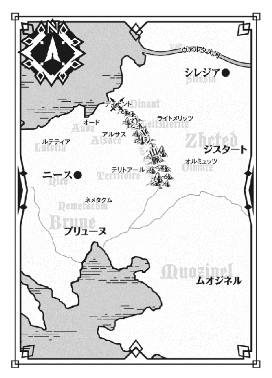
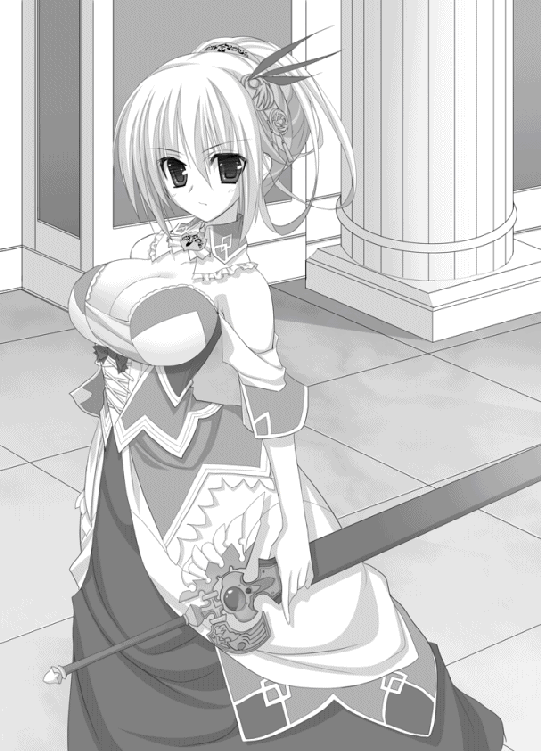

| 魔弾の王と戦姫 2 (MF文庫J) | |
| 川口 士 & よし☆ヲ | |
| メディアファクトリー (2011) | |
ＭＦ文庫Ｊ
魔弾の王と戦姫２
川口士
口絵・本文イラスト●よし☆ヲ

１ 遠い日の夢
まだ夜が明けきらないうちからティッタは目を覚ます。
前日に用意しておいた水で顔を洗い、長い栗色の髪を頭の左右で結んでツインテールにする。それから屋敷中の鎧戸を開け、慣れた手つきで厨房と食堂を掃除した。
侍女の服に身を包むのはそのあとで、急いで朝食の準備をすませる。
「そろそろ起こしにいかないと」
厨房の窓から朝日が射しこむころ、ティッタは清潔な白いエプロンをつけて鏡を覗きこんだ。仕える主の顔を思い浮かべるだけで、自然と笑顔になれた。
「――おはようございます。ティグル様」
よし、だいじょうぶ。
ティッタはスカートの裾をつまんで階段を静かに上っていく。彼女の仕えている主の部屋は、屋敷の二階の奥にある。なにか用事でもないかぎり昼を過ぎても寝ているような男で、ティッタにはいつのまにか妙な使命感が備わっていた。
「あたしが起こさなかったら、誰がティグル様を起こすというんです」
ティグルヴルムド＝ヴォルンというのがティッタの仕える主の名だ。
どこかおおげさな響きのあるこの名を、当人は嫌ってはいないようだが、呼びにくかったらティグルでいいと、ひとには言っている。
小さいころにティグルと会ってそう言われてから、ティッタはよほどかしこまった場を除いてはティグル様と呼び続けてきた。
「昨日も夜遅くまで起きていらしたんですから、今日ぐらいはそれこそ昼まで寝ていてもいいと思うんだけど......でも、起こしてくれと仰っていたし」
そんなことをつぶやきながら、ティグルの部屋の前に立つ。ちいさくひとつ深呼吸して、ティッタは扉をノックした。反応がないのを確認して、静かに扉を開ける。
ベッドで寝ているティグルに白刃が突きつけられていた。
「ティグル様......！」
顔を青ざめさせながら、ティッタは猛然と駆けだす。ほとんどティグルを抱きしめるようにしてその上に覆いかぶさり、長剣を手にしている人物を見上げた。
青を基調とした服を身につけた、腰に届くほどの銀髪が印象的な美しい少女だ。呆気にとられた顔で、彼女はティッタを見下ろしている。
「あ、あなたは......ど、ど、どういうつもりですか......っ！」
驚きと怒りとでティッタの声が震えた。銀髪の少女は慌てて長剣を腰の鞘におさめる。
「いや、すまない。おまえを脅かすつもりはなかったのだが」
「じゃあ、どういうつもりだったっていうんですか！ そもそも、あなたはどこから入ってきたんです!?」
「そこからだ」
あっさりと、銀色の髪の少女は開け放たれている窓を指さして答え、腕を組んで釈明をはじめた。
「以前、どれだけ呼んでも起きず、剣を口に入れてやっと起きたという話を聞いたことがあってな。どのぐらいまで刃を近づけたら反応するだろうかと......まあ、その、なんだ、ちょっとした遊びだ」
言葉の最後で歯切れが悪くなったのは、はしばみ色の瞳に涙をにじませたティッタがすさまじい形相で睨みつけたからだ。銀髪の少女は困ったように頬をかいた。
「怪我をさせるつもりなんてなかったし、悪意はない」
「そのつもりがなくても怪我をするなんてことは、いくらだってあるんです！」
正論だった。ぐうの音も出ず、少女は黙りこむ。
そのとき、ティッタの下でティグルがもぞもぞと動いた。
「......ティッタ？」
眠気を帯びた声が耳をくすぐり、ティッタは慌てて彼から離れる。
寝癖のついた赤い髪をかきながら、ティグルが身体を起こした。自分に視線を注ぐふたりの少女を一瞥してから窓に顔を向ける。
見えるのは青というには薄い、水色に近い空だ。さわやかな風が吹きこんできて、三人の髪をそっと撫でる。
「何の騒ぎだ。まだ朝じゃないか」
「もう朝です」
顔を赤くしながら、それでもしっかりティッタは答え、ティグルはそんな彼女の様子に気づかずに、仕方ないといった顔をつくるとおおきく伸びをした。どこかばつの悪い顔で立っている銀髪の少女を見る。
「どうしたんだ、エレン？」
「いや、それがな......」
言いよどんだ少女――エレンに代わってティッタが事情を説明した。話を聞き終えたティグルはひとつうなずくと、呑気そうな顔でエレンに笑いかける。
「面倒なところを見つかったなあ」
「まったくだ」
「ティグル様！」
ティッタが大声をあげ、ティグルとエレンは反射的に身をすくませる。その仕草はふたりとも母親に叱られたこどものようだった。
食堂のテーブルを、ティグルとティッタ、そしてエレンの三人が囲んでいる。
テーブルにはライ麦のパンやミルク、葡萄酒、燻製にした魚のスープに薄切りにした鶏肉、ゆで卵などが並んでいた。
当然のような顔でエレンが席についたとき、ティッタはよほど「あなたの分は用意していません」と言ってやろうかと思ったが、自重した。
いまだに事情はよく呑みこめていないが、彼女はティグルの客なのだ。侍女の自分が恥をかかせるわけにはいかない。
――やっと、ティグル様とふたりでご飯が食べられると思ったのに。
今日より以前にティグルとティッタがふたりだけで食事をしたのは、ティグルがディナントの戦場へ行く前日までさかのぼらなければならない。
「おまえは侍女といっしょに食事をとるのか」
パンを手にしながら、意外そうな顔でエレンが訊いた。
「ここで暮らしているのは俺とティッタだけだからな。別々だと何かと面倒だし、話をするのにもこの方がいい。ティッタには屋敷でのことをすべて任せてあるから」
「大変だな」
「慣れてますので」
感心したような視線を向けるエレンに、ティッタは短く答えて一礼した。
「ところで、どうしたんだ。こんな朝早くに」
スープをすすりながら尋ねたティグルに、葡萄酒を一口飲んでからエレンは答える。
「私はここを発つ。そこで、おまえのこれからの予定を聞いておこうと思ってな」
「これから、か」
スプーンを動かす手を止めて、ティグルはテーブルの一点を見つめた。
ティグルはブリューヌ王国の貴族である。二年前に父を亡くし、伯爵位とアルサスの地を継いだ。
ディナントの戦場で、彼はジスタート王国の戦姫エレオノーラ＝ヴィルターリア――エレンの捕虜となったが、ブリューヌの大貴族であるテナルディエ公爵がアルサスを焼きはらうつもりであることを知らされ、彼女の力を借りて帰還した。
そして三日前、ティグルはテナルディエの軍を完膚なきまでに打ち破り、敗走させたのである。その日の夜は民、兵らとともに勝利の宴に酔いしれた。
次の日――すなわち一昨日から昨日にかけては、一転して処理に追われた。
亡くなった者たちを埋葬し、その葬儀を執り行い、なかばまで焼かれた町を忙しく歩きまわり、再建するための指示をいくつも下した。
アルサスの領民だけでなくエレン配下の兵たちの協力もあって、どうにか昨日には復興への道筋をつけることができたのだった。それでも夜遅くまでかかったのだが。
今日から考え、行動するのはこれからについてだ。
――テナルディエ公爵はまた来るだろう。俺はザイアンを討ったんだから。
アルサスを襲ったテナルディエ軍の総指揮官はザイアン＝テナルディエ。公爵の嫡男であり、次期公爵となるだろう若者だった。
テナルディエ公爵家は古くからの名門で、国王も無視できないほどの権勢を誇り、動かせる兵力は一万を数える。親族にも貴族が多く、彼らの兵力をも併せれば三万を超えるともいわれる。
一方、このアルサスで動かせる兵力はせいぜい百ていど。
無理をいえば三百ぐらいまで増やせるが、それは主な働き手である若い男たちを失い、村や町がほとんど機能しなくなるほどの段階だ。
――よくて一万、最悪三万......。
あまりに圧倒的な差に、ティグルの表情が緊張と恐怖でこわばる。
自分はいったいどうすればいい。何をすればいいのだろうか。
それに、内心でわだかまっている不安はテナルディエのことだけではない。
「迷っている顔だな」
楽しそうな声音がティグルの耳をくすぐった。顔をあげると、エレンが口元に笑みをにじませてこちらを見ている。
ティグルが何か言おうとする前に彼女は席を立ち、背を向けた。
「次に会うときまでにどうするか決めておけ。兵の大部分は引き上げさせるが、リムをとりあえずの代官として置いていく」
「代官？」
「この地は私のものだからな。おまえの立場はリムの補佐ということになる」
マントをひるがえして颯爽と歩きだしたエレンの背中に、ティグルは疑問をぶつけた。
「それなのに、これからどうするのかを俺に決めろっていうのか？」
「私やリムがこの地を放りださないよう、知恵を絞ることだ」
遠ざかっていくエレンの足音を聞きながら、ティグルは椅子の背もたれに寄りかかって深いため息をついた。
朝食をすませると、ティグルは二階へあがった。すぐに自分の部屋には戻らず、廊下のつきあたりにある小さな部屋へと向かう。
中肉中背のティグルが寝そべることもできないほどの狭い部屋。そこには一張の黒い弓が、立派な装飾を施された台の上にたてかけられていた。
弓は、握りも弓弦も暗闇を凝縮したかのように黒い。染めているのではなく、素材そのものが黒いのだ。素材の正体はティグルでもわからない。
狩人だった先祖が使っていたといわれるヴォルン家の家宝であり、ティグルはモルザイム平原での戦いでこの弓を使って幾多の兵を射倒し、ザイアンを破り、飛竜を貫いた。
姿勢を正し、呼吸を整えて、胸の前で握り拳をつくって横に引く。
代々の先祖に対するこの礼を、ティグルは小さいころから起きたらすぐに行っていたのだが、テナルディエ軍を撃退して以後は朝食後に行うようになっていた。
この弓と対峙するのに体力と気力と、そして勇気が必要だったからだ。
――これは、ただの弓じゃない。
ザイアンが飛竜での逃亡を図ったとき、自分の頭に響いた声。
そのあとの、飛竜を射落とした一撃。
矢はごくふつうのものだ。鋼鉄の剣や槍を通さない竜の鱗を、突き通すどころか傷つけることすらできるはずがない。それは自分がいちばんよくわかっている。
二年前に山奥で地竜と遭遇したときも、ティグルの放った矢はどこに当たっても傷を負わせることはできなかったのだ。技量の問題ではない。
しかし、戦場であの声を聞いたあとに射放った矢は、飛竜を文字通り粉砕した。
この不気味な弓の存在が、テナルディエのことと並んでティグルの心を重くしていた。受け継がれてきた家宝であるため粗末に扱うことなどできないが、こうしてじっと見つめていると、自分が怪物にでもなりそうな錯覚を覚える。
「おまえはいったい、何なんだ？」
つぶやくような声で、ティグルは目の前の弓に問いかける。
弓は何も答えなかった。
◎
エレンはティグルの屋敷を出ると、神殿へ向かった。
彼女がアルサスまで率いてきた一千の兵たちは町の中の広場や空き家などで過ごしているのだが、エレンの腹心といえるリムアリーシャをはじめ、隊長級の者たちはこの神殿の一部を借りて寝泊りしている。
ブリューヌとジスタートは同一の神々を信仰しており、兵たちにそれほど抵抗はなかった。せいぜい祀られている神像を見上げて、俺の故郷にある神像の方がはるかに出来がいい、と内心でうそぶくぐらいだ。
この二日間、彼らは瓦礫の撤去や崩れかけた家を直したり、いっそ破壊して新しく建て直したりといった作業に従事していた。
ほどなく神殿が見えてきた。ちょうど木製の扉が開いてリムアリーシャ――リムが姿を見せ、エレンは彼女の名を呼ぶ。
エレンに気がついたリムは謹厳な表情で敬礼を返した。
金色の髪を頭の左側でむすんで流している長身の美女で、その顔には愛想のかけらさえもない。エレンと同じ青を基調とした服装で、腰には剣を帯びていた。
彼女はエレンの右腕といえる存在で、軍務、政務の両面において補佐を務めている。
「いまからどこかへ行く用事でもあるのか？」
「いえ、エレオノーラ様のところへ伺うつもりでしたので」
「すれ違わずにすんで何よりだ。兵の選抜はすんだか？」
これは質問というよりも確認だった。リムは眉一つ動かさずうなずく。
「ルーリックを指揮官として百騎選びました」
「そいつらはおまえに任せる。国王を黙らせたら戻ってくるから、それまで頼むぞ」
気軽な口調で笑いかけるエレンに、リムはほんの少しだけ不満をにじませた。
「エレオノーラ様はずいぶん彼を信頼されているのですね」
「おまえもそうだと思ったが」
「評価できるところはありますが、信頼はしておりません」
頑なな態度を見せる部下に、エレンは苦笑して肩をすくめる。
「わかったわかった。とにかくやりかたは任せるから、ティグルを助けてやれ」
ひらひらと手を振って悠然と歩き去る白銀の髪の戦姫を、リムは一礼して見送った。エレンの姿が見えなくなると、近くにある木の柵によりかかって空を見上げる。
朝の青空にはまだ白さが残っていた。
「後に引けなくなるほどの深入りは避けたかったのですが......仕方がありませんね」
エレンが軍を動かしたのは、ティグルに対する好意からだけではない。
アルサスを防壁として、内乱の火の粉がライトメリッツにおよばないようにするためであり、テナルディエ公爵の軍がどのようなものなのか、その目でたしかめるためであり、事態の変化に応じてブリューヌへ介入できるようにするためだった。
――そのはずが......あのモルザイム平原での一戦が、大きく変えてしまった。
リムは目にしていないが、エレンをはじめ多くの兵士が見たと言っている。
ティグルの放った矢は大気を引き裂き、矢とは思えぬ速度と威力で空高く舞う飛竜を貫いて、その先にある雲までも吹き飛ばして虚空の彼方に消えたという。
にわかに信じられる話ではない。竜の鱗は鉄の刃を通さないほどに強靭だ。しかも、相手がはるか上空にいる飛竜では、矢を届かせることすら不可能だろう。
――でも、ティグルヴルムド卿はやってのけた。
エレンによると、ティグルの弓は彼女の長剣――銀閃アリファールと呼応したらしい。竜具に呼応する武器など聞いたことがないが、エレンが見間違えたとは思えない。
――彼に対する好意を除いたとしても......手放せるわけがない。
もしも他の戦姫がティグルとその弓の存在を知ったら、間違いなく手に入れようとするだろう。味方にするにしても、あるいは殺してしまうにしても。
――それを考えれば、彼を助けたのは結果として最上なのですが。
戦姫と同等の力を持つ者を味方にすれば、今後何かとやりやすくなる。それを除いてもティグルは尋常でない弓の技量を持っているし、人格にも問題はない。
しかし、ジスタートの戦姫がブリューヌの内乱に首をつっこみ、大貴族を敵にまわして戦うというのは、やはり小さからぬ波紋を生むだろう。
リムは空を眺めながらあれこれ考えていたが、やがてちいさくため息をついた。
「......エレオノーラ様のためです。微力を尽くしましょう」
リムが屋敷を訪れたとき、ティグルは前庭で馬に鞍を乗せているところだった。足元には水や食糧が入っているのだろう袋が置かれている。そのそばで、栗色の髪をした侍女が戸締りをしていた。
「どこかへ行かれるのですか？」
リムの言葉は、声音の鋭さのためにやや詰問じみて響いた。驚いたように身をすくませたのはティッタで、ティグルはどこかぼんやりとした表情で反応する。
「ちょっと、ユナヴィールの村を見てくる。明日の日暮れには帰るよ」
「ユナヴィール？」
首をかしげたリムに、ティグルは鞍の調子を確認しながら答えた。
「いまから馬でだと昼過ぎぐらいには着けるかな。北西にある村でね、テナルディエ公の軍はその近くを通過していた」
「そこの住民たちは避難したのですか？」
「みんな森へ避難したという報告は届いている。だけど、念のために見ておきたい」
アルサスには、このセレスタの町以外に四つの村があるが、他の三つの村についてはテナルディエ軍の行路から遠いことと、とくに被害を受けたという知らせもないので、いますぐ視察する必要はないとティグルは考えている。
――気持ちはわからないでもないですが......。
一定の理解を示しながらもリムは苛立ちを覚えずにはいられなかった。これからテナルディエの軍と戦わねばならず、悠長にかまえている時間などないのだ。
――それに......。
ティグルの表情と口調がどこか精彩を欠いて見えるのも、リムの感情を負の方向へ刺激する。
「そこの侍女を伴っていかれるのですか？」
リムがそう尋ねたのは、馬に乗せている鞍が大きいことと、ティッタがここ数日で見慣れた侍女の服ではなく麻織りの厚手の服を着ているからだった。
「ティッタはずうっと屋敷にいたからな。気晴らしをさせてやりたい」
――怖気ついたということはないと思いますが。鞍に差している弓も、あの黒い弓ではなくありふれたふつうのものですし。
ティグルは領民を救うために、命がけで公宮からこのアルサスまで駆けてきたのだ。リムが彼を評価する数少ない点である。
「わかりました。あなたが戻ってくるまでに、アルサスに関する記録や資料を調べさせていただきたいのですが、よろしいですか？」
内心の思いはともかく、口に出してはリムはそう訊いた。もっとも、その声にはすくなからず棘が含まれていたが。
「わかった。そういったものは俺の部屋と書斎にある。場所は――」
リムに場所を説明すると、ティグルはティッタを向いてうなずいてみせる。ティッタは不満そうに頬をふくらませたものの、束になっている屋敷の鍵をリムに渡した。
「あの......」
「ご心配なく。資料や記録以外のものには一切手をつけないことを約束します」
リムはわずかに表情をゆるめてティッタに微笑みかける。ティッタはおそるおそるというふうに頭を下げると、慌ててティグルのもとへ駆け寄った。
「それじゃ行ってくる」
馬を引いて町の外へ歩いていくティグルと、寄り添うようについていくティッタを見送ると、リムは屋敷の中へ入った。
アルサス領内に敷かれている街道は、それほど立派なものではない。
雑草を徹底的に引き抜いて土を平らに固め、見通しがよくなかったり森が近いところに柵を立てているていどだ。
ティッタはティグルの後ろで、馬に横乗りになっている。本当はティグルにしがみつきたかったのだが、邪魔になると思って両手で鞍の握りをつかんでいた。
人間を二人乗せていることと、鞍の両側に荷物を提げているために馬はそれほど速くなく、またティグルの馬術を信頼しきっているためティッタは安心して乗っている。
――無理を言ってついてきてよかった。
ユナヴィール村へ行くとティグルが告げたとき、ティッタは自分もついていくと言って譲らなかった。ティグルは最初困惑し、最終的には根負けした。
そうまでしてティッタが同行したがった理由はふたつある。
ひとつは、すこしでもティグルのそばにいたかったからだ。
ディナントの戦場へ向かうティグルを送りだしてから、ティッタはひとりの夜を何日も過ごしてきた。ブリューヌ側の敗戦を知ってからは、神殿に通って祈りながらも不安は消せなかった。
それが解消されたのは本当に束の間。
ようやく再会できたと思ったらティグルはジスタート軍とともに戦場へ向かい、戻ってくれば宴に町の復興と多忙をきわめ、話す暇などまるでなかった。
ティグルの背中にそっとよりかかると、ぬくもりがじんわりとつたわってくる。
「ティグル様」
「どうした？」
「ティグル様が何を考えているのか、これからどうされるのかはわかりません。でも、あたしはずうっと、どこまでもティグル様についていきます」
朝からティグルがどこか浮かない顔をしていたことに、ティッタは気づいていた。それが、ついてきたもうひとつの理由だ。
――いつものティグル様なら、狩りをするにはいい日だ、ぐらいのことは仰るのに。
食事をすませてもその様子は変わらず、一度二階にあがって降りてきたときには、ひどくなっているようにさえティッタには思えた。
ティグルの悩みはティッタにはわからない。知ったとしても、おそらく一介の侍女が力になることなどとうていできない問題なのだろう。
それでも、ティッタはティグルを励ましたかった。
自分だけはどんなときも、何があってもティグルの味方だとつたえたかったのだ。
「――ありがとう、ティッタ」
返ってきた言葉はそれだけだったが、その中にいつものティグルらしさが含まれていることを感じとって、ティッタはほっとすると同時に嬉しくなった。
ユナヴィールは、住人の数が二百に満たない小さな村だ。
すぐ近くに森が広がっており、この村の住人で森へ入ったことがない者はいない。こどものころは森で遊び、成長すると薪や木の実、茸などを採りに入るようになる。
狼や猪といった獣もいないわけではないが、こちらが集団でいて、かつ縄張りに入らなければ襲ってくることはほとんどない。そういう、のどかな村だ。
ティグルたちが村に着いたのは、太陽が真上に達してから一刻ほど過ぎたころだった。昼食も食後の休憩もとうに終え、日が沈むまでの一仕事に精を出している時間だ。
畑を耕していた農夫たちはティグルの姿を認めると、農具を持ったまま小走りに駆けてきた。ティグルも馬を止め、まず自分が下りてからティッタに手を貸して彼女を下ろす。
「みんな無事だったか」
「へえ、領主様。おかげさまで」
初老の男が頭に手をやり、日に焼けた顔に笑みを作る。他の農夫も口々に言った。
「言われたとおり森の中に隠れとったら、あいつらさっさと行っちまったんです」
「一昨日、あの連中がひどい格好で逃げていくところを見ましたわ。さすが領主様だ」
ティグルは農夫たちの話をひとつひとつ聞いて、それが一段落すると彼らと別れた。馬を引きながら村長のところへ向かう。
ほどなく、さきほどの農夫たちと同じように畑を耕している村長の姿が見えた。
年齢は四十代。樽のような体型をしているが、腕と脚は農作業によってたくましく鍛えられている。顔は日に焼けて赤い。
ティグルに気づいた村長は、畑を出て歩いてきた。
「ようおいでくださいました、領主様。畑仕事を手伝いに来てくださったので？」
「手伝ってもいいが、結局おまえが全部やり直すはめになるぞ？」
とぼけた顔の村長に、ティグルは笑って肩をすくめてみせる。実際、ティグルはいままで一度しか鍬を握ったことがなく、そのときの作業もひどいものだった。
「はは、そいつは勘弁ですな」
村長が腹をゆすって笑い、ティッタもくすりと微笑む。村長が笑いをおさめるのを待って、ティグルは村が受けた被害について尋ねた。
「ご覧の通りで、死んだり怪我した者はおりません。村を囲む柵が壊されたぐらいです」
そこまで言ったところで、村長の顔が深刻さを帯びる。
「ところで、ジスタートの軍が来たという噂を聞いたのですが......」
「彼らは俺が雇った味方だ。心配することはない」
村長を安心させるように、自信に満ちた態度でティグルは笑ってみせた。
村長はモルザイムにおける勝利を祝い、ささやかながら宴の席を用意しようと言ってくれたのだが、ティグルは明日が早いからと断った。
夜が明けて、村長に別れを告げティグルはセレスタに向けて馬を走らせる。
その表情はティッタから見て、やはりどこかすぐれないものだった。すこし考えて、ティッタはおもいきって呼びかける。
「ティグル様。あの、どこかでお昼寝していきませんか？」
予想外の発言に、ティグルは馬足をゆるめて彼女を振り返った。
「ティッタがそんなことを言うなんてめずらしいな。俺が寝ていないように見えたか？」
「まだ疲れが残っているようには......」
控えめにティッタは答える。ティグルは苦笑したが、拒絶はしない。たしかに、そろそろ休憩をとろうかと考えていたのだ。
見上げた青空には太陽が白く輝いており、昨日と変わらず天気はいい。
「せっかくだから甘えさせてもらうか。たしか、この近くに猟師小屋があるはずだ」
ティグルは街道を外れる。すこし進むと、丘の上にぽつんと建っている小屋が見えた。丸太を組み合わせて建てたもので、ティグルも以前何度か利用したことがある。
馬から下りて中を覗きこむと、誰もいない。
室内の中央は板が切り取られて灰で固めてあり、火を熾すことができる造りになっている。それを見るかぎり、ここ数日で使われた形跡はなさそうだった。
外に馬をつないで身体を拭いてやり、水を飲ませる。ティッタも手伝った。
それがすむとティッタとともに小屋の中へ入り、ティグルは床にごろんと横になる。
「ティッタも休むといい。ずうっと馬に乗りっぱなしで疲れただろう」
「あたしが起きていなかったら、誰がティグル様を起こすんですか」
冗談めかした口調で返され、ティグルは頭をかいた。
「わかった。でも、無理はするなよ」
優しく言って、目を閉じる。
自分で思った以上に疲れていたのか、ティグルはすぐに眠りについた。
◎
十歳ぐらいの女の子が目の前にいる。
「――ティグルさまぁ」
舌足らずな声。頭の左右でちいさく結んだ栗色の髪と、きらきら輝くはしばみ色の瞳でティッタだとわかった。
「ティグルさまぁ、こっち」
ティッタは無邪気ににこにこと笑って、ティグルの手をつかむと歩きだした。ティグルはおとなしくついていく。
ふと自分の手を見て、これは夢だとティグルは悟った。自分もティッタと同じくらいの年齢になっていたのだ。
両脇に畑の広がる細い道を、少年と少女は歩いていく。
気がついたとき、ある畑の前にティグルは立っていた。
「ティグルヴルムド」
ひとりの男がこちらへ歩いてくる。父だ。二年前に亡くなった、ウルス＝ヴォルン。
「さあ、耕してみろ」
父は持っていた鍬をティグルに渡した。
――そういえば、こんなことがあったな。
ぼんやりとした浮遊感の中で、ティグルはそんなことを考えながら鍬を振るう。
たしか十歳のころだった。父の視察についていき、そのとき一度だけ鍬を持たされたことがあった。
平気でやれると思っていたが、実際は四半刻もしないうちに身体中が痛くなって音をあげた。翌日には両手におおきなマメがいくつもできており、ティッタの手当てによって手を包帯だらけにしたものだった。
鍬を振るっていたのが、急に視界が切り替わる。
ティグルは父とともに丘の上に立っていた。
眼下には、緑色の葡萄畑がどこまでも広がっている。
「ティグルヴルムド」
父は息子に優しく語りかける。
「彼らは毎日のように畑を耕している。種を撒き、水をやり、虫や鳥を追い払う。村のそばまでやってくる野兎や猪もだ。日照りに怯え、嵐を恐れ、それらを乗り越えて収穫をすませたら、また畑を耕す作業に戻る。その繰り返しだ」
僕だって狩りをしてるよ。幼いティグルはそう答えた。このまえだって、こんなおおきな鹿を射止めたんだ。
「おまえの弓の技量は、年齢を考えれば見事なものだ。しかし、狩人たちとは違い、生きるために狩りをしているわけではないだろう」
生きるため、というのはよくわからなかったが、ティグルはうんとうなずいた。
「畑仕事もそうだ。彼らはみな、生きるためにやっている。おまえが、どうしてそれをしないでいいのか、わかるか」
父さんの、領主の息子だから。たしか当時の自分はそう答えた。いまでは思いだすと赤面するしかない。その答えに、父は怒ったりしなかった。
「では、私はどうして畑を耕さなくてもいいんだ？」
偉いから。そう答えると、父はゆっくりと首を振った。
「いいか、ティグルヴルムド。私たちは、いざというときのためにいる」
「いざというとき？」
「そうだ。彼らが解決できないような困難な事態が訪れたとき。土砂崩れや洪水が村を襲ったとき。山賊が現れたとき。疫病が流行ったとき。不作のとき。村同士で揉めごとが起こったとき。近隣の貴族と川や山の使用について衝突したとき。他にもたくさんあるが......そういったことを解決し、彼らが平和な日々を送ることができるよう努めるのが私たちの仕事だ」
「でも、そんなことってあまりないんじゃ......」
再び、父はゆっくりと首を横に振る。
「ひとが多く集まるほど、治める領土が広いほど、揉めごとは増える。このアルサスは小さいこともあって平和だが......」
そこで言葉を途切れさせると、父はティグルの頭にぽんと手を置いた。肉厚のてのひらに、夢であるにもかかわらず重みと温かさをティグルは感じた。
「忘れるな、ティグルヴルムド。主とは――領主はそのためにいる」
手の感触が消えた。父が静かに歩きだす。その後ろ姿を見ながら、ティグルは動けずにいた。父を追いかけようと思っても足が動かない。
「父さん......父さ――父上」
そこで目が覚めた。視界に映るのは猟師小屋の薄暗い天井だ。小屋の外からちちち、と鳥の鳴き声が聞こえる。
――父上......。
父親の夢などを見たのは、いったいいつ以来だろうか。
身体を起こそうとして、自分の半身に重みとかすかな熱を感じ、ティグルはそちらに目を向ける。
ティッタが自分に抱きつくようにして、穏やかな寝息を立てていた。どきりとしたが、ティグルはすぐに落ち着きを取り戻す。
――おまえが父上に会わせてくれたのか。
夢の中で、父のところへ連れていってくれたのは幼いティッタだった。胸の奥から温かい感情が湧き起こって、ティグルは彼女をそっと抱きしめる。
ティッタが目を覚ましたのはそれから十数えるほどの時間が過ぎたあとだ。
ふぇ、と寝ぼけたような声を発して彼女は顔をあげ、焦点のさだまらない瞳でティグルを見つめる。
状況を理解するとティッタは慌てて飛びあがった。真っ赤な顔で手をばたばたと動かしながら、しどろもどろになって言い訳をする。
「ティ、ティグル様、これは違うんです。その、えっと......だ、誰か入ってきたりしても邪魔にならないようにというか......」
ティッタの狼狽ぶりにティグルは苦笑し、内心でほっとした。
父のことを思いだして感傷的な気分に浸っていたが、考えてみれば自分も彼女を抱きしめている。小屋の薄暗さもあって、雰囲気次第ではどうなったかわからない。ティッタの態度が、ティグルを冷静にさせてくれた。
「ティッタ」
落ち着いた声音で呼びかけると、ティッタも混乱から立ち直ってティグルを見る。
「ありがとう。おかげで、かなりすっきりしたよ」
そう笑いかけるティグルの表情に、眠る直前まであった深刻な陰りはなくなっていた。
ライトメリッツでエレンに兵を借りてから、ティグルはテナルディエ軍の撃退に町の再建と、休むことなく駆け続けてきた。
それが一段落したところで心に間隙が生じ、不安や恐怖が入りこんだのだ。
――いまは、立ち止まっているときじゃない。
いまのティグルには、やるべきことがいくらでもある。
テナルディエ軍と戦うのは、ライトメリッツを発ったときにわかっていたことだ。いまさら臆してどうする。
黒弓の不思議な力は気になるが、考えるには手がかりがなさすぎる。いまはこのことは置いておこう。
「行くぞ、ティッタ」
力強い足取りでティグルは猟師小屋を出る。見上げた空はさわやかに晴れ渡っていた。
――何もなければ、いい狩り日和なんだけどな。
「ティグル様」
後ろから、ティッタのすこし怒ったような声がした。
「狩りのことを考えていらっしゃったでしょう？」
「......どうしてわかった？」
「わかります。もう何年お仕えしてると思ってるんですか」
答えてから、ティッタは楽しそうな、嬉しそうな笑顔を見せた。さきほどの声は冗談の類だったらしい。ティグルは苦笑を浮かべて彼女を馬に乗せる。
自身も騎乗しながら、ティグルは後ろのティッタに呼びかけた。
「ティッタ。セレスタに戻ったらいそがしくなる。それだけじゃない、かなり危険な状況にもなると思う。だから、ひとまずマスハス卿のところにでも――」
「ティグル様」
ティッタが手を伸ばし、後ろからティグルを抱きしめる。
「昨日申しあげましたよ。どこまでもおともします、って。ティグル様があたしを助けてくださったように、今度はあたしがティグル様をお助けします」
ティグルは自分を抱きしめているティッタの手に、そっと自分の手を重ねた。
彼女の言葉が嬉しくて、自分が少々情けなくもあった。迷い、悩んでいた自分と違い、この年下の侍女はとうに決意を固めていたのだ。
ティッタの手を離し、ティグルは手綱を握りしめる。馬の腹を蹴った。
「しっかりつかまっていろ」
逸るティグルの心を表すかのように、馬は猛然と速度をあげはじめる。
背中に感じる少女のぬくもりとかすかな重みが、心地よかった。
予定よりも半刻速く、ティグルたちはセレスタに帰り着いた。
屋敷に戻り、厩舎に入ると馬が一頭つながれている。ティグルのものではない。
馬をよく見ると、黒いたてがみの中央に白い毛が一筋走っている。
「この馬、マスハス様の......？」
「うん。間違いない」
驚きの声をあげるティッタに、ティグルも声を弾ませた。
「ティッタ、任せていいか？」
はい、と満面の笑みでティッタがうなずき、ティグルは駆け足で厩舎を飛びだした。屋敷の扉を勢いよく開け、革靴の泥を落とすのももどかしく思いながら中へと入る。
まず食堂へ行ってみたが、そこには誰もいない。次に応接室の扉を無造作に開ける。
マスハス＝ローダントはそこにいた。
彼の名前を呼ぼうとして、ティグルはおもわず声を呑みこむ。応接室は、こどもなら泣きだしてしまうだろうほどの険悪な雰囲気に包まれていたのだ。
小さなテーブルを挟んで、マスハスとリムが睨みあっている。
――......見なかったことにしようか。
このまま扉を閉めて厩舎へ戻り、ティッタに夕食の献立について尋ねるのが、いちばんいいような気がした。
「――戻ったか、ティグル」
首だけを動かしてマスハスがこちらを見る。小柄でずんぐりとした体躯を落ち着いた色調の服で包み、灰色の髭には年齢相応の貫禄がある。
「無事なようで何より......と言いたいところじゃが、おぬしに聞きたいことがある。この屋敷にティッタやポーラ以外の女性がいるというのは、非常に珍しいことじゃのう？」
ポーラというのは近所に住む五十代の主婦だ。ティグルの父ウルスが存命だったころに侍女として働いていたことがあり、いまでも忙しい時期に手伝いに来ることがある。
言葉を続けるマスハスは好々爺然とした穏和な笑みを浮かべているが、その目はまったく笑っていない。
「それもジスタートの方で、アルサスの代官だというではないか。詳しい話を、ぜひおぬしの口から聞かせてもらえんかな」
ティグルは視線だけを動かしてリムを見たが、彼女はいつもの無愛想な表情で黙然と座っている。
頭の中で思い描いていた感動の再会は、どこにも見当たらなかった。
◎
アルサスからやっとの思いでネメタクムに帰りついたテナルディエ軍を待っていたのは、公爵による苛烈な懲罰だった。
公爵家の嫡男であるザイアンの護衛についていた者、彼を補佐して兵の指揮をとっていた者は鞭打ちの刑に処せられた。彼らに鞭を打ったのは、戦死した兵の遺族である。
鞭は拷問用のもので、先端に棘のついた革紐が十数本取りつけてある。それで背中を打たれると皮が裂け、肉がえぐれて、血飛沫が飛び散るのだ。悲鳴をあげると回数を増やされるので、彼らは歯を食いしばって激痛に耐えた。
それ以外の兵たちは、焼けた鉄の棒で背中を強打されるという罰を受けた。
テナルディエ公爵は銀製のグラスに注がれた葡萄酒を口にしながら、自分の下した罰が実行される光景を無言で眺めていた。公爵は無表情でいたが、腹の底から湧きあがる怒りをおさえかねているのは誰の目にもあきらかだった。
――ザイアンは年齢の割に、愚かで頼りなくはあったが。
彼にとっては、それでも大事な息子だった。
そのザイアンは軍を率いての合戦に敗れ、ティグルとの一騎打ちにも敗れ、あまつさえ死体はモルザイム平原にある沼に沈んだという。
――おのれ、小僧......おのれ、ジスタート......！
状況が許すならば、自身で軍を率いてアルサスヘ乗りこみ、ティグルを斬って捨てたいほどだった。
公爵は今年で四十二になる。大柄な体躯は鍛えられて引き締まり、剣も槍も馬も、並の騎士よりはるかに巧みに使う。戦場においての武勲も少なくない。
一線からは身を引いたが、いまでも鍛錬は続けていた。
刑が終わると、豪壮な屋敷の廊下を憤然と歩いて、公爵は己の私室へと戻る。
すでに葡萄酒の瓶を四本まで空にしていたが、彼はまったく酔っていなかった。鋭い眼光には殺意が揺らめいて、見る者を窒息させかねないほどの圧力に満ちている。
公爵の私室は派手な印象こそないが、ものの価値を知る者が見れば、緊張のあまり部屋に入ることをためらうに違いない。
細かな刺繍がほどこされた絨毯も、黒檀の机も、黄金造りの燭台も、どれもが非常に高価なものばかりだ。金銀宝石で埋めつくされた部屋に入るようなものである。
しかし、公爵は乱暴に足を踏みいれ、椅子を引きずって勢いよく腰かけた。
机の上に置いていたアスヴァール産の火酒をつかみ、蓋を開けるとグラスに注ぐようなこともせず一気に呷った。
「――荒れておいでですな」
不意に声がして、テナルディエはそちらを睨みつける。
開け放たれた扉の前に、黒いローブに身を包んだ小柄な老人が立っていた。フードを目深にかぶっており、顔は見えない。
「ドレカヴァクか」
空になった酒瓶を叩きつけるように机に置きながら公爵が吐き捨てると、老人はくぐもった笑いを漏らして一礼した。
ドレカヴァクは数年前からテナルディエ家に占い師として仕えている。
この屋敷で、否、ブリューヌ全土を見渡しても、テナルディエに対して不遜ともいえる態度をとることが許されているのは、この老人ひとりだけだった。屋敷に務める従者が同じことをすれば、家族ともどもその日のうちに処刑されてしまうだろう。
「おまえのことだ、話は聞いておるだろう」
「ザイアン様が亡くなられた件でございますな。心よりお悔やみを――」
「思ってもいないことを言う必要はない。貴様にそのようなものなど求めておらぬ」
ドレカヴァクの言葉をさえぎって、テナルディエは老人の顔を隠すフードを見据えた。
「これは恐縮。しかし、閣下にしてはてぬるい処罰でしたな」
「いまは兵が惜しいときだ。殺すわけにはいかぬ」
実際、二千近い兵と二頭の竜をこのような形で失ったのは、テナルディエにとって予想外の打撃だった。領主のいない僻地を焼き払う。ただそれだけだったはずなのだ。
しかし、兵の報告ではティグルヴルムド＝ヴォルンがジスタート軍を率いて現れ、ザイアンを討ち、竜を倒し、三千の兵を散々に蹴散らしたという。
「兵と兵のぶつかりあいはともかく......アルサスの惰弱な小僧に竜が倒せるとは思えぬ。ジスタートの戦姫の仕業か？」
テナルディエの猛々しい眼光を受けとめて、ドレカヴァクはゆっくりとうなずいた。
「まず間違いないでしょうな。彼の国に七人いる戦姫。あれらはひとりにひとつずつ竜具と呼ばれるものを持っておりますれば」
「......名前だけは聞いたことがあるが、それほどに強力なのか。その竜具とやらは」
「人智ではとうていはかれぬ代物で、相手が竜であろうとたやすく斬り裂き、貫き、打ち砕く力を秘めております」
現実に竜が倒されているとはいえ、もしもドレカヴァク以外の者がこの発言をしたのであれば、テナルディエは一笑に付して取りあおうとしなかっただろう。
「その武器は何でできている？」
「地上にはない物質によって」
ドレカヴァクの答えに、テナルディエは黒い髭を震わせて口をゆがめた。
「なるほど。だから鋼で傷つかぬ鱗を持つ竜をも、容易に斬ることができるか」
「さようでございます」
戯言としか思えないような言葉を、テナルディエはあっさりと信じた。
「わかった。新たな竜はいつごろ用意できる？」
「一月ほどの時間と、いくばくかの金銭が必要となります」
慇懃に、こしをかがめてドレカヴァクは頭を下げる。もっと早くできないのかとテナルディエは言いかけたが、この老人が一月といったらそれだけの時間がかかるのだ。そのことは、これまでのつきあいでよくわかっている。
机に置いてあった銀色の鈴をとりあげ、テナルディエは鳴らした。
急いで参上した従者に言いつけて用意させたのは、人間の頭ほどのおおきさの袋だ。その中にはこぼれ落ちそうなほど大量の金貨がつまっていた。
「ところで、ヴォルン伯爵と戦姫はどうなさるので？」
「それは私が対処する。貴様は竜の用意を急げ」
ぶあつい手を振って公爵は退出を命じる。音もなくドレカヴァクが姿を消し、扉が閉まると、公爵はこめかみのあたりを指でたたいた。今頃酔いがまわってきたのだ。
「......仕方あるまい」
テナルディエは苦みをこめてつぶやく。自分の手でティグルを討ちたいが、あいにく身体はひとつしかないし、兵も無限に用意できるわけではない。
「虫を潰すのに斧を用いるようではあるが『七鎖』を使うとするか。他には――」
鈴を鳴らし、従者を複数呼びつけるといくつかのことをすばやく指示する。それがすむと水を持ってこさせ、一気に飲み干した。
「騎士には騎士、竜には竜......戦姫には戦姫、か。ドナルベインがもうすこし使えるならば、やつを連絡役にしてもよかったのだが」
銀製の杯に映る己の顔を見ながら、テナルディエはゆっくりとつぶやく。
「そういえば、ガヌロンもジスタートの戦姫とつきあいがあったはずだな。あの男はどう出るやら......」
２ 戦姫二人
ティグルはわざわざ他の部屋から椅子を持ってきた。マスハスの隣にも、リムの隣にも座ることがためらわれたのだ。
「私の隣が空いていますが」
リムが冷然と視線を向けてくる。たしかに彼女が座っているのは大人がふたり並んで腰を下ろしても余裕のあるソファだが、好意からの発言ではもちろんない。
「――ティグルよ」
腕を組んでソファにふんぞり返り、リムを睨みつけながらマスハスも口を開く。
「おぬしが無事でいたことは本当に嬉しい。顔を合わせるのはディナント以来、積もる話はそれこそ山のようにある。しかし、このお嬢さんが気になって、わしやおぬしの口が不意に重くなったりするような......そんなことはよくないと思うのじゃがな」
ティグルは頭を抱えたくなった。自分がこれからやろうとしていることは、このふたりの協力が欠かせない。話をする前からこれでは、先が思いやられる。
まず何から言おうかと考えていると、鼻歌混じりの軽快な足音が近づいてきた。扉が開き、ティッタが顔を覗かせる。
「マスハス様！ よく来てくださいました！」
「おお、ティッタか。無事なようでなによりじゃ」
栗色の髪の侍女の姿に、マスハスも顔をほころばせた。この老騎士にとってティグルが息子のようなものならば、ティッタは娘のようなものだ。彼には息子がふたりいるが、娘はいないのでなおのこと愛情は強い。
「皆さま、すぐにお茶をお持ちします」
リムにも忘れずに会釈すると、ティッタはスカートの端をつまみあげて一礼し、礼儀正しく応接室を去った。緊迫した空気がかきまわされて穏やかなものとなり、ティグルはほっと胸をなでおろす。
「マスハス卿、まずは俺から話させてください。リム......リムアリーシャは、足りないと思ったところがあったら補足してくれ」
ティグルはディナントでエレンに会ってからのことを、順序だてて説明した。リムは時折もの言いたげな目でティグルを見たが口を挟むことはなく、マスハスは何度かうなずきながら、こちらも黙って聞いた。
話し終えたころ、ティッタが三人分の冷茶を運んできた。
話し続けて喉が渇いていたティグルはありがとうと言って受け取り、一気に飲み干す。
マスハスはしばらくの間、茶を満たした陶製のコップをじっと見つめていたが、ティッタが応接室から下がると、顔をあげてリムに視線を向けた。
手を膝に置いて深く頭を下げる。
「リムアリーシャ殿。まずはあなたの言葉を疑ったことをお詫びする」
「仕方のないことです。こちらも、礼を失したことをお詫びします」
「俺たちが戻ってくる前に、いったい何があったのですか？」
ふたりの態度に、ようやくティグルはその疑問を口にすることができた。
「調べものをしているときにマスハス卿がいらっしゃったので、応対に出たのですが」
「わしも冷静さを欠いていたことは認める。だが、町にはジスタート軍がおって黒竜旗がひるがえり、おぬしに会おうと屋敷に来てみれば、出てきたのはジスタート軍の指揮官だと名のる人物じゃ。ティッタの姿もないし、どうしたものかと思ったぞ」
「......ご面倒をおかけしました」
ティグルとしてはひたすら恐縮するしかない。
マスハスのことを忘れていたわけではもちろんない。だが、自分から会いに行こうと考えており、来てくれるとは思っていなかった。
「ところで、リムアリーシャ殿。ひとつ尋ねたいことがあるのじゃが」
灰色の髭を撫でながら、マスハスが黒い双眸をリムに向ける。
「あなたは......いや、あなたの仕えている戦姫エレオノーラ＝ヴィルターリア殿は、なぜティグルを助けてくれたのだ？」
「エレオノーラ様は義を重んじ、情に厚い方ですので」
リムの答えにティグルは内心で首をひねったものの、否定もできないので黙っている。
「ただ、義と情だけで動いてくださったと？」
「契約も重んじます。ラジガストの名にかけて」
ラジガストはブリューヌとジスタートで信仰されている契約の神だ。この神の名を用いた約束事は、非常に重いものとされている。
「ティグルヴルムド卿はエレオノーラ様の捕虜となりましたが、彼がヴォルン伯爵であること、アルサスの領主であることには変わりません。そして、彼はアルサスという土地を支払うことで協力を求め、契約は成立しました」
「なるほど。しかし、そもそもアルサスの土地はティグルのものであって、ティグルのものではない。国王陛下が国土を割いて、ティグルに与えたものじゃ。ブリューヌ貴族のひとりとしてアルサスに住む民を守る、という誓いのもとに。土地を対価にするような取引を、陛下はお認めになるはずがない。それは戦姫殿もわかっていると思うがの」
ブリューヌとことをかまえる気なのか、とマスハスは暗に問いかけた。
「そうなりましたら、あらためてブリューヌ国王陛下と交渉をすることになるのではないでしょうか」
「......それでは、そのときまではティグル......ヴォルン伯爵に力を貸してくださると？」
念を押すようなマスハスの態度に、そういうことかとリムは内心でうなずいた。
――こちらがどこまで協力するつもりなのかを、探っているのですね。
「そのつもりではありますが」
まずないだろうと思いながらも、リムは口を開いた。目の前のマスハスよりも、むしろティグルに聞かせるために。
「もしもティグルヴルムド卿の振る舞いが、エレオノーラ様の義と情をもってしても許容できないものになったときは......我らはヴォージュ山脈の向こうへ引き上げることになりましょう」
「精進するよ」
短く答えて肩をすくめたティグルを、リムは目を細めて注意深く観察する。
ぱっと見てわかるような変化はないが、黒い瞳からは強い意志がうかがえた。
――この二日で何があったのかはわかりませんが......。
リムは安堵する。彼女の役目はティグルの補佐だ。ティグル自身がしっかり動いてくれねばどうにもならなくなる。
「ところでマスハス卿。俺も聞きたい、いや教えてほしいことがあります。ガヌロン公爵の兵はどうなったんですか？ あなたはどうやって彼らを食い止めてくれたんです？」
ガヌロン公爵もまた、アルサスを襲わんと兵を動かした人物である。
マスハスは自分がガヌロンを食い止めるゆえ、テナルディエの兵たちは頼むと手紙にしたためてバートランに持たせたのだ。
「うむ。それがな......」
歯切れ悪くマスハスは灰色の髭を撫でた。
「言ってしまえば、運がよかっただけじゃな。わしは時間稼ぎぐらいしかしておらん」
ガヌロン公爵が自身の領土たるルテティアから二千の兵を発たせたのは、テナルディエ公爵よりも三日早かった。
それぞれアルサスまでの距離はほとんど変わらない。順調に進めば、ガヌロン軍はテナルディエ軍に先んじてアルサスに侵入し、略奪と暴行をほしいままにしただろう。
ガヌロン軍を止めるためにマスハスがまずやったのは、近隣の諸貴族への呼びかけだった。それも自分と同じ小貴族で、中立を望んではいるものの、自分では何を言っても耳を傾けてもらえないだろうと諦め、動けないでいる......そんな者たちに声をかけたのだ。
どの貴族がそうした考えを持っているかは、ティグルを助けようと各地を駆けまわっていたときに知っていたので、すぐに呼び集めることができた。
集まったのは四人。時間に余裕があればさらに何人か増えただろうが、マスハスはここで切り上げ、自身を含めた五人でガヌロン軍に接触した。
酒と食事を用意して二千の兵をもてなし、軍の指揮官に面会を求め、自分たちは中立であり、ガヌロン公爵に敵意はないものと伝えてもらうよう頼みこんだのである。
「ガヌロン軍は進軍を止めた。もっとも『あなたがたの言葉は公爵閣下に伝えておく』という返事しかもらえなかったがの。とはいえ、そのぐらいは予想はしておったし、わしの目的はあくまで足止めだったからいいんじゃが」
マスハスが浮かない顔をしていることに不審を感じてティグルは訊いた。
「何か、よくないことでもあったのですか？」
「向こうは、わしらの話を聞く代わりに周辺の貴族の情報をやたらと求めてきた。軍を止めている間も多くの斥候を放っておった。推測じゃが......ガヌロン軍は、わしらを口実に進軍を止めたのではないかと思っている」
首を振って、マスハスはずんぐりとした身体をすくませる。
「アルサスを襲う気がなかった、ということですか？」
「あまり積極的ではなかった、というのが正確なところかの。そして、彼らはテナルディエ公爵が三千の兵を発したことと、その中に二頭もの竜がいることを知った」
そこで一旦言葉を区切り、マスハスは懐疑的な目でティグルとリムを見る。
「ティグルよ。ジスタート軍はその竜を二頭とも屠り去ったそうじゃな。事実なのか？ わしは五十年以上生きてきたが、竜などというものは見たことがない。いや、調教された幼竜ならば一度だけ、地方の辺鄙な村で見たことがあったが......」
「本当です」
ティグルは断言し、リムと視線をかわす。
「戦姫たるエレオノーラ様が二頭とも討ち果たしました」
マスハスは渋い顔をして何度か唸ったが、やがて髭が震えるほどの大きな息を吐いた。
「おぬしが言うからには、その通りなのじゃろうな。ともかく、竜の存在を知るやガヌロン軍は撤退の準備をはじめた。そして、テナルディエ軍の敗北がつたわると早々に去っていった。わしは、ぽかんとして見送るばかりだった」
こんなところじゃなと締めくくり、マスハスは冷茶の残りを一気に呷る。
「さて、ティグル。これからの話じゃが――おぬしはどうするつもりだ？」
「テナルディエ公爵と戦います」
重々しい口調で問いかけたマスハスが目を瞠るほどあっさりと、ティグルは即答した。
「ガヌロン公爵の傘下に入るということか？」
「いえ。俺はどちらにも属するつもりはありません」
ガヌロンもテナルディエ同様、アルサスを攻めようとしていたのだ。
そんな人物と組む気にはとうていなれない。
「......おぬしなりによく考えての結論なのじゃろうな？」
身を乗りだして睨みつけてきたマスハスの視線を、ティグルは怯む様子もなくまっすぐ受け止め、強くうなずく。
「正直に言えば、逃げだしたくなるほど怖いです。相手はブリューヌで一、二を争う大貴族。俺は辺境の小さな一伯爵。勝負になるはずがない。でも――」
声に力をこめてティグルは続けた。
「俺は父上から受け継いだアルサスを、この地の民を守る義務がある。いえ、義務がなくても俺は守りたい。いざというときに彼らを守るための、俺は領主なんです」
「ティグル......」
十といくつかを数えるほどの時間、マスハスは黙って赤い髪の若者を見つめていた。同時に、若者を通してその父親――マスハスの親友だった男を見ていた。
「その道は、おぬしが考えている以上に険しいものじゃぞ。テナルディエ公爵は、おぬしが彼の息子を討ったこと、国土を譲り渡してジスタート軍を招きいれたことを許さぬじゃろう。自分がアルサスに兵を向けたことなど棚にあげてな。その姿勢に賛同、あるいは黙認する者はいても、批判する者はほとんどおらん」
これは脅しではない。事実だ。
「リムアリーシャ殿を前にして言うのははばかられるが、ジスタートにもジスタートの都合があろう。それだけをあてにして戦い抜けると、おぬしは思っているのか？」
「さすがにそこまで楽観してはいませんが」
ティグルは闊達な笑みを浮かべて答えた。
「まあ、なんとかやってみようと思います」
その言葉に、いつもの悪い癖が出たと思ってマスハスは憤然と声をあげかける。
だが、ティグルの黒い瞳に真摯さと、強い意思があふれていることに気づいて灰色の髭の老将は叱責の言葉を呑みこんだ。ため息をつく。
「具体的に言え」
日が傾いている。
ティッタに冷茶をもう一杯持ってきてもらって一息ついてから、ティグルは話を再開した。窓から射し込んでくる西日が、服に微妙な陰影をつくっている。
「いま考えていることはふたつあります。ひとつは、国王陛下に書状を送ること」
無法にもアルサスを荒らしまわったテナルディエ公爵の非を鳴らし、彼らを止めるためにジスタート軍の力を借りることはやむをえなかったと主張する。
「それは効果があるのでしょうか？」
青い瞳を疑問の色で彩らせて、リムが首をかしげる。
「効果は薄いかもしれんが、陛下の臣という立場を崩さないためにはやっておくべきじゃろうな。それに、ガヌロン公爵などが、テナルディエ公爵を攻撃するために利用する可能性はある。期待してはいかんがの。それで、もうひとつは？」
「とりあえず味方をさがしてみます」
エレンとジスタート軍は強力だが、そればかりを頼みにするわけにもいかない。それこそ、さきほどリムが言ったように愛想をつかされてしまうだろう。
「とりあえず、とはまたずいぶんと軽いの」
マスハスは苦笑したが、ティグルの顔は真剣そのものだ。
「マスハス卿。いまのブリューヌはどういう状況なんですか？ テナルディエ公爵とガヌロン公爵の一騎打ちを待つばかり、といったところでしょうか」
「うむ。そうじゃな......」
そこでマスハスはちらりとリムに視線を向けた。
「用が済むまで、私は外で待っていましょうか？」
とくに不満を表情に出すでもなく、リムはソファから腰を浮かしかける。
「いや、君はここにいてくれ」
首を強く横に振ってそれを止めると、ティグルはマスハスへ視線を向けた。
「マスハス卿。彼女は俺の協力者です。俺に話せることなら、彼女も同席させます」
その言葉に対して疑問の声をあげたのはリムだった。
「私はエレオノーラ様ではありません。あなたにそこまで信頼される理由はない」
「エレンが君を信頼して、ここを任せたんだろう？ だったら俺は君を信頼するよ。それに、君のことだって何も知らないわけじゃない」
穏和な笑みを浮かべてティグルは答える。愛想のないリムの表情に、困惑や後ろめたさなどいくつかの感情が不鮮明に混じった。
「......そこまで仰るなら、あくまでエレオノーラ様の代理としてお話をうかがいます」
ため息をついて、リムはソファに座り直す。マスハスはティグルとリムの顔を交互に見たあと、話を再開することにしてテーブルにとん、と太い指を置いた。
「ティグル。さきほどおぬしの言ったように、現在のブリューヌは内乱という嵐が起きるのを誰もが待っている状況じゃ。余裕のある者は嵐に備え、ない者は嵐に怯え、といったふうにな。近隣諸国......ジスタートにムオジネル、ザクスタンやアスヴァールもどうなるかと注目しとるじゃろうて」
「テナルディエとガヌロン以外の勢力というのは、存在しないんですか？ つまり、そのどちらにも属しないような......」
それについての情報をこそ、ティグルは何よりもほしかった。
「それなりにいる」
マスハスはうなずいて懐に手を入れると、数枚の銀貨や銅貨を取りだした。
「我が国の勢力を......百としよう。テナルディエ公爵とガヌロン公爵がそれぞれ四十......いや三十かな。わしやティグルは残りの四十に属しておる」
大きめの銀貨を二枚、テーブルに置く。
「そう聞くと、充分対抗の余地はあるように思えますが」
首をかしげるリムに、マスハスは首を振った。
「四十の内、三十は我が国の騎士団。王都を守護している者たちや、国境を守っている者たちすべてを合わせた数じゃ。中立の立場をとっている貴族など、残りの十でしかない」
小さな銅貨を十数枚、マスハスはテーブルに積み重ねた。
その鈍い輝きは数こそ多いものの、窓から刺し込む陽光をまばゆく反射する銀貨に比べてあまりにもみすぼらしく見えた。
「だがな、ティグル。おぬしだけは他の貴族たちと条件が違う」
深刻になりかけた空気を払うように、マスハスは小さな銀貨を一枚、テーブルに置く。
「おぬしはジスタートの戦姫殿を味方につけている。あまりあてにするとそっぽを向かれると言われたが――うまくやれば中立派の貴族たちをまとめ、現状に不満を抱いている騎士や、仕方なく公爵たちに従っている貴族を束ねて、第三の勢力となれるやもしれん」
「それは......すごいですね」
テーブルに並べられた数々の銀貨や銅貨を見て、ティグルは唾を呑んだ。そこまでできれば、テナルディエと互角に戦うことは充分に可能だろう。
「あくまで、なれるかもしれない、ですよ」
冷ややかにリムが釘を刺す。
「そもそも、ティグルヴルムド卿は我が国に領土を売り渡した反逆者です。討伐軍が編成されて差し向けられるのは時間の問題でしょう」
「討伐軍はそうすぐには来ぬよ」
自分の言葉を否定したマスハスを、リムはじっと見つめた。根拠を説明してほしいという顔だ。
「三千の兵に、竜を二頭。それほどの軍勢が完膚なきまでに敗れたのだ。リムアリーシャ殿。あなたならどうする？」
問いかけられて、リムはうつむきがちになって考えこむ。マスハスは言葉を重ねた。
「同数ではまた負けるかもしれぬ。かといって倍の六千を用意するにはそうとうな時間がかかる。配下の貴族から兵を募ったとしても、引き受けたがる者がどれだけいるやら」
「......それに、ティグルヴルムド卿にばかりかまってもいられない、というわけですか」
納得してリムはうなずく。テナルディエ公爵とガヌロン公爵はおたがいをこそ最大の敵と認識しているはずだった。
「でも、悠長にかまえている時間はない」
テーブルの上の銀貨を見つめて、ティグルが口を引き結ぶ。
なんといっても地力が違う。同じ時間を使っても、ティグルがどうにか三百の兵を組織する間に、テナルディエは一万の兵をそろえるだろう。
「ティグル。おぬしがさきほど言った、国王陛下への書状は誰に持たせるつもりじゃ？」
「まだ決めていませんが」
いまの立場を考えれば、王都へ向かうのは危険な役目だ。テナルディエ公爵が妨害する可能性もある。誰にでも任せられるものではない。
「わしが持っていこう」
気軽な口調でマスハスが言い、ティグルはさすがに驚いた。
「ま、待ってください。わざわざマスハス卿が......」
「なに、わしはおぬしと違って他国の軍を引き入れたりはしておらんからな。それに、王宮に勤めている者に幾人か知り合いがおる。陛下へのお目通りはかなえられやすい」
ティグルはためらったが、このことを頼めそうな人物の中でマスハスがもっとも適任なのは間違いない。悩んだ末に、深く頭を下げた。
「......それでは、お願いします。書状は明日の朝までに用意しておきますので」
マスハスはずんぐりとした身体を揺らしてうなずく。
「ところでティグルよ。ユーグ＝オージェ子爵を知っておるか？」
唐突に出された名前に、ティグルは記憶をさぐってみる。昔、どこかで聞いたことがあるような気がした。
「たしか......テリトアール地方を治めている方ですよね。小さいころに一度、父に連れられて挨拶をさせていただいた覚えがあります」
「オージェも中立を標榜している者でな。知己も多い。紹介状を書くから会いに行ってみてくれ。力になってくれるはずじゃ」
感極まって、ティグルはとっさに言葉を出せなかった。身を乗りだし、目に涙をにじませてマスハスの手を握りしめる。
「......ありがとうございます、マスハス卿！」
「やれやれ。女性の前だというのに、もうすこし颯爽とした振る舞いができんものかの」
マスハスは苦笑を浮かべ、穏やかな眼差しでティグルを見つめると、その肩を軽く叩いて顔をあげさせた。
「気にすることはないぞ、ティグル。わしは嬉しいのだ。おぬしの力になれることがな」
ティグルがジスタートの捕虜になったとき、マスハスは奔走しながらも結局何もできなかった。己の無力さを痛感し、悔やみ、ティグルの父ウルスに詫び続けたのだ。
「ここまでで、リムアリーシャ殿は何か質問などはおありかな」
マスハスに聞かれ、リムはその青い瞳をティグルへと向ける。
「ティグルヴルムド卿はテナルディエ公爵と戦うと仰いましたが、具体的にはどのあたりまで考えているのでしょうか。たとえば、公爵家を滅ぼし、彼の一族を根絶やしにするまで戦い続けるのですか？」
マスハスが目を丸くするほど過激な質問に、ティグルは首を振って否定した。
「俺の目的は、あくまでアルサスの平和だ。テナルディエ公爵が二度と手を出さないと誓ってくれればそれでいい......と言いたいところだけど」
そこでティグルは困ったように、くすんだ赤い髪をかく。
だが、本当に困っているわけではなく、態度は泰然として余裕さえもうかがわせた。決断も覚悟も、とうにできている。
「俺に協力してくれるひとたちにただ働きをさせるわけにもいかないからな。俺には金はないし。金銭なり領土なりを、要求することにはなるだろう」
話しあいを終えて、リムは応接室を出る。日はほとんど沈みかけていた。
――思ったより長話になりましたが。
ティグルが前向きになったのは単純に喜ばしいことだった。
――人柄のせいでしょうか、まだ足りないところはありますが、それは私が補佐すればいいことです。
ただ安心した、というだけでなく、喜びを覚えている自分にリムは気がついていたが、その方がエレンにとって都合がいいからだろうと理解した。
リムはそのまま屋敷を辞するつもりだったが、すこし考えて食堂へと向かう。ティッタが厨房と食堂を忙しく往復して、テーブルに食器などを並べているところだった。
「......なんでしょうか？」
リムに気づいたティッタは、やや警戒しながらこちらへ歩いてくる。
「ひとつお願いがあるのですが」
リムはすっと腕を持ち上げ、壁に飾られている小さな人形を指さす。リムの手の中におさまりそうなぐらいのおおきさの、熊の人形だ。
「よかったら、いただけませんか？ ......その、ああいうのを好きなひとがいるので」
ティッタに言ったように、リムはティグルの部屋と書斎以外には一歩も足を踏み入れなかった。しかし、食堂のそばを通りかかったときにこの人形が視界に入り、それ以来気になっていたのだ。
リムの台詞の後半は、口調といい、いかにもとってつけたようなものだったが、ティッタは気づかなかった。可愛らしい顔をしかめてリムを見上げる。
「でも、あれはかなり汚れてますよ？」
「かまいません」
はあ、とティッタは困惑した表情でリムと人形を交互に見る。
その人形は一年ほど前、壁に何も飾られていないのを気にしたティッタが作ったものだった。
「よかったら、明日にでも同じものを作っておきますけど」
言い終える前にリムが無表情のまま勢いよく身を乗りだしたので、ティッタはもう少しで悲鳴をあげるところだった。
「いいのですか？」
「は、はい......」
「ぜひお願いします」
リムはどうにか無表情を装っていたが、内心ではこみあげてくる歓喜をおさえるのに必死だった。ティッタにとってはありふれた作りだったが、リムにとっては珍しい形だったというのも大きい。
明日受け取りに来ることを告げて、リムは上機嫌で屋敷を辞した。
◎
ジスタートの王都シレジアは、王国のほぼ中央にある。
海に通ずるヴァルタ大河を北に臨むこの都には百万を越える人々が暮らしており、無数に延びた街道からはさまざまな国の産物が入ってくる。
東からくる馬車にはヤーファの竹細工や武具、遊牧民族の毛皮や獣脂などが積まれ、南からやってきた商人たちはムオジネルの香辛料や陶磁器、紅茶、金銀をふんだんにあしらった装飾品を奴隷に運ばせている。
西から現れた隊商がブリューヌやザクスタンの小麦や葡萄酒、鉱物などを市場に並べれば、ヴァルタ大河を渡ってきた船団は遠くアスヴァール近海でとれた魚や珊瑚、真珠を港に降ろしていく。魚といっても大人の背丈よりもはるかにおおきなものばかりだ。
国の外からばかりではない。ジスタートを守る戦姫――彼女らが治める七つの公国からも毛織物や香料、宝石などが運ばれ、近隣の村々からやってきた農民たちは新鮮な果物や野菜、卵などを売り歩く。
酒場をひとつ選んで入れば、ジスタートの吟遊詩人が三弦琴をかき鳴らし、ブリューヌの道化師は虹色の玉をいくつも放って芸を見せて場を湧かせ、赤い髪をしたザクスタン人の美女が客たちに酌をしてまわる。
一国の王都らしく華やかさに満ち、日が沈んでも喧騒は絶えず、中央の通りから明かりが消えることはない。それが王都シレジアだった。
「あいかわらずにぎやかなところだ」
楽しそうに声を弾ませながら、エレンはそれらの光景を横目に馬を進める。いまの彼女は麻の服に粗末な革鎧、毛皮のマントという旅人然とした格好をしていた。
アリファールは目立つため、上から布を巻いて腰に差している。それが不満らしく、この竜具は時折風を起こして自分を包む布をふくらませていた。
「やれやれ。できればそこらの店で果物でも買って、ぐるりと一回りして芸なり踊りなりを観ていきたいところだが」
この王都ではそういうわけにもいかない。誰がどこから見ているかわからないのだ。
王宮に着くと、名のるまでもなく兵士たちはかまえを解いて、うやうやしく一礼した。
「エレオノーラ＝ヴィルターリア様、念のために竜具をあらためさせていただいてよろしいでしょうか」
「よく私だとすぐにわかったな」
「だから王宮の門番を続けていられます」
エレンは感心しながらアリファールに巻いていた布を外す。鞘に納められた長剣は解放されたことを喜ぶかのように、ゆるやかな風を起こして銀色の髪をくすぐった。
「他の戦姫はいるか？」
「リュドミラ＝ルリエ様とソフィーヤ＝オベルタス様がいらしております」
そうかとエレンは鷹揚に答え、返された銀閃を腰に差して王宮の門をくぐる。その表情は微妙なものだった。
――ソフィーはともかく、リュドミラか......。
リュドミラとはあまり仲がよくない。正確に言えば悪い。
「まあいい。まずは面倒な用事をかたづけてしまうとしよう」
王宮の奥にある謁見の間に通されたエレンは、銀色の髪を結いあげ、白銀を基調としたドレスに身を包んでいた。
肩を出し、胸元と背中が開いた大胆なつくりで、袖や裾に細かな装飾を施し、随所に真珠と翠玉をあしらって清楚な印象を崩さず華やかさを得ることに成功している。
左手にある銀閃アリファールが異彩を放つが、それは戦姫の美しさを損なうものではなく、鋭さと強さを加えることによってかえって引き立たせているかのようだった。
その美貌と颯爽たる振る舞いに圧倒され、居並ぶ廷臣たちはほうとため息をつく。
通常、謁見の間においては、いかなる者だろうと武器を携えて王の前に出ることは許されない。唯一の例外といってよいのが、戦姫が竜具を持つ場合だ。
エレンは玉座まで延びる真紅の絨毯を静かに歩いていき、所定の位置で足を止めるとその場に膝をつく。アリファールを床に置いて、頭を垂れた。
「面をあげよ」
玉座から、乾いた枯れ木をきしませたような声が発せられる。ジスタート国王ヴィクトールのものだった。
エレンの記憶では、国王は今年で六十になるはずだ。灰色の髪と髭は丁寧に整えられているが艶はなく、肌は黒ずみ、青い目に活力はない。背筋はまっすぐ伸ばしているが、ゆったりとした衣から伸びている手は、骨と皮だけでできているかのように細かった。
「......『降魔の斬輝』が主、エレオノーラ＝ヴィルターリア。このたび余の許しを得ることなく、ブリューヌ領内へ軍を進めたと聞いたが、まことか」
「陛下の仰る通りにございます」
「何か理由あってのことか。申してみよ。返答によっては、そなたの軽率な振る舞いにふさわしい罰がくだるであろう」
「陛下のお許しを得て申しあげます」
――できるものならやってみるがいい。
内心でそううそぶきながらも、態度だけはあくまで神妙にエレンは答えた。ティグルの屋敷を発つ前に、リムと相談して口実はできあがっている。

「雇われたのです」
謁見の間が静まり返った。ヴィクトール王は一瞬言葉を失い、痩せた身体を震わせてエレンを凝視する。エレンはあくまで表面上は、謹厳な態度を崩さない。
「雇われた、とは......何者に？」
「ティグルヴルムド＝ヴォルン伯爵。ブリューヌの貴族で、アルサスの領主です。彼が兵を貸してくれと言ったので、私を指揮官として一千ばかり」
「ジスタートの戦姫ともあろう者が、傭兵のような真似を......」
ヴィクトールの薄い唇から歯軋り混じりの唸り声が漏れた。
その反応を受け流し、エレンはまず、ブリューヌ王国の現状について説明する。テナルディエ公爵とガヌロン公爵の激突が近いうちに起こるだろうと述べた。
「我がライトメリッツはブリューヌ王国と国境を接しております。内乱が起きれば、火の粉がこちらに降りかかってくるのは間違いないところ。そこで、ヴォルン伯爵に我らを雇わせ、アルサスを盾として火の粉を防ぐことにしたのです」
「火の粉が降りかかるというのは、そなたの思いこみに過ぎないのではないか」
ヴィクトール王は意地悪く顔をしかめた。
「思いこみと仰いますが、陛下。テナルディエ公爵は本来自分のものではない領土を無法に侵そうとしており、いたずらに混乱を拡大させる気配は濃厚でした。それに、理はヴォルン伯爵にこそ――」
エレンの言葉を、ヴィクトール王は苛立たしげに手を振ってさえぎった。
「結局そなたのやったことはブリューヌへの侵略なのだ。ライトメリッツとそなただけの問題ではない、ジスタートとブリューヌが刃をまじえることになるのだぞ。わしはブリューヌとことをかまえる気などないというのに」
それに対してエレンが反論しようとしたとき、黙然と控える群臣の中からひとりの女性が進みでた。
「恐れながら、陛下に申しあげます」
ゆるやかに波打つ淡い金色の髪と、緑柱石の色をした瞳。年齢は二十歳前後。
楚々としたたたずまいでおっとりと微笑む、エレンとはまた違う魅力を備えた長身の美女だ。足元まである薄緑のドレスに包まれた豊かな胸と細い腰は、男性だけでなく女性でさえも魅了するだろう見事な曲線を描いている。
その手にあるのは、鈍い輝きを放つ不思議な造りの錫杖。
「......ソフィーヤ＝オベルタスか」
ヴィクトール王は忌々しげにため息をついた。ソフィーヤと呼ばれた美女は優雅に一礼すると、その場にひざをつき錫杖を床に置いて口を開く。
「歴史上、他国の力を借りて国内の覇権を争った例は枚挙に暇がありませんわ。ヴォルン伯爵の要請にエレオノーラ姫が応じたのは、ライトメリッツの判断の範疇でしょう。陛下へお伝えすることが遅れた点については問題がありますが、戦というものは古来より拙速を尊ぶもの。仕方のないことだったかと」
ソフィーヤの態度はあくまで控えめで物腰もやわらかい。その言葉はそっと耳の奥へ染みこんでいくような響きを帯びて、どこか反発しづらい雰囲気を帯びている。
ヴィクトール王は黙ってうなずくことで続きをうながした。
「ブリューヌとて、いままさに覇者を決めようという状況で、敵を増やすような真似はしないでしょう。まずはこちらの真意をたしかめに来ると思われます。そのときに事情を説明なさればよろしい。もし、それすらせずに攻めてくるというのであれば――わたくしが彼らを歓迎いたしましょう」
廷臣たちの間からざわめきがあがった。
ソフィーヤもまた戦姫のひとりだ。発言の重みが、他の者とは違う。
「......エレオノーラの好きにさせよ、と言いたいのか。そなたは」
「周辺諸国もいずれ、口実をもうけてブリューヌの内乱に介入するでしょう。ここでエレオノーラを処罰すれば、我々は他国に先んじたという優位を捨てることになります」
ヴィクトール王は苛立ちをおさえるように目を閉じて瞼をもみ、ため息をつく。一国の王として、見過ごせないことだった。不満そうな顔をエレンに向ける。
「エレオノーラよ。ヴォルン伯爵の目的は何だ。テナルディエ公爵を討って彼の所領をことごとく奪い、最終的には玉座を狙うつもりでおるのか」
エレンは頭を伏せて、懸命に笑いをかみ殺さなければならなかった。
――王がそう考えるのは当然のことだが......ティグルが玉座に、か。難しい想像だな。
「彼の言葉によれば、アルサスの平和。もっとも、テナルディエ公爵が死ぬまで平和的な考えを抱けないようであれば、彼の領土のいくばくかを手にすることにはなるでしょう」
「そなたがヴォルン伯爵から受け取る報酬はどのようなものだ」
「武勲に見合う報酬、戦にかかった費用、将兵への恩賞。以上にございます」
「領土を譲り受けるというようなことは、ないのだな？」
――結局それか。
エレンが勢力を増すかもしれないということが恐ろしいだけなのだ。この王は。
「もしも領土を譲られたならば、ひとかけらの土も漏らさず陛下に献上いたしましょう。この場にいるすべての者が証人でございます」
「......よろしい。ヴォルン伯爵の一件、そなたに任せよう」
その言葉を聞いて、ようやく解放されるとエレンはそっと息を吐いた。
「余としては、ブリューヌで起こるだろう内乱に介入するつもりは、いまのところない。諸卿はジスタートの国益をこそ第一に考え、軽挙妄動は慎むようにせよ」
◎
謁見の間を出たエレンは、すこし離れたところにある柱廊で足を止めた。
まっすぐ延びた長大な廊下は飾り気こそないが、等間隔に並んだ円柱の間から陽光が射しこんで明るさと暖かさに包まれており、エレンはほっと息をつく。謁見の間の厳粛で重厚な空気にさらされた直後だ。開放感が心地よかった。
謁見の間を出た者は、必ずこの柱廊を通る。エレンは柱によりかかって腕を組み、ソフィーヤが姿を見せるのを待った。
官僚や貴族が通り過ぎていくのをエレンはぼんやりと眺めていたが、不意に眉をひそめた。柱廊の奥に現れたひとりの少女が、まっすぐこちらへ向かってきたからだ。
「――相変わらずはしたないわね。エレオノーラ」
蔑むような視線と、棘のある声。
小柄で、背はエレンより頭ひとつ分低い。青い髪を肩のあたりで切りそろえ、髪の色に合った、青く染めた絹服を身につけている。薄衣を組みあわせ、随所に赤と金をあしらった豪奢なつくりだ。手には、柄の短い槍を持っていた。
槍はどこか神秘的な雰囲気を帯びて、静かで冷たい輝きを放っている。その輝きに反応して、エレンのアリファールがくるくると風をまといはじめた。
「......おまえこそ、相変わらず成長していないな、リュドミラ」
見下すような視線を受けとめ、エレンは身体を起こし、リュドミラと呼んだ少女の前に立つ。底意地の悪い笑みを浮かべ、馴れ馴れしい仕草で彼女の頭に手を置いた。
「うん？ 成長していないどころか、以前よりも縮んだのではないか？ どうだ？ しおらしい態度でお願いしますと頭を下げれば、背が伸びる方法を教えてやらないこともないぞ。ついでに、その貧相な胸が大きくなる方法もな」
「......ずいぶんと賢くなったのね。粗野と粗暴が人の皮をかぶったようなあなたが、ひとにものを教えようとするなんて驚いたわ。明日は星でも落ちてくるのではないかしら」
怒りを覚えたとしても、リュドミラはエレンの挑発に乗らなかった。高圧的な態度を変えず、自分の頭を撫でる手を静かに、優雅な手つきで払いのける。
「でも、遠慮しておくわ。私にものを教える前に、躾のなっていないあなた自身を省みなさいな。あなたにくらべれば、気性の荒い野生の竜でさえ上品に見えるわよ」
「......好意の申し出を侮辱で返すとは、実に上品な対応だな？」
「あなたの好意というのは、ひとの身体的特徴を嘲笑うこと？ ひとの世では、それはもっとも冒涜的な行為のひとつよ。礼儀について学び直すことね、エレオノーラ」
「あいにく、戦姫などと呼ばれる前は、礼儀と無縁の生活をしていたのでな」
叩きつけられる敵意を鼻で笑って、エレンは肩をすくめた。リュドミラもまなじりを吊りあげて嘲笑する。
「礼儀や品性は、己の意思と努力で身につけることができる数少ないものよ。さきほどの謁見もそうだったけど、あなたからは、このジスタートを守る戦姫としての見識も、知性も、品格も、露ほども感じられなかった」
「紅茶とジャムの瓶を腰にぶら下げて歩くような女が、品格を語るか」
エレンの言葉が癇に障ったのか、リュドミラはついに怒りを露わにして言い返した。
「今日は持ち歩いていないわよ。あなたと違って、時と場所はわきまえているもの」
「そもそも、戦姫に見識だの品格だのが求められているなどという話は初耳だ。妄想を抱くのはおまえの自由だが、それをさも常識であるかのように語るのはどうかと思うぞ」
烈しい怒りを瞳にたたえて、ふたりの少女は睨みあった。もはや言葉は不要とばかりにエレンは長剣に手をかけ、リュドミラは槍をかまえる。
静かだった柱廊は一触即発の空気に包まれた。運悪く通りかかった官吏や役人たちは、彼女らを見ないようにしながら急ぎ足で歩き去っていく。
「――えい」
突然かわいらしい声が響いて、エレンとリュドミラの頭を順番に硬いものが叩いた。
「何を......」
エレンは怒りの眼差しを声の主に向け、言葉の続きを呑みこんだ。
ソフィーヤ＝オベルタスがやわらかい微笑を湛えて、エレンとリュドミラを見ている。
「もう。喧嘩はだめでしょ、ふたりとも」
彼女の笑顔も、言葉も、他愛のないいたずらをしたこどもを叱るふうで、迫力などはまるで感じられない。
しかし、エレンとリュドミラは口をつぐみ、それぞれ気まずい表情で距離をとった。ソフィーヤの美しい顔の中の細い眉が、微妙に角度を変えていることに気づいたのだ。
見慣れた者でもなかなか気づかない微細な変化だが、間違いなく彼女は怒っている。
これ以上ソフィーヤを怒らせると冗談ではすまなくなることを、ふたりとも身をもって知っていた。
「まったく......どうしてあなたたちは、顔を合わせると喧嘩しかしないのかしら」
「この女が」
反射的に、エレンとリュドミラは異口同音に答えて相手を指さす。
また睨みあいがはじまったので、ソフィーヤはもう一発ずつ錫杖でふたりを叩いた。
「ところでエレン、どうしてここにいるの？ あなたはもう王宮を出たものとばかり思っていたのだけど」
ソフィーヤに訊かれ、エレンは一瞬口ごもったものの、素直に礼を述べた。
「ありがとう、ソフィー。おまえが口添えをしてくれて助かった。おとなしく降参するつもりは毛頭なかったが、あのままでは長引いただろうからな」
「長引くとぼろが出てしまうものね。あなたは」
「ぼろ、ていどですむわけがないわ。戦姫全員の尊厳が失われるような言動をしてもおかしくないわね」
苦笑するソフィーヤ――ソフィーに、リュドミラが冷たい口調で鼻を鳴らす。
エレンは苛立ちをまぎらわすかのようにドレスに縫いつけられた真珠をいじりながら、不機嫌そうにリュドミラへ吐き捨てた。
「私はソフィーと話がある。おまえはさっさと去れ」
「おたがいのためにも、そうした方がいいでしょうね。でも、その前に聞いておきたいことがあるわ」
腕を組み、真剣な表情になってリュドミラはエレンを見据える。
「――ヴォルン伯爵、といったかしら。どこの田舎貴族か知らないけれど、あなたはそのひとと組んで、ブリューヌの内乱に介入するということ？」
「だったらどうしたというんだ。おまえには関係ないだろう」
田舎貴族という単語に気分を害して、エレンは怒気を隠そうともしない声で答えた。
「ぽっと出の戦姫であるあなたにつきあわされるなんて、かわいそうなひとね」
哀れむような笑みを浮かべて言い捨てると、リュドミラはエレンたちに背を向ける。王宮の廊下を静かに歩き去った。
次の瞬間ぶち、という音がして、いくつかの真珠がエレンの手から床に転がり落ちる。気がつかないうちに、ドレスについていたものを引きちぎってしまったらしい。見るとドレスそのものにも小さな穴が開いている。
「ソフィー......針と糸、持ってないか」
「こういうのは素人がいじってもひどくなるだけよ。それより――」
遠ざかっていくリュドミラの背中を見送って、ソフィーは小さくため息をついた。いつもの微笑を消して、本当に困ったような顔でエレンを見る。
「エレン。あなたは......うん、すくなくともリュドミラを敵にまわしたのはたしかね」
ソフィーの台詞に、エレンの表情が戦士としての顔つきへと変わった。
「詳しく聞こう」
広大な王宮の隅に、噴水を設置した小さな庭園がある。
濠から水を引いており、噴水が凍りつく冬を除いて常に水が流れているところだ。ちなみに、巨大な魚の形をした噴水が姿を隠し、流れる水の音が声を消してくれるということで、ここは密会などにもよく使われている。
一旦厨房に寄って果実水を作ってもらったあと、エレンとソフィーはこの庭園まで足を運んだ。噴水の縁に並んで腰を下ろす。
「私がティグルの味方をすることが、どうしてリュドミラを敵にまわすことになる？」
「簡単よ」と、果実水に口をつけながらソフィーは淡い金色の髪を揺らした。
「ミラ――リュドミラは、テナルディエ公爵と長いつきあいなの」
「あいつとテナルディエが？」
エレンは信じられないというふうに目を丸くする。
「わからないな。テナルディエ公爵については私なりに調べたが、正直親交を深めたいような相手ではないぞ。あいつの嫌いな種類の人間のはずだ。いや、リュドミラのことをそう知っているわけではないが......」
「あの子のことが、気になる？」
「あいつの治めているオルミュッツは、ライトメリッツに近いからな」
エレンの返答はどこかひねくれた口調だった。不機嫌そうに果実水を飲む彼女を、ソフィーはいとおしげな眼差しで見つめる。
戦姫たちの公国はジスタート王国内に点在している。間には王国の直轄領を必ず挟み、決して隣接しないようになっていた。
ライトメリッツに近い戦姫の公国はふたつあり、そのひとつがオルミュッツだ。もうひとつの公国を治めている戦姫については、エレンは何の心配もしていない。隣に座っているソフィーと同じか、それ以上に親しい戦姫だからだ。
「あの子だけじゃないわよ。この国のけっこうな数の貴族が、テナルディエ公爵やガヌロン公爵と、なんらかの形で交流があるわ」
顔をしかめるエレンに、ソフィーは何かを考えるように視線を泳がせていたが、やがて視点を噴水に定めると、とめどなく流れる水を眺めながら訊いた。
「エレン。あなた『商人ムオネンツォ』って知ってるかしら」
「知らない。誰だ、そいつは」
「あなたやわたくしが生まれるよりもずうっと昔のひとよ。ムオネンツォには妻と、それから息子と娘がいたの。彼は毎日その三人に暴力をふるったわ。三人とも、顔が腫れていない日はなく、身体にはいつも痣ができて、夜は痛みと苦しみに泣いていたそうよ」
「......果実水のまずくなる話だな」
エレンは露骨に不愉快そうな顔になる。
「ある日、ムオネンツォはとうとう息子に刺されて死んでしまったの。多くのひとが仕方ないとしながらも彼の死を嘆き悲しんだというわ」
意外な言葉に、おもわずエレンはソフィーを見た。ソフィーは首をかしげ、複雑な表情をつくって微笑む。
「ムオネンツォはね、商人としては誰よりも誠実で、有能だったのよ。約束は違えず、遅れることもなく、すべてにおいて質も高いというふうに」
「......テナルディエも同じということか」
「ええ。彼と敵対しているガヌロン公爵もね。国内はともかく、国外ではブリューヌを代表する大貴族の名に恥じないわ。古くからの名門で信頼性があり、治める領土は豊かで広大、顔は広くて融通がきく......。あなただって、取引をする相手はしっかりしたひとのほうがいいでしょう？」
そう言われるとエレンは反論できず、拗ねたこどものように頬をふくらませた。ソフィーは気遣うような視線をエレンに注いで言葉を続ける。
「あなたとヴォルン伯爵の敵は、テナルディエ公爵だけじゃないわ。彼が勝つことで自分も利益を得る、または彼に倒れられると困る......そういうひとたちもいるのよ」
エレンは果実水の入った陶製のコップを置くと、うんざりした顔で頬杖をついた。
「それはわかっていたつもりだったが、リュドミラもそのひとりというわけか」
「そうね。でも、エレン。リュドミラに対するあなたの評価は正確よ。彼女はテナルディエ公爵のようなひとは好きではないわ。むしろ嫌いといってもいいくらい」
「だったら――」
すっぱり手を切ればいい、という言葉はエレンの喉元で引っかかって止まる。
「そう。『ムオネンツォ』なのね」
ソフィーが首を振ると、金色の髪が陰りを帯びた。
「なにより、つきあいが長いのよ。あの子が生まれるはるか前からだもの。実に何十年にもおよぶ良好な関係を、あの真面目な子が個人の感情で切ることなんてできると思う？」
「なるほどな......」
短い感想を漏らして、しばらくの間エレンは脚をぶらぶらさせながら噴水の流れをぼんやりと眺めていた。
「――ところでエレン。ここまで教えてあげたんだから、わたしも聞いていいかしら」
「何をだ？」
身体を起こして、大きく伸びをしながらエレンはソフィーを横目で見る。
「ヴォルン伯爵のこと。あなたがそこまで肩入れするなんて、どんなひとなの？」
虚を突かれて、エレンは反応が遅れた。慌てて言葉をさがし、いくばくかの間を置いてやや照れくさそうに答える。
「まあ、その......なんというか、かわいいやつだな」
あらあら、とソフィーは口に手をあてて微笑みながら、意外な思いにつつまれていた。
政治的な理由で手を貸しているとソフィーは思っていたのだが、それだけでもなさそうであることがエレンの表情から察せられたのだ。
彼女にこのような顔をさせたティグルという男に、俄然興味が湧いた。やや身を乗りだして、ソフィーはエレンの顔を覗きこむようにして言葉を重ねる。
「かわいいって、たとえばどんなところが？」
ソフィーの追及に、エレンはどこかくすぐったそうな表情になって頬をかく。
「そうだな......いろいろあるが、ひとつ挙げるとすれば寝顔かな」
「まあ。もう寝顔を見るような関係にまでなったの？」
「ば、馬鹿。あいつがいつも寝てばかりいるというだけだ」
興味津々といった顔をするソフィーに、エレンは顔を耳まで真っ赤にして否定した。
「真面目な話をするとだな。欠点はいろいろとあるが、民を思い、そのために命を懸けることのできる男だ、ティグルは。あと、弓の技量にかけては天才的だな。あんなのはいままで見たことがない」
「あら、ヴォルン伯爵はブリューヌ人でしょう？」
ソフィーが首をかしげたのは当然の反応といっていい。ブリューヌ王国の弓に対する蔑視は、近隣諸国においてもよく知られている。
「あいつはな、空高く舞う飛竜をたった一本の矢で射落としたんだ」
エレンはこどものように紅の瞳を輝かせ、にんまりと笑った。
「あらあら、それはすごいわね」
ソフィーはくすりと微笑んだが、その表情から察するに冗談だと思っているらしい。エレンは肩をすくめながら、内心では必死に笑いをこらえていた。
事実を信じてもらえないというのに、悔しくないどころかとてもおかしい。
それからもティグルのことを褒めたりけなしたりしつつひとしきり語ったあと、エレンはこう締めくくった。
「あとは実際に会って話してみろ。どうせ、そのうちルーニエに会いに来るのだろう？」
ルーニエというのは、ライトメリッツの公宮で飼っている幼竜の名だ。
この優しげでおっとりとした物腰からは想像しにくいが、ソフィーはエレンが呆れるほどの竜好きである。こうして親しくなったのも、彼女がルーニエに会うために、しょっちゅうライトメリッツへ足を運んでいたからだった。
ちなみに、ソフィーの想いとはうらはらに、ルーニエは彼女のことをあまり好きではないようで、彼女の気配に気づくとすぐに飛んで逃げる。
「前もって言ってくれれば、ティグルも呼んでおく。私としても、おまえをあいつに会わせてみたくはある。あいつの弓の技量もぜひ見せたい」
「そうね。楽しみにしてるわ」
緑柱石の瞳に純粋な喜びの色を湛えて、嬉しそうにソフィーはうなずいた。
国王にも言わなかったことだが、ティグルの持つ黒い弓について、エレンはソフィーにも伏せておくことにした。彼女のことは信頼しているが、それでも話さない方がいいと判断したのだ。
果実水がなくなり、ふたりは庭園を離れる。
「ソフィー。頼みたいことがある」
人気のない廊下を歩きながら、エレンは真剣な表情で言った。
「戦姫や有力な貴族で、テナルディエ公爵とガヌロン公爵に協力しているひとを調べてほしい、あたりかしら？」
おっとりとした微笑を微塵も崩さず聞き返してきたソフィーに、エレンはひとさし指をたてて答えた。
「さすがだ。だが、もうひとつある。テナルディエ公爵のもとに、竜を調教できるやつがいるらしい。そいつについても調べてくれ」
「竜を......？」
ソフィーが目を丸く見開いた。エレンは小さく、強くうなずく。
「地竜と飛竜が一体ずついた」
普段からドレスをまとい、深窓の姫君という評価がぴったりのものやわらかな態度からは想像し難いが、ソフィーは情報の収集に非常に長けている。
戦姫としても驚くべき武芸の冴えを見せるが、それ以上に彼女のそうした面をエレンは高く評価していた。
「そうね。他ならぬエレンの頼みだもの。わたくしも気にならないわけではないし、調べてみましょう」
「助かる。今度好きなだけルーニエを抱きしめたり頬ずりしたりしていいぞ。逃げられないようにしておくから」
エレンは容赦なく幼竜の運命を決めた。ソフィーは嬉しそうに微笑する。
「あらあら。それは楽しみね」
「ところで......念のために聞くが、おまえやサーシャは、テナルディエやガヌロンとつきあいがあるのか？」
「幸いというべきかしらね、わたくしはないわ。サーシャもないと思うけど、あったとしても中立を宣言して動かないんじゃないかしら」
王宮の門が見えてきた。まだ用事があるというソフィーと別れ、エレンは王宮を出る。陽光が降り注ぎ、おもわず目を細めて空をあおいだ。
――ティグルの方はどうなっているかな。
とにかく国王から許可は得たのだ。さっさとティグルたちと合流するとしよう。
「さあ、はじまりだ」
３ テリトアール
秋の終わりの涼やかな風を受けて、黒竜旗がひるがえる。
黒竜旗のそばには、他に二種類の軍旗がその存在を主張していた。青地に白い半月と流星を描いたヴォルン家のものと、黒地に銀の剣を飾ったエレンのものとだ。
青くさわやかに晴れ渡った空の下、ジスタート軍百騎に他数人を加えた一団は整然と街道を進んでいる。彼らはテリトアールへ向かっていた。
その先頭に立つのはふたりの男女――ティグルとリムだ。
「それでは、我が国の国王陛下の御名を正確に述べてください」
「ええと、ヴィクター......違った、ヴィクトール＝アルトゥール......」
そこでティグルは言葉に詰まった。その先がどうしても出てこない。隣で馬を進めているリムはため息をついて、手にしている細い枝でティグルの頭を軽く叩いた。
「ヴィクトール＝アルトゥール＝ヴォルク＝エステス＝ツァー＝ジスタートです。ヴィクトールが陛下の名、アルトゥールは陛下の祖父君の名、ヴォルクは狼のように育ってほしいという願いをこめて陛下の父君がつけられた愛称、エステスが姓、ツァーは王族のみに許された尊姓。これで三度目です。いいかげんに覚えてください」
ティグルは叱られたこどものような顔をして、叩かれたところをかいた。
数日前にセレスタの町を発ってから、ずうっとこの調子である。
甲冑を着け、馬上のひととなったリムの手には十数枚の紙を束ねた教本があった。その紙にはジスタートの歴史や神話、歴代の王の名や伝統的な行事などが隙間なく書きこまれている。
「......どうしても覚えなくちゃいけないのか？」
「ティグルヴルムド卿。ご自分の立場はわかっておられますか？」
つい愚痴めいた質問をこぼしてしまったティグルに、リムは背筋が凍りそうなほどの冷たい視線を浴びせかける。
「あなたはエレオノーラ様の捕虜なのです。今後、我が国を訪れる機会は頻繁にあるでしょう。場合によっては我が国に住むということも考えられます」
いやな未来だと思ったが、さすがに彼女を前にして言えるはずがない。
「エレオノーラ様に恥をかかせないためにも、こうした基本的な知識はすべて、可能なかぎり早く頭に入れていただきます」
――言いたいことはわかるけどな......。セレスタを発ってから、進軍中も休憩のときもこればかりじゃないか。
「返事は？」
「がんばります、先生」
そう答えるティグルの声には熱がない。リムが紙の束を折りたたむのを見て、やっと終わったと気が抜ける。
「ところで、冬の終わりと春の訪れを祝う、古くから行われている祭は？」
不意に質問が飛んできて、ティグルはおもわずリムを凝視した。幸い、頭はどうにか動いてくれて、一瞬後には答えが出てくる。
「たしか......太陽祭だっけ」
「正解です」
氷のような厳しい表情を溶かし、リムはやわらかい微笑を浮かべた。
「我が国はブリューヌよりも冬が長いので半年以上先になりますが、余裕があれば見ることができるかもしれないですね」
機嫌よさそうに補足してリムは馬首を巡らし、踵を返す。
「休憩にしましょう。私は兵の様子を見てきます」
離れていくリムの背中を一瞥すると、ティグルは肩を落として深いため息をついた。
「おつかれさまでした、ティグルヴルムド卿」
リムと入れ替わるようにしてひとりの騎士がティグルの隣に並ぶ。非常に整った顔立ちをした、年のころ二十前後の若者だ。髪を一本も残さず丁寧に剃りあげられた頭部が見る者に強烈な印象を与える。
騎士の名はルーリック。エレン配下の兵の中では屈指の弓使いであり、もっともティグルに好意的な男でもある。
「どうせならもっと早く来て、横から助けてほしかったな」
「そんなことをしたら、私がリムアリーシャ殿に睨まれます。それに、遠くから見ている分にはなかなかいい感じの教師と教え子に見えたので」
「当事者の俺には拷問のような時間に思えたがなあ」
首を振って疲労感を振り払うとティグルは話題を変えた。
「ティッタやバートランはどうしてる？」
ティグルたちの後ろにいる百騎のジスタート兵に混じって、セレスタからついてきた者たちがいる。ティッタや、ティグルの従者を務める老人バートランなどだ。
ティッタの同行について、ティグルは最初反対していたのだが、彼女の強い要望と、意外なリムの賛成によって考えを変えた。
「あなたには、身だしなみを整えてくれるひとがひとり、そばにいた方がいいでしょう」
「......俺はそんなにだらしないかな？」
「ライトメリッツを発つとき、私とエレオノーラ様とでどのような評価を下したか覚えておいででしょうか」
リムに冷たく言われ、ティグルはぐうの音も出なかった。
ティグルとしても、本音では、ティッタを屋敷にひとりで残していくのは気が進まなかった。理由はふたつある。
テナルディエ軍を撃退して帰還したあと、ティグルはティッタを叱ったのだ。
「俺を屋敷で待つというティッタの気持ちは嬉しいよ。でも、ああいうときは逃げないと駄目じゃないか」
申し訳ありません、とティッタははしばみ色の瞳に涙をにじませて謝り、その場はおさまったものの、ティグルの心には不安が残った。
そうした危惧に、彼女にさびしい思いをさせたくないという思いが加わり、ティグルはティッタの従軍を受けいれたのだった。
「とくに問題はありませんな。ティッタ殿は兵たちに人気ですが、リムアリーシャ殿の目があるので皆おとなしいものです」
「リムが？」
ルーリックの言葉は、ティグルにとって意外なものだった。
「女性同士だからなのか、リムアリーシャ殿はティッタ殿のことをよく見ていますよ」
ティグルはほっとした。兵たちに人気、という台詞に、内心穏やかならざるものを覚えたのだが、それならだいじょうぶだろう。
「バートラン殿は話し上手ですな。それに、チェスやトランプもなかなか強い」
休憩したときや夜営中などに、兵たちはそうした遊びに興じていたのだが、バートランはその中に溶けこめているらしい。そのことにもティグルは安心した。
「バートランが俺にトランプを教えてくれたんだ。ああ見えてイカサマにも詳しいぞ」
「ええ。何人かがイカサマをしかけて見破られました」
ルーリックが肩をすくめ、その情景を想像してティグルは笑いをかみ殺す。
「ずいぶん楽しそうじゃないか。俺も混じりたいな」
「――何に混じりたいのですか？」
背後から冷ややかな声がかけられる。いつのまにかリムが戻ってきていた。ルーリックは口をつぐんでそそくさと後ろへ下がっていく。
「いや、その......」
遠ざかっていくルーリックを恨めしげに見たあと、ティグルは弱々しい口調で答えた。
「俺も、ちょっとでいいからみんなと遊んだり、とか......」
「いいでしょう」
あっさりと、リムは承諾したかに見えた。
「ただし、いまから私が出す十問の問題すべてに解答できたら、とします。いまのあなたに必要なのは、兵との触れ合いよりもこちらですから」
絶望のため息を吐いて、ティグルは馬首にだらしなくよりかかる。馬は不満そうに身体を揺すった。
結局、テリトアールに着くまでティグルがリムから解放されることはなかった。
ベルフォルという町がテリトアールの中心地である。
町が見えたところで、ティグルはバートランを使者として向かわせた。町のそばにジスタート軍を待機させることについて、承諾を得るためだ。
「バートランは、昔この町に来たことがあるのか？」
「はい。ウルス様......若のお父上の従者として、何度か来たことがありますわ」
町の外にひろがる、ゆるやかな起伏を見せる草原を眺めながらバートランは懐かしむように言葉を続けた。
「このテリトアールってところは、うちとは違ってこう、だだっ広い草原がどこまでも続いとるんですな。山といったら――」
遠くに見えるヴォージュ山脈の南端を指す。
「あのヴォージュの山々ぐらいでしょうかねえ。ここのひとたちは葡萄畑をつくったり、牛を放牧したり、鳩を飼って暮らしとるんです」
やがて、町の承諾を得ると、ティグルはリムとバートランのふたりだけを伴って町へ入った。バートランにはティグルが同行を頼んだのだ。やはり、知っている者がいるというのは心強い。
リムは甲冑だけでなく、兜をかぶり、面頬までおろして顔を隠している。不思議に思って尋ねたティグルへの返答は、そっけないものだった。
「女性の騎士は目立ちますから」
ベルフォルはセレスタよりもはるかに大きな町で、道も石畳で舗装されている。
ただ、家々の造りはそれほど変わらない。木と石とレンガを組み合わせ、壁には漆喰を塗り、いくつかの丸い石を乗せた茅葺屋根の建物が多く目についた。
ティグルやバートランには見慣れた光景だが、リムには珍しいらしい。左右に首を巡らせてきょろきょろとせわしなく眺めている。
「ティグルヴルムド卿。どうしてどの家の屋根にも丸い石が乗っているのですか」
石の大きさは大人の頭ぐらいだろうか。それが三つか四つ、ほとんど必ずといっていいほど屋根に乗っているのだ。
そのとき、ティグルの心の中で蠢くものがあった。叱られてばかりのできの悪い教え子が、厳しい教師をからかってやろうという悪戯心だ。
「あれは、屋根が風で飛ばされないようにおさえつけるためのものなんだ」
「そうなのですか」
疑う様子もなく、リムは感心してうなずいた。そのあまりに素直すぎる反応に罪悪感を抱いたティグルの隣で、バートランが闊達に笑う。
「冗談を言っちゃいけませんよ、若。あれは昼間の内にお日様の熱であっためておいて、夜になったらいろいろなことに使おうってえものです」
「......そうなのですか」
リムの冷たい視線と、怒りを帯びた低い声が鋭くティグルに突き刺さる。
「すこし厳しくしすぎたかと思っていましたが、ずいぶん余裕があるようですね。明日、いえ、今日から一日あたりの問題を増やすことにしましょう」
「......その、言い訳を聞いてもらえるかな」
「そんなことより、背筋をまっすぐ伸ばしてください。あなたは一軍の将なのですから。声も堂々と。まるでうっかり悪事を働いた小心者のようですよ」
ティグルの願いをすげなくあしらい、リムは容赦なく責めたてる。バートランはなんとなく事態を理解したが、苦笑を浮かべて主を見守ることにしたらしかった。
オージェ子爵の屋敷は、やはり木と石とレンガを組み合わせて建てられたものだった。ティグルの屋敷の倍近い広さを持ち、屋敷に併設される形で鳩小屋がある。
「鳩小屋？」
首をかしげたリムに、今度は正直にティグルは説明した。
「食べるために鳩を飼ってるんだ。小屋の大きさから考えて百羽ぐらいかな。ジスタートにはないのか？」
「鶏小屋はありますが、鳩小屋というのは聞いたことがないですね。鳩を食べないわけではありませんが......」
屋敷に入り、人目がなくなってからリムは兜を脱いで小脇に抱えた。
事前にバートランが使者として訪れていたため、ティグルたちは武器を預けるとすぐに子爵の部屋へと通される。
領主の私室とは思えないほどの、質素な部屋だった。
窓のそばに置かれた水晶の花瓶だけが唯一の調度品のようで、日の光を浴びて床に不可思議な模様を描いている。
飾り気のないベッドに、ひとのよさそうな笑みを浮かべた老人が身体を起こしていた。このテリトアールを治めているユーグ＝オージェだ。
「おお。よく来た、ティグル。いや、失礼。ヴォルン伯爵であったな」
「おひさしぶりです。オージェ子爵」
ティグルは一礼して、気遣うような表情を老人に向けた。
「どこかお身体でも悪いのですか？ それなら日を改めても――」
寝ていなければならないほど具合が悪いのかと思ったのだが、老子爵は穏やかな笑みを浮かべて首を振る。
「なに、ちょっと怪我をしただけじゃよ。ただ、まわりがおおげさでな。息子もいま遠くにいてすぐには帰れないものだから、やれ安静にしろ、やれ身体をいたわれとな」
とくに強がっている様子は見られない。ティグルはほっとした。
「それにしても懐かしいの。まだこどものころのおぬしがこの屋敷に来たとき、何をしたか覚えておるか？」
「え？ ええと......」
ティグルの背中に冷や汗が流れる。自分は何か不始末でもしでかしたのだろうか。まったく記憶がない。なにしろ、八歳だか九歳だかのころに一度だけ来たきりなのだ。
答えられずにいると、老人は苦笑を浮かべ、痩せた身体を小刻みに震わせながら、おかしそうに告げた。
「おぬしはな、おとなどもの話が退屈だと見るや、この屋敷で探検ごっこをはじめての。侍女が見つけたときには、わしのベッドでよだれを垂らしていびきをかいておった」
隣に立っているリムだけでなく、バートランまでが呆れた視線をティグルに向ける。ティグルは無言で深く頭を下げた。
「これはうつけか大物かとウルスと話したものじゃが、いやはや、あのジスタート軍を味方につけてやってくるとは成長したものじゃ。そちらがジスタートの戦姫殿かな」
「すみません、紹介が遅れました。彼女はリムアリーシャ。戦姫エレオノーラ＝ヴィルターリアの信頼厚い将です」
リムは無言で老子爵に一礼する。これは失礼、とオージェも会釈を返した。
そうしてティグルに視線を戻したとき、オージェの表情はさきほどまでとはうってかわった真剣なものになっている。
「さて......マスハスからの手紙でおおよその事情はわかったが、これほどの大事、やはりおぬしの口から詳しい話を聞かせてもらうべきじゃろうな」
ティグルの話を聞き終えたオージェは、難しい顔で腕を組んだ。
「中立の立場を捨てて、おぬしとともにテナルディエ公爵と戦う、か......」
「どうかご助力願えませんでしょうか」
「念のために聞くが、おぬしに非はないのだな？」
ティグルをまっすぐ見据える老子爵の両眼には、息が詰まるほどの迫力がある。圧倒されそうになったが、ティグルは全身に力を入れて静かに答えを返した。
「もし私に非があれば、テナルディエ公爵はそのことを公言した上で兵を進めたのではないでしょうか」
「ふむ。たしかにな......」
オージェはうつむいて、何か考えこむ様子を見せる。ティグルたちは黙って彼の言葉を待った。
「――ヴォルン伯爵」
やがて、低い声でオージェはティグルを呼ぶ。
「正直なところをいえば、おぬしひとりの頼みであれば断った。おぬしに正義があるとしても、テナルディエ公爵の前には無力だからだ。正義は尊いものだが、そのために我が兵を、領民を、勝ち目のない戦に連れていくことはできん」
バートランが顔をしかめて声をあげかけたのを、ティグルは手をあげて押しとどめる。老子爵の言葉には続きがあったからだ。
「だが、伯爵にはマスハスだけでなく、精強をもってうたわれるジスタート軍が味方についておる。テナルディエ公爵やガヌロン公爵とも渡りあえるじゃろう」
「では、力を貸していただけるのですね」
「この老骨の力でよければ......と言いたいところじゃが、こちらもいま、それほどの余裕がない。むしろ、力を貸してほしいところでな」
「どういうことでしょうか」
そう尋ねたティグルの隣で、リムがほんのすこしだけ目を細めた。あまりにも微細な変化だったので、ティグルもバートランも、オージェも気づかない。
オージェは窓へと視線を向ける。そこから見えるのはどこまでも続くかに思われる起伏のない草原と、遠くにそびえるヴォージュ山脈だ。
「ヴォージュの山々に、盗賊団が巣食っておるのだ。やつらは近くの村を襲っては焼き、殺し、財貨や家畜を奪い、若い娘をさらうなど悪逆非道のかぎりを尽くしておる。むろん放っておけるはずがなく、わしは兵を率いてヴォージュへ向かったのだが......敗れた」
そう語る老子爵の横顔は苦渋と屈辱にまみれていた。手は固く握りしめられ、それでも感情をおさえられず、ちいさく震えている。
「もしかして、オージェ殿の怪我というのは」
「さきほども言ったが、たいした怪我ではない」
心配そうな顔をするティグルを振り返って、オージェは穏和な笑みを浮かべた。
「医師も数日で治ると言っておったからの。ただ、弁解しようのない負け戦でな。まわりが必要以上に騒ぐので、ベッドから動けんというのが実情だ」
オージェは身体ごとティグルに向き直る。
「ヴォルン伯爵。頼む。わしの代わりに盗賊団をくいとめてもらえんだろうか」
謹厳な表情で、額が膝につかんばかりに頭を下げた。
「いま、息子が近隣の諸貴族に兵を貸してもらうよう頼みに行っているが、進捗ははかばかしくない。いずれまとまった数が揃うとしても、それまでの間に、また村が襲われるかわからぬ。追いはらってくれなどとむしのいいことはいわん。ただ、やつらによる被害をすこしでもおさえたいのだ」
「その盗賊団の数はどれほどでしょうか？」
感情の見えない表情と抑揚に欠けた声で、リムが横から訊いた。
「およそ二百」
一瞬ティグルは呆然としてしまった。自分たちが率いているジスタート軍の倍だ。
「元は四十にも満たない小集団だったらしいが、ジスタートの野盗や、遠くアスヴァールから流れ着いた海賊が加わり、ドナルベインという元傭兵が彼らをまとめあげて、短期間で驚くべき勢力になったのじゃ。わしは三百の兵で向かったが、返り討ちにあった」
顔も知らない野盗たちの首領に、ティグルは感心した。二百人の人間、それも荒くれ者ばかりの集団を統率する手腕は、ただものではない。
自分たちが率いているジスタート兵は精鋭揃いだが、それでも倍の数を相手にするのは容易ではないだろう。
――でも、放っておくことはできない。盗賊団がヴォージュ山脈を根城にしているならば、なおさら。
ヴォージュ山脈は南北に細長く伸びており、北の方はアルサスとライトメリッツの境になっている。
もしも盗賊団がヴォージュの尾根を歩いて北へ向かえば、アルサスとライトメリッツの領民が危険にさらされることになる。
また、今後、ティグルたちが山脈を行き来するのにも支障をきたすだろう。
ティグルは口を開きかけ、しかし何かを言う前にリムへと視線を走らせる。彼女が小さくうなずくのを確認してからオージェを見た。
「わかりました。私たちにお任せください」
ティグルたちがオージェ子爵の屋敷を辞したときには、だいぶ日が傾いていた。
西の果ては目を灼くほどの濃い朱色に染まり、空を覆わんとする夜の帳を太陽が必死に押し戻しているようにも見えた。
東の空は対照的に闇が色濃くなり、月が輝きを強めつつある。
町の外に戻ると、ジスタート軍はすでに陣地の構築を終えていた。柵と壕で囲んだだけの簡単なつくりだが、柵は二重にして前後に食い違いをつくるという念の入れようだ。
「町の中に泊まらないのですか？」
出迎えたルーリックが不思議そうな顔をする。ティグルたちは子爵の屋敷に部屋を借りるものと思っていたのだ。
「いろいろあってね。ちょっとつきあってくれ」
そのとき、ティッタが小走りに駆けてきた。着ている服は侍女としてのそれで、エプロンだけをはずしている。彼女はこの格好でジスタート軍陣地を動きまわっていた。
「ティグル様、おかえりなさい。だいじょうぶでしたか？」
「話をしてきただけだよ。ティッタこそ疲れてないか？」
ティグルは優しい笑みを見せて、ティッタの頭を撫でる。
「あたしのことは何も心配いりません。さっきまで食事のお手伝いをしていました」
「行軍中の食事は重要だとあらためて思い知らされましたね。塩の加減だけでスープがこれほどおいしくなるのかと......」
胸を張るティッタに、ルーリックがしみじみとした声音で口添えする。
ティグルはティッタの健気さに、嬉しくなった。同行を許したときは不安だったが、ティッタは彼女なりにがんばって、この中にしっかり居場所をつくっている。
「くれぐれも無理はするんじゃないぞ。バートラン。ティッタを手伝ってやってくれ」
ティッタとバートランを見送り、ティグルはリムとルーリックを伴って指揮官用の幕舎に入る。吊り下がっているランプに火を入れ、三人は円陣をつくるように座った。
屋敷での話をルーリックに説明すると、ティグルは一枚の紙を地面に置く。オージェ子爵から聞いた盗賊団との戦いについて、まとめたものだ。
「オージェ殿は三百の兵を率いて盗賊団討伐へと赴き、負けた。その経緯はこうだ」
子爵は、困難な戦いを予想していたらしい。
こちらは数で優っているとはいえ、普段は畑を耕しているような者たちが槍と革鎧で武装しただけだ。無残に襲われ、焼かれた村々の惨状を目の当たりにしているため士気は高いが、それで練度の低さを補えるものでもない。
まして、地の利は野盗たちにある。こちらは上って攻め入らなければならないが、相手は勢いよく駆け下りてくる。弓矢や投石も、高いところにいる側が有利だ。
そこで子爵は山道を封鎖して、盗賊団を山の中に閉じこめようと考えていた。
しかし、計算違いが起こった。子爵の軍がふもとに姿を見せると、盗賊団は山を降りて襲いかかってきたのだ。
「なんと、自ら地の利を捨てるか。しょせんは野盗よ」
盗賊団とオージェ軍は、ふもとから離れたところで激突した。
野盗たちの武器は剣や戦斧の他に大鉈や棍棒といったもので、身につけているものも革鎧か、革鎧を毛皮や鉄片で補強したものがせいぜいだ。
戦いは、徐々にオージェ軍が押しはじめた。野盗たちは逃げ腰になり、ひとりふたりと後退したかと思うと潰走に移る。勢いに乗ったオージェ軍は野盗たちを追った。
野盗たちを追って、山道へ突入してしまった。
山道に入ってほどなく、空が陰る。
そして、矢や石、土砂などが雨あられと兵士たちに降り注いだ。一抱えもある大岩や丸太などもあり、まともに受けた兵士は潰されて地面に沈みこむ。
盗賊団の潰走が、こちらをおびきよせるための罠だと悟ったときはすでに遅く、短時間のうちに山道が埋まるほどの死体が積みあげられた。
オージェ子爵はたまらず兵を後退させる。そこに、さきほどまで逃げていたはずの野盗たちが襲いかかったのだ。
山を出るまでにオージェ軍は数十もの犠牲を出し、山を出てからも追撃を受け、さらに多くの兵を失った。
ベルフォルの町にたどり着いたとき、三百だった兵の数は二百余まで減っていた。子爵自身も負傷し、彼の代わりに息子のジェラールが各地を駆けまわっているという。
「二百人の盗賊団......なかなか手強そうな連中ですな」
話を聞き終えたルーリックは、しかつめらしい顔になると、優男然とした顔立ちに似合わないがっしりとした手で禿頭を叩いた。
「ティグルヴルムド卿は、何か策はおありですか？」
「いや、さっぱり」
「どうでしょう。ティグルヴルムド卿が五十本ほど矢を背負って山に入り、五十人しとめたら山を降り、ふたたび矢を五十本背負って......というのを四度ほど繰り返せば」
「おもしろい案だな。俺は何人目あたりで敵に見つかって殺されると思う？」
とんでもないことを言いだしたルーリックをティグルは半眼で睨みつける。
「それは最後の手段ということにしましょう」
呆れた視線でふたりの男を見ながらそっけなく言い放つと、リムは紙に視線を移す。
これは、最初から計画をたてていた戦いではない。あまり時間をかけたくはなかった。
「長期化するのは好ましくありません。さっさとかたづけるとしましょう」
翌朝。ティッタやバートランらを町に残し、ティグルとリム率いるジスタート軍百騎はベルフォルの町を発った。
ベルフォルからヴォージュ山脈までは、馬で一日とすこしというところだ。
「そういえば、ティグルヴルムド卿に見ていただきたいものがあります」
馬を並べて進ませていたリムが、思いだしたように言って馬を寄せてくる。鞍に下げた荷袋から、丁寧に折りたたまれた数枚の紙を取りだした。
受け取ったティグルは、紙を一枚開いて顔をしかめる。
「......何だ、これ？」
「私たちがアルサスを発ってから、今日までにかかった戦費です。すべて、あなたの負担となります」
ティグルは目を剥いた。ショックのあまり馬上でぐらりと身体がよろめき、仰ぎ見た空がななめに傾く。リムが眉をひそめてティグルを支えた。
それらの紙には百人分の給料、食糧、薪などの燃料、馬の飼料、薬や雑貨類の代金に工具の修理費など、行軍中にかかった費用がすべて記されていた。
その金額に、紙を持つ手が震える。身体が見えない鎖で拘束されたような気がして、息苦しさを覚えた。
「......俺だって百人の兵を率いたことはあるけど、こんなにかかったことはないぞ？」
「もともと、騎兵は馬の分、歩兵よりもはるかに費用がかかります。それに――」
当然のような表情でリムは続ける。
「ティグルヴルムド卿が率いていたのは、普段は村で畑を耕したりしている者たちのことでしょう。いま、あなたが率いているのは普段から戦うために己を鍛えている兵士です。練度が高く、収穫期でも問題なく戦える。だから給料が高いのも当然です」
ティグルはくすんだ赤い髪をかきまわし、紙が破けるのではないかというほど強く握りしめた。アルサスの蓄えで払えないことはないが、できればそれは避けたい。
「ひとつ申しあげますと、アルサスの貯蓄で払うことはお勧めしません」
見透かされていた。
しかし、それを勧めないという台詞に、ティグルは不思議そうな顔でリムを見る。
「いろいろと資料を見せていただきましたが、ティグルヴルムド卿は何かやろうとしていることがあるのでは？ たとえば――放牧とか」
「......大当たりだ」
ティグルは深いため息をついた。ライトメリッツでいろいろと教わったときにも思ったことだが、リムはこういった面に実に長けている。
「父上の考えで、俺がアルサスを継ぐより前から少しずつ貯めていた。順調に蓄えが貯まったら、馬を買い入れるつもりだったんだ」
馬は使い道が多い。増やすことに成功すれば、アルサスはいまより豊かになるだろう。
「いい考えだと思います。それなら、なおのこと手をつけるべきではないでしょう」
リムの率直な賛意にティグルは嬉しくなったが、同時に難しい顔にもなった。
「でも、他に支払うあてはないぞ」
ティグルは肩越しに振り返って、自分たちの後をついてくるジスタート兵たちを見る。
「ええ。ですから、いまは我々がたてかえます」
リムの顔は愛想が欠けたままだが、どこか楽しんでいるようにティグルには思えた。どこが、とはいえないので錯覚かもしれないが。
しわくちゃになった紙の束をティグルから受け取ったリムは、丁寧にしわを伸ばす。
「ところで――百騎でも、これだけの量を消費するのです。二百人もの野盗が食べ続けるとなると、その量もそうとうなものでしょう」
その言葉に、なぜリムが戦費の話を持ちだしたのかをティグルはようやく理解した。
「近いうちに、盗賊団はまた村を襲うってことか」
「彼らが最後に村を襲い、奪ってからの日数を考えると、数日中には」
「これ以上、被害を出させるわけにはいかないな」
焦りそうになる心をおさえて、ティグルは手綱を強く握りしめた。
翌日の早朝。ヴォージュ山脈まであと半刻というところで、リムは一旦進軍を止めた。
百騎の兵を八十と二十にわけ、八十の兵のほとんどを馬から下ろす。
二十の兵に馬を守らせてこの場に残すと、八十人で行軍を再開した。馬に乗っているのはティグルとリムを含め、十数騎しかいない。
「――ティグルヴルムド卿」
兵たちの先頭に立って馬を進めながら、リムは隣にいるティグルの名を呼んだ。
「今回は、あなたは戦うことよりも、兵士たちの動き、敵の動き、戦場の流れに意識を集中させてください。あなたには一刻も早く、彼らを指揮できるだけの技量を備えていただかなければなりません」
ティグルは考えこむ表情になった。たしかに自分は戦の経験がすくない。
それに、バートランたちは父ウルスの代から従っており、つきあいの長さと深さにつちかわれた強い信頼関係があった。
ジスタート兵はそうではない。ここにいるのはエレンとリムとで選り抜いてくれた者たちだが、いずれは自分にそれほど好意的でない兵を率いることもあるだろう。
学ばなくてはいけないのだ。すこしずつでも。
「わかった。やってみる」
そして、太陽が朝と昼の中間あたりに位置したころ、八十のジスタート兵はヴォージュ山脈のふもとに到着した。
それを待っていたかのように、山道の奥から野盗たちが姿を見せる。遠くにジスタート軍の姿が見えたときから警戒していたのだろう。そう確信できるほど速い対応だった。
大鉈を肩に担ぎ、革鎧を身につけている者もいれば、上半身裸で巨大な戦斧をかまえ、防具は兜だけという者もいて、武装はまるで統一されておらず、隊列も整っていない。
野盗たちは猛々しく喚声をあげ、獲物を見つけた餓狼のごとく襲いかかった。ジスタート軍もひとのものとは思えない咆哮をあげて彼らを迎え撃つ。
野盗たちはひとりとして馬に乗っておらず、ティグルの視界は広い。
家宝の黒い弓を握りしめながらも、ティグルはすぐに矢をつがえるようなことはせず、戦場に目を凝らした。
ジスタート兵は盾を並べて盗賊団の猛攻を防ぎ、その隙間から槍で突いて応戦する。
後方の兵たちは弓に矢をつがえ、一斉に放った。数十もの矢は大気を切り裂いて鉄色の曲線を描き、野盗たちに容赦なく降り注ぐ。
――戦場は平坦な草原だ。敵の数は......二百人はいないな。その半分ぐらいか。
兵と野盗の衝突をティグルはじっと見据えていたが、ふと、あることに気がついた。
――金のかかった武装をしているのがちらほらいるな。
だいたい十人にひとりといったところだろうか。使い古されたものではなくしっかりとした鉄の甲冑を着込み、兜をつけ、剣を振りかざしている者がいる。
――十人ぐらいで一部隊として、その隊長といった感じか。それにしても......。
ティグルは首をひねったが、思考はそこで途切れる。
ある箇所で、隊列が崩れかけた。野盗の戦斧に盾を割られて、兵士のひとりがバランスを崩したのだ。
ティグルの行動は速かった。すばやく弓に矢をつがえながら、兵士たちの波を割るようにして馬を前に進ませる。ジスタート軍、盗賊団ともに百以下のぶつかりあいだ。すぐに狙いをつけることができた。
弓弦を震わせて放たれた矢は、あたかも吸いこまれるように野盗の喉を貫く。その野盗は乱戦の中に崩れ落ち、二度と起き上がってこなかった。
ティグルは続けて矢を射放ち、さらに三人の野盗を射倒した。生じた綻びを押し広げようとしていた盗賊団の勢いが、たちまちの内に失われる。
対照的にジスタート兵は活気づいた。崩れかけた隊列を立て直し、盗賊団を押し返す。
その光景に胸を撫で下ろすティグルの隣で、リムは淡々と命令を下した。
「――後退」
ジスタート兵は身を寄せ合うようにして亀裂の入った盾を並べ、剣や槍を振りまわして野盗たちを牽制しながら、じりじりと下がっていく。野盗たちは生じた空白を埋めるかのように前に出て、武器を振るった。
先日オージェ子爵の軍を破ったことで、盗賊団は勢いづいている。攻めよりも守りを重視したふうなジスタート兵の戦いかたも、彼らを攻勢へと駆りたてた。
リムはさらに後退を命じる。わずかな間にジスタート軍は一ベルスタ（約一キロメートル）以上の距離を押し戻される形となった。
野盗たちの隊列はそれに釣られるようにして乱れ、まばらに、細長く伸びる。
変化が起きたのはそのときだ。
突然、草原の南側に騎兵の一団が現れ、盗賊団の背後にまわりこもうという動きを見せたのである。野盗たちは驚き、それから自分たちが山から離れすぎたことに気づいて、慌てて後退をはじめた。
その流れを、リムは見逃さなかった。淡々とした口調で反撃を命じる。ジスタート兵は盾を捨て、槍をかまえ、剣を振りかざして猛然と盗賊団に襲いかかった。
野盗たちは押され、よろめいて、ろくに反撃もできないまま討ち取られていく。立ち止まって応戦しようとした者もいたが、囲まれて四方から斬り刻まれた。
しかも、さきほど現れた騎兵たちは野盗と山の間に割って入り、退路を断つ。
もはや逃げ場を失った野盗たちは、死ぬか降伏するかしかなかった。
討ち取った野盗の数は六十を数え、降伏した野盗の数は二十人余り。十数人ほどが、どうにか山の中へ逃げることに成功した。
一方、ジスタート軍の戦死者はふたり。負傷者はわずか十余人である。
降伏した野盗たちは仲間の死体を埋葬したあと、オージェ子爵に引き渡されることになった。ジスタート軍は十騎ほどを割いて見張りにあて、彼らをベルフォルの町へ向かわせた。また、重傷を負った兵も町へ帰らせた。
残った者たちは陣地を構築する。
基本的な構造はベルフォルの町のそばにつくったものと同じだが、壕はより幅広く、深く掘って、柵も木を重ねて頑丈なものにした。
陣地が完成したときには、日が暮れかかっており、兵士たちは夕食をとる。
今夜の食事は、桶と見まがうほどの深い鍋にたっぷり水を張り、ぶつ切りにした塩漬けのサケや大口に切ったジャガイモ、蕪などを放りこんで玉葱で甘みを加え、じっくり煮込んだものだ。
「うまそうだな。何ていうんだ？」
鍋をゆっくりかき回しているルーリックに、興味津々といった顔でティグルが尋ねる。
「私たちは魚スープと呼んでます。我が国ではどこでも食べられているもので、身体が芯から温まるんですよ」
「そうそう。ティグルさんはブリューヌ人だから気をつけたほうがいいぞ。こいつはひとつ間違えると大喧嘩になる食いものだ」
ルーリックの隣で鍋に手をかざして暖をとっている兵士が、ティグルを見上げて笑う。
「喧嘩？」
首をひねったティグルに、すくった灰汁を捨てながらルーリックが答えた。
「家庭ごとに味つけが違うんですな。ニンニクを入れるところもあれば、火酒を入れるところもあるそうで」
「それで日に一度は揉めるんだよ。みんなの魚スープにおまえの判断でニンニク入れてんじゃねえよ、ってな具合に」
兵士たちが笑い、ティグルもつられて笑った。
夕食は魚スープの他に、噛んだら音がするぐらい硬いパンや蜂蜜酒、干し葡萄などがある。戦死者が出たとはいえ兵たちの士気は高く、陽気に歌う者までいた。
ティグルはルーリックたちと別れ、指揮官用の幕舎へと戻った。リムとふたりで魚スープの鍋を囲みながら、ティグルはまず気になっていたことを聞いた。
「山のふもとへ行く前に兵たちを馬から下ろしたのは、騎兵たちを大きく迂回させるためだったのか？」
人数の倍以上の馬を用意できれば、騎兵の機動力は飛躍的に上がる。山の上から地上を見張っている野盗たちでも気づきにくい距離から奇襲をしかけることも可能だ。
「狙いはもうひとつありました」
「......誘いこまれないようにするためか？」
ティグルの言葉に、リムはよくできましたというふうに一瞬だけ微笑を浮かべた。
「彼らは機を見て後退し、こちらを山へ引きこもうとするだろうということはわかっていました。ですが、一方で彼らは先日の勝利に気をよくしており、勢いづいてもいました」
リムとしては、その罠に、自軍をより引っかかりにくい状態にしておきたかった。そのために、騎兵をあえて減らしたのだ。
あとは慎重に彼らの動きを見て、こちらから後退すれば逆に相手を引きずりこめる。
リムはなんでもないことのように説明し、ティグルは感嘆の息を漏らした。
――エレンが深く信頼するわけだよなあ。
「一応、言っておきますが」
すっかり感心しているティグルに、リムはどこか呆れたように言った。
「今日の勝利は、ティグルヴルムド卿のおかげでもあるのです。先頭が崩れかけたとき、あなたはすぐに矢を射放って敵の勢いを削いだでしょう。あれがなければ野盗たちに隊列を崩され、負けていたかもしれません」
小規模な戦闘だったとはいえ、ティグルの迅速で的確な判断と弓の技量に、リムはあらためて驚かされたものだった。
「そう言ってもらえると嬉しいよ」
ティグルは素直に喜んだが、その反応はリムにとってやや不満なものだった。
――もうすこし胸を張って、己の技量を誇ってもいいと思うのですが。
だが、その思いを言葉にすることをリムはなんとなくためらい、別のことを口にした。
「敵は今後どうすると思いますか？」
問いかけられて、ティグルは首をひねる。
「......そうだな。しばらくは山の中に引っこんでこちらの様子をうかがい、隙を見て山道以外のところからふもとに出て、俺たちか、近くの村を襲うんじゃないか」
「山道以外のところ？」
「傾斜が急だったりして、ちょっと登れなさそうな獣道とか。長いこと山で暮らして、かつ二百人の大所帯だったら、そういう道を何本か発見していると思う」
故郷の山や森を歩きまわった経験があるだけに、ティグルの言葉には説得力があった。
「妥当ですね。野盗はまだ百人以上残っています。山菜や獣だけでは、彼らを養うことはできません。略奪をすれば動きは鈍くなりますから、先に私たちを襲うでしょう」
鍋が煮えてきたので、ティグルは大皿に中身を移す。まずリムに渡し、それから自分の分を用意した。
ティグルに礼を言って食べはじめたリムが、不思議そうな顔をする。
「お肉が入っています」
「そういえば鳩肉をわけてもらった、ってティッタが言ってたからそれじゃないかな」
なにげなく答えたとき、ティグルの脳裏で閃くものがあった。幕舎から漏れるランプの灯りをぼんやりと眺めながら、しばらくの間思考にふける。
「冷めますよ？」
そうリムに声をかけられて、ティグルははっと我に返った。慌ててスプーンでかきこみながら、考えたことをリムに話してみる。
リムは食事の手を止め、聞いたことのない言葉を耳にしたような、訝しげな顔をした。
「それは、かなり危険な手ではないでしょうか。誰にやらせるとしても......」
「俺がやるよ」
気負いもせずあっさりと答えたティグルを、リムは怒気を帯びた眼差しで睨みつけた。
「......危険だと申しあげたばかりですが」
「だから、俺がやるんだ」
ティグルの黒い双眸が、リムの青い瞳をまっすぐに受けとめる。
「これは俺の戦いだ。俺が身体を張らないで、どの顔で君らに力を貸せと言える？」
「勇気と無謀を履き違えないでください。この先、あなたが勇気を示し、命を懸けなければならない状況は何度も出てきます。でも、それはいまではありません」
リムも引き下がらず、身体全体でティグルを圧倒するかのように前へ身を乗りだした。
「エレオノーラ様が王都へ向かっているのは、あなたのためです。もし、あなたに何かあったら、すべてが台無しになるんです！」
「台無しにはさせない」
ティグルは断言した。
「すくなくとも、アルサスの平和がたしかなものになるまで、俺は絶対に倒れない」
それに、と笑ってつけくわえた。
「この戦いをさっさと終わらせたい、って言ったのはリムだろう。俺だってそうだ」
リムは言葉を返すことができなかった。
もともと予期せぬ戦いだったということもある。野盗たちを一掃できるような策を、まだリムは脳裏に思い描けておらず、百騎足らずしか兵がいない現状では、長期戦は避けられない。そして、今後のためにはできれば自軍の力だけで勝っておきたい。
最終的に、リムは折れた。何より自分を優先し、危険を感じたらすぐに逃げるという約束をティグルにさせてだったが。
そして、ジスタート軍、盗賊団ともに大きな動きがないまま、三日が過ぎた。
◎
アルサスとライトメリッツの間に横たわるヴォージュ山脈北部は、山道がひとつあるだけの険しい山々の連なりだが、それは南部でもあまり変わらない。
山道と呼べるものはやはり一本しかなく、それも中腹にさしかかるあたりから、蛇がのたうつかのごとく曲がりくねっている。この山道を通る者は滅多にいない。
その山道をのぼっていって頂上のあたりに、朽ち果てたちいさな城砦がある。
ブリューヌとジスタートのどちらかが建てたもののはずだが、どちらも所有権を主張しない。野盗たちにはかっこうの棲家となった。
さすがに二百人は無理なので交代で使い、外にいる者たちは石を積み重ねただけの粗末な住居で過ごしている。首領のドナルベインと、さらってきた娘たち、さらに彼が認めた数人の者だけが常に城砦の中にいた。
ドナルベインは今年で三十三になる。短い黒髪の下には線の太い顔があり、鉄色の瞳は鋭く険しい。ここに来る前は傭兵をやっており、幾度となく戦場を潜り抜け、したたかに生き延びてきた。名のある戦士や将軍を討ち取ったこともある。
その歴戦の男が、追い詰められていた。
百人ほどで挑んだ彼の手下が返り討ちにあってから、三日が過ぎている。
あの黒竜旗の軍は、いまも山のふもとに居座り続けていた。
――やつらは、こちらの食糧事情をつかんでやがる。
このあたりで採れるものや狩れる獣など、たかがしれている。いずれドナルベインたちが飢えることを見越して、ジスタート軍は動かないのだ。
今日までの間に、ドナルベインは何度も偵察を行い、挑発を繰り返した。
だが、敵は挑発に乗ってこず、わかったこともすくない。
――できれば、あと何日かほしかったが。
可能ならば山道へと引きずりこみ、有利な状況で戦いたかった。傭兵だったころ、彼は常により確実な手で戦い、勝ってきたのだ。
――だが、飢えてから戦うなんざ、猫の口に飛びこんでいくネズミみてえなもんだ。
それに、手下たちは復讐を叫んで息巻いている。
士気が高い内に動くべきだった。
自分の指示を受けてベルフォルの町へ行った兵たちが戻ってきたという報告を受けたとき、ティグルはおもわず胸を撫で下ろしていた。
――どうにか間に合ってくれたか。
今日まで、盗賊団との戦いはなかった。しかし、向こうはそろそろ限界だ。今夜か明日には仕掛けてくるだろう。
「頼んだものは手に入れてくれたか？」
「必要な分はあると思います」
「そうか。ごくろうさま」
疲労の濃い顔で答えた兵をティグルは笑顔でねぎらい、後日の褒章を約束して、休むように言った。
この陣地とベルフォルを往復するのに、急いでも二日はかかる。兵たちは、充分期待にこたえてくれたのだ。
それについて確認したあと、ティグルは仮眠をとるため指揮官用の幕舎へ入る。ここに陣地をかまえてからは、なるべくリムと交代で休むようにしていた。
横になろうとしたとき、何かがつま先に触れて軽く蹴ってしまった。
それは荷袋だった。蹴った弾みにか、中に入っていたものがほんのすこし覗いてしまっている。ティグルは膝をついて、それを拾いあげた。
「熊？」
てのひらにおさまるぐらいの大きさの、熊の人形だった。見覚えのあるつくりだ。
「たしか、同じものが俺の屋敷の食堂に飾ってあったような......。でも、あれはティッタが自分で作ったやつのはず......」
「ティグルヴルムド卿、まだ起きて――」
そのとき、何かを言いかけながらリムが幕舎の中に入ってきた。剣を腰に帯びてはいたが鎧は外しており、青い半袖の服とスカート、長手袋に長靴という姿だ。
ティグルはおもわず彼女を振り返る。リムはその態度に首をかしげたが、すぐにティグルの手にあるものに気づいた。
ここまで感情を露わにしたリムを、ティグルははじめて見たかもしれない。
目を丸く見開いて、顔を真っ赤に染めた彼女は、ティグルが反応できないほどの速さで駆け寄るとその手から人形を奪い取ろうとした。
ティグルは驚きのあまり避けようとしてしまい、勢いのつきすぎたリムとぶつかってふたりとも地面に倒れる。その拍子に後頭部を打ちつけた。
頭を襲う痛みに呻き声をあげながら、ティグルは身体を起こすため自分の上に乗っているものを押しのけようとする。重みのある、やわらかいかたまりがてのひらに触れた。
痛みで一瞬忘れてしまっていたのだが、そういえば自分にのしかかっているこれは人間だった。
汗のかすかに混じった甘い匂いがティグルの鼻腔をくすぐる。身体の密着している部分が次々に、彼女の腰や太腿などの触感を脳へ報告してきた。無駄な肉などほとんどない引き締まった身体つきでありながら、不思議なほどにやわらかい。
手から何かをもぎとられ、直後、リムの身体が獣を思わせる速さで離れる。
ティグルは肺にたまった空気を一息で吐きだした。安堵すると同時にどこかもったいなく思っている自分に気づき、自己嫌悪を感じて髪をかきむしる。身体の一部が反応していることに焦りと恥ずかしさを覚えた。
「......見ましたね」
右手に人形を握りしめ、荒い呼吸を繰り返してリムはティグルを睨みつけている。普段感情を見せないその顔は、怒りと羞恥に満ちていた。
彼女の台詞が、熊の人形のことを指しているのだとティグルが理解するまでには、呼吸ふたつ分ほどの時間が必要だった。胸に触れたことには気づいていないらしい。
腹をおさえるようにしてティグルは身体を丸めると、リムに視線を向ける。
しばらくふたりは無言で見つめあっていたが、衝撃から徐々に立ち直ってきたティグルが先に口を開いた。
「その......いいんじゃないか？ 熊が好きでも。可愛いと思うし」
嘘ではない。はじめて知ったときには噴きだしたものだったが。
リムは何も言わず、冷気を帯びた青い目でティグルを見据えている。猛獣に手を伸ばすような緊張感を覚えながら、ティグルはどうにか言葉を続けた。
「それ、ティッタに作ってもらったのか？」
「......はい。セレスタの町を発つときに」
会話が途切れた。
狭い幕舎を照らすランプを見上げながら、ティグルはぼんやりと考える。幸いというべきか、衝撃の連続で眠気は吹き飛んでいた。
ティグルは座ったままでもぞもぞと姿勢を直し、リムに頭を下げる。
「すまなかった。わざとじゃなかったとはいえ、君の荷物を見てしまって」
リムも、彼女にしては珍しい、ばつの悪そうな顔でその場に座る。
「私も、一方的にあなたの非を鳴らすわけにはいきません。荷袋の紐をしっかり締めておくべきでした。恥ずかしいところをお見せしてしまい、申し訳ありません」
いつもより早口で、口調にも態度にも硬さは残っていたが、それでも場の空気はやわらいだ。ティグルは安堵の笑みを浮かべる。
彼女のことは嫌いではないし、大事な一戦も控えている。変にぎくしゃくするのは避けたかった。
「あの......」
顔をあげ、上目遣いで、遠慮がちにリムが口を開く。
「このことは、誰にも言わないでください」
そんなに恥ずかしいのかと思ったが、そのとき視界の端に自分の弓が映って、ティグルは考えをあらためた。
――俺にもそういうことがあったっけか。
父に連れられて王都に行ったときだ。弓しか使えないということを散々笑われた。いまでは笑い話だが、当時はよほど弓を捨てようかと悩んだぐらいだ。
好きなものが笑われることを怖がる気持ちは、痛いほどわかる。
「わかった。誰にも言わないと約束する。ただ――」
一旦言葉を区切ってティグルはよりよい言葉をさがし、それから続けた。
「君が好きなそれについて、気を許して話せる相手を見つけてくれ。俺が言うのもなんだけど、たとえばティッタなら話も聞いてくれるし、口も堅い。もちろん、他にあてがあるならかまわないけど」
リムは戸惑ったような顔で、ティグルをまじまじと見つめた。どんなときでも冷静沈着な青い目に、かすかな怯えの色がにじんでいる。
「ティグルヴルムド卿は......その、おかしいとか、そんなふうに思わないのですか」
「意外だとは思ったよ」
ティグルは肩をすくめる。
「でも、意外な趣味なんてのはけっこうあるからな。たとえば、マスハス卿は昔、占いに凝っていた時期があったそうなんだ」
「占い、ですか？」
「花占いに星占い、トランプを使った占いとか、変わったのだと焼いたパンの焦げめで吉凶を占うなんてのもあったらしい。父が、何度か笑い話として話してくれた」
きょとんとした顔で聞いていたリムの口元に、うっすらと笑みが浮かんだ。アルサスで会って話したときの様子からはよほど想像できなかったらしい。
「当時、マスハス卿のこの趣味につきあってたのは父だけだったらしい。父の死後、マスハス卿は一度だけ話してくれたことがあったんだ。――どちらかといえば忘れたい類の思い出ではあるけど、それでも、理解を示して、つきあってくれたひとがいるかどうかでだいぶ変わってくる、そう悪いものじゃなかった、って」
リムは真剣な表情で耳を傾けていたが、ティグルが話し終えると考えこむようにうつむき、それから静かに立ち上がる。
「ありがとうございます」
いつもの無表情を取り戻して一礼すると、リムはティグルに背を向ける。足を進ませかけて、不意に振り返った。
「その、話し相手というのは......たとえば、ティグルヴルムド卿でもいいのでしょうか」
突然の質問に、ティグルは困惑気味に答えた。
「別にいいけど......俺は熊も人形もさっぱりだぞ？」
「でも、あなたが話し相手になってくれれば、私の好きなものを知るひとは増えません」
そう言ってリムが浮かべたやわらかい笑みに、ティグルはどきりとさせられる。内心の緊張を読み取ったわけではないだろうが、リムは表情も口調も変えずにつけくわえた。
「それと、私の身体を触ったことについて、今回は不問にしてあげます」
気づかれていた。
絶句して何も言えずにいるティグルにくすりと笑いかけて、リムは幕舎を出ていく。小さく息を吐いて、ティグルは今度こそ横になった。ふと、自分の右手を見る。
――大きかったなあ......。
おさまった身体がまた反応しかけて、ティグルは自分を戒めるように右手で何度か頭を叩き、それからようやく眠りについた。
◎
日が沈むころ、ドナルベインは城砦のそばにいくつもの篝火を焚いた。夜の闇につつまれた一帯では、この炎は遠くからでもよく見えるだろう。
――馬鹿正直なやつが見れば、徹底抗戦のかまえに見えるだろうが......。
ふもとにいる敵は騙されないかもしれない。そう思ったが、ドナルベインは手を尽くした。わずかな可能性であってもそれに賭けて、彼はいままで生きてきたのだ。
真夜中になって、ドナルベインは配下の野盗たちを率いて拠点から離れた。篝火はそのままだ。もしも山火事になったとて、知ったことではない。
月のない夜空の下、盗賊団は山道を外れて半刻ほど歩き、川にたどり着いた。流れの急な、細い川だ。この川は曲がりくねりながらふもとまで流れている。
用意していた丸太で細長いいかだをすばやく組むと、それにまたがって野盗たちは次々に川を下っていく。ジスタート軍の背後にまわり、夜襲をかけるつもりだった。
――この三日間、やつらに援軍が来た様子はねえ。数はこちらが上だ。
ふもとに下りて、ドナルベインは人数と武装を確認する。問題はない。
ジスタート軍の陣地にはいくつもの篝火が揺らめいている。ドナルベインはさらに配下をふたつにわけた。剣や甲冑などしっかり武装が整っている者をふくめた六十人を自分の手元に置き、残りを手下のひとりに指揮させる。
「俺は背後からいく。おまえは側面を突け」
そうして野盗たちは、一斉にジスタート軍の陣地へと襲いかかった。猛々しい怒号をあげ、柵を打ち壊し、壕を乗り越え、あるいは板を渡して突き進む。
しかし、彼らの猛襲はすぐに終わってしまった。
ジスタート軍の陣地には、ひとりの兵士もいない。人影に見えたものは布袋に土を詰めこみ、枝を槍に見立てて持たせただけの人形だった。
――何だ......？
野盗たちの不審をよそに、静かに燃え続ける篝火を見つめながらドナルベインは言いようのない不安に駆られていた。あの手強い兵たちはどこへ行ったのか。どこにいるのか。
その答えはすぐにわかった。
暗闇の奥から自分たちのものではない喚声があがる。同時に、夜気を切り裂いて数十もの矢が野盗たちに降り注いだ。
――陣地を囮にしたのか！
すばやく幕舎の陰に動きながら、ドナルベインは怒りに肩を震わせた。不意を打たれて浮き足だつ野盗たちの中で、彼だけがほぼ正確に事態を理解している。
ジスタート軍は夜襲を予測し、陣地から離れたところに潜んでいたのだ。
そしていま、矢の雨を浴びせながら白刃をちらつかせて、自分たちに迫ってくる。
「落ち着け！」
たちまち戦場は阿鼻叫喚につつまれると思われたが、ドナルベインが剣を抜いて怒鳴りつけると、近くにいた手下たちは狼狽から立ち直った。
暗がりから現れたジスタート兵を一撃で斬り伏せると、ドナルベインはそばにあった篝火を蹴り倒す。明かりが、自分たちの位置を敵に教えていることに気づいたのだ。
――山の中へ逃げるしかない。
自分たちが完全に包囲されていないことに、ドナルベインは気がついていた。ヴォージュ山脈側からは、敵兵が現れないのだ。
「山道だ！ 山の明かりを見ろ！ 五、六人でひとかたまりになって、山道へ走れ！」
この混乱の中では、比較的容易な指示だった。
ドナルベインはさらに数人のジスタート兵と斬り結び、あるいは倒し、あるいは剣を弾き返しながら右往左往する野盗たちをまとめ、逃げ道を示した。
態勢を立て直すことができれば、まだ戦える。
山道の狭さは、数の減った自分たちにとって有利に働く。追ってくるだろうジスタート兵を、見下ろす形で迎え撃つことができるのもいい。
倒れた篝火が幕舎に燃え移る。火が広がり、煙が立ちこめる中、手下に怒号と叱咤を交互に浴びせながらドナルベインは突き進んだ。
陣地を抜ける。山道が見えた。
刹那、喚声と、すさまじいまでの羽音が彼らを襲った。
闇につつまれた山と、夜空を背景に、無数の鳥の影が羽ばたいてドナルベインたちの視界を埋める。
思いもよらない光景と響きに目と耳を蹂躙され、野盗たちはその場に立ちすくんだ。奇声を漏らして身をすくませる者も現れる。ドナルベインでさえも目を見開いて息を呑んでしまったほどだ。
だが、後ろにいた者たちは止まらない。前にいた者たちにぶつかり、押しあい、つきとばしあって悲鳴が渦を巻き、混乱が加速する。
山道のまさに目の前で、野盗たちの動きは止まってしまった。
「鳩を使ってみようか」
三日前、ティグルはリムにそう提案した。
ベルフォルの町から二、三百羽ほど鳩を調達し、逃げないよう首に紐をくくりつけて、それを持った十人ほどの兵が山道に潜む。
野盗たちが近づいてきたら、紐を放して鳩を解放する。戦場の喧騒に怯えてすぐに飛びたつだろうが、念のために大声をあげながら解放してもいい。
たった十人の兵士では、野盗を足止めしたり、怯ませることなどできない。
だが、闇夜の中から数百の鳩が一斉に飛びたてばどうなるか。それも、狭い山道で。
ほんの一瞬の、だが嵐のような鳩の群れの飛翔。
その効果はティグルの目の前で実証されていた。
狼狽のあまり立ちすくむ野盗たちに、剣や槍をかまえたジスタート兵が殺到する。泥人形に打ちかかるような容易さで、野盗たちを次々に斬り捨てた。
悲鳴と絶叫が夜の闇へ吸いこまれ、冷たい地面に次々と死体が折り重なって血を振りまく。戦闘と呼ぶには、それはあまりに一方的すぎた。
その中で、群がるジスタート兵を打ち倒して、ティグルたちに向かってくるひとつの影がある。ドナルベインだ。
ドナルベインは両手で顔をかばい、左右に揺れながら走る。ティグルに従う兵士が次々に矢を射放ったが、盗賊団の首領は怯まず、足を緩めもしない。
ティグルは静かに矢をつがえ、弓を引き絞る。弓弦の音を短く響かせた。
それは、ドナルベインが両腕で覆った顔の中のわずかな隙間――目を射抜き、後頭部へと突き抜ける。
暗闇の中での離れ業に、兵士たちが驚嘆と称賛の声をあげた。
ドナルベインの死を知った野盗たちはついに諦めた。武器を捨て、甲冑を着ていた者はその甲冑も脱ぎ捨てて、膝をついて降伏する。
野盗たちは完全に一掃された。
ジスタート軍がベルフォルの町に帰還したのは、盗賊団を殲滅してから二日後のことだった。さらわれた娘たちや奪われた財貨を村に返していたため、時間がかかったのだ。
整然と列を為して進む彼らの後ろには、降伏した野盗たちが拘束されている。
散々に打ちのめされ、首領も失った彼らには、もはや夜襲のときのような猛々しさはない。どこか抜け殻のような雰囲気さえ漂わせておとなしく従っていた。
最後尾には、戦利品を積んだ荷車が牛に引かれてがらがらと車輪をまわしている。野盗たちが村々を襲って奪ったものや、彼らの使っていた武具で使えそうなものなどだ。
ジスタート軍の姿が見えたときには息を呑んで見守っていた町の住人たちも、それらを目にすると家々を飛びだした。
もっと近くで彼らを見ようと通りに沿って詰めかける。
遠くに見えるヴォージュの山々に潜んでいた盗賊団の存在は、彼らにとっても不安の種だった。オージェ子爵の軍が敗北したことも、その不安をいっそう強めていた。
黒竜旗をひるがえして凱旋するジスタート軍を、住人たちは割れんばかりの喝采と拍手で歓迎する。
先頭に立つふたりの内、ティグルは緊張混じりの笑みを浮かべながら彼らに手を振ったが、リムは以前に町に入ったときと同様に兜で顔を隠し、無言で馬を進めていた。
「リムは手を振らないのか？ 野盗を追いはらったんだから......」
歓呼の声に応えながらティグルが尋ねると、リムは仮面の奥でちいさくため息をつく。
「ここで顔を売るべきは、誰よりもまずあなたです。他の者が目立つようなことがあってはなりません。それに――」
口調をほんのすこしやわらかなものにして、リムは続けた。
「あなたには充分な武勲があります。あの活躍がなければ、戦いはもっと長引いたでしょう。胸を張ってください」
屋敷に着くと、ティグルは野盗たちをオージェに引き渡した。彼らは牢に入れられ、見込みのありそうな者は労役について罪を償ったあと、解放される予定だ。
今日は子爵の部屋ではなく、広間へ通された。
中央には十人は囲めるだろうテーブルがあり、壁に大きな暖炉がしつらえられている。
老子爵は落ち着いた色調の絹服姿で、ティグルたちを迎えいれた。
ティグルたちが席につくと、侍女が入ってきて飲み物を置いていく。銀製のグラスには冷たい葡萄酒が満たされていた。
乾杯の前に、オージェはふたりに向かって深々と頭を下げる。
「ヴォルン伯爵。リムアリーシャ殿。このテリトアールの主として、心から感謝申しあげる。そして、おぬしらの力を侮ったこと、深くお詫びする」
「領民の平和な生活を守ることができて、なによりです」
年長者に頭を下げられて半ば恐縮しながら、ティグルは笑顔でうなずいた。
「それにしても、さすがはジスタート軍。二倍の敵、しかも地の利を持つ野盗たちをこうも簡単に一掃するとは。いや、まったく見事。ヴォルン伯爵は実によい味方を得られた。その幸運にあやかりたいものじゃて」
「......今度の勝利は、ティグルヴルムド卿の手によるもの。精強の兵を、勇敢な将が率いた。ただそれだけです」
そう答えたリムの声には微量の棘が含まれており、おもわずティグルは目を瞠った。オージェもそれに気づき、苦笑して手を振る。
「なるほど。ヴォルン伯爵はジスタートにずいぶんと信頼されておるらしい」
老子爵の言葉に、リムは自分が無意識のうちに苛立ちを覚えていたことに気がついた。
「言い過ぎたところがありました。申し訳ありません」
即座に謝罪しながら、リムは内心で戸惑っていた。
オージェの台詞に、妙なところがあったわけではない。声音はややうわついていたものの、頭を悩ませていただろう野盗の問題がかたづいたことを考えれば無理もないことだ。
しかし、リムの感情は一気に動いた。怒りに似た昂ぶりを覚えた。
――ティグルヴルムド卿が蔑ろにされたように思えたから、でしょうか。
ティグルは決してジスタート軍に頼りきりではない。必要とあれば自身を危険にさらすことも厭わない。リムはそのことをよく知っている。
――そう、ですね......。ティグルヴルムド卿が飾りと思われるのは、エレオノーラ様のためにも、今後のことを考えても好ましくありません。
だから自分はあのような言い方をしてしまったのだ、とリムは自分の心の動きについて納得した。
微塵も表情を動かさないリムを、おもしろそうなものを見る目で一瞥したあと、オージェはティグルへと向き直る。
「ヴォルン伯爵。この老骨でよければ、喜んで力をお貸ししよう。テリトアールの兵はことごとくおぬしとともに戦う。また、近隣の貴族もおぬしの味方になるよう説得する。見込みのある者はそう多くないが、それでも集まれば兵の一千ほどにはなろう」
ティグルは顔を輝かせ、無言で深く頭を下げた。嬉しさのあまり、声が出なかったのだが、感謝の念はオージェにしっかり伝わり、老子爵は肩を震わせて笑う。
「なに、野盗どもを退治してもらったのだからこれくらいは当然のこと。それに、わしは王家に忠誠を誓っても、テナルディエやガヌロンの下に立つのは御免こうむるのでな。用意が整い次第、わしか、わしの息子がおぬしのもとへ馳せ参じよう」
戦意にあふれた笑みを浮かべるオージェに、ティグルはもう一度頭を下げた。ジスタート軍やマスハス以外の味方をついに得たのだ。
丁重に感謝の言葉を述べて、ティグルたちは子爵の部屋を辞した。
黒竜旗をひるがえして、ジスタート軍はアルサスへの道を戻る。先頭に立って馬を進めるティグルは上機嫌で、鼻歌まで歌うありさまだった。
「ティグルヴルムド卿」
隣で馬を進めるリムが、すっと一枚の紙をさしだす。
「うかれるのもよろしいですが、こちらも忘れないでください」
「わかったよ。どうせ、戦費だろう？」
気分のよいところを邪魔されて、さすがにティグルはすこしだけむっとした。紙を受け取ってざっと目を通す。その視線が、ある一文で止まった。
「......鳩、三百羽？」
「野に帰したでしょう。当然、弁償しなければなりませんから」
「効果があったということで割り引いてもらえたりはしないのか？」
「数千、数万単位での戦いともなれば、仕掛けや罠はそれに応じて非常におおがかりなものになります。割り引いたりすれば、戦費の担当者は泡を吹いて倒れるでしょうね」
淡々とリムは述べ、ティグルは肩を落として紙を返す。受け取ったリムは、鞍に下げた荷袋からペンを取りだした。
「ですが......あなたには首領ドナルベインを討ち取った武勲があります。今後、あまり萎縮されても困りますし、今回だけは我が軍で負担しましょう。エレオノーラ様には私から申しあげておきます」
そう言うと、リムはペンでその一文を消した。ティグルは黒い瞳に意外だと言いたげな色をにじませて彼女を見る。
「いいのか？」
「今回だけ、です。戦費の重要性は充分にわかっていただけたと思いますので」
「助かるよ」
それは心からの言葉だった。
「――それでは今日の講義ですが」
講義、という言葉にティグルは軽い頭痛を覚えた。すっかり教師と弟子である。
「......ジ、ジスタートにおける熊についてのお話を、します」
やや恥じらいを含んだ、彼女らしくない遠慮がちの声。
ティグルは一瞬きょとんとし、リムをまじまじと見つめる。
顔を赤くし、視線を合わせようとしないリムの態度に苦笑して、うなずいた。
「お願いします、先生」
４ 凍漣の雪姫
セレスタの町が見えたとき、ティグルは懐かしい景色を見たような錯覚を覚えた。
「エレンはもう帰ってきているかな」
彼女の明るい笑顔を思いだしながら、ティグルは隣で馬を進めるリムに尋ねる。
「戻られているかもしれないですね。思ったより時間がかかりましたから」
そのとき、後ろにいたティッタとバートランが、馬足を速めてティグルの隣に並んだ。
「ティグル様。支度をするので、先に帰ってよろしいですか？」
「長旅で疲れただろう。今日はいいぞ」
ティッタの瞳は活き活きとしているが、いつもはふっくらとした頬がやや削げ落ちている。さすがに疲れがたまっているのだろう。
「ティッタ。ここは若の言葉に甘えて、無理をせんがええ」
バートランも口添えをした。ティッタは困ったように顔をしかめる。
「でも、そうしたらティグル様。今夜の夕食はどうなさるんですか？」
「てきとうにすませるよ」
「......また、野菜や果物をてきとうにかじってすませるんですね？」
はしばみ色の瞳にじっと見つめられて、ティグルは答えに詰まった。図星だったのだ。
「なあ、ティッタ。山や森で夜を明かすときなんて、そうするのが当たり前――」
「ここは人里です」
ティッタの言葉は早く、短く、容赦がない。ティグルがしどろもどろになっていると、バートランが苦笑を浮かべて助け舟を出した。
「ティッタや。今夜は神殿に挨拶に行って、そのまま泊まってくるとええ。神殿長もおまえを心配しとるぞ」
神殿を持ちだされると、ティッタは弱い。勢いをたちまちのうちに衰えさせ、うつむいて考える。ティグルは栗色の頭をぽんと叩いて、こどもをあやすように撫でた。
「帰ったらしばらくのんびりできるというならともかく、明日もまた忙しいんだ。おまえにもいろいろと手伝ってもらうことがある。だから、今日は身体を休めてくれ」
「......わかりました。無理を言ってごめんなさい、ティグル様」
バートランとともに下がったティッタを見送って、ティグルは安堵の息をついた。
「いい子ですね、ティッタは」
ぽつりとリムがそんな感想を漏らす。
「でも、ときどき困ったことをする」
ティグルが思いだしていたのは、セレスタの町が襲われたときのことだった。ティッタは自分を迎えたい一心で、屋敷から離れなかったのだ。
「俺のことを想ってくれるのは嬉しいけど、そのために自分を危険にさらすのは、困る」
「領民のために単騎で駆けつけようとした方が言うと、説得力がありますね」
リムの冷ややかな言葉に、ティグルは顔をしかめた。
「俺には領主としての義務が......」
「彼女にも、侍女としての誇りや義務、あなたへの想いがあるのでしょう。それが危険であったり、他人から見れば愚かしいものであっても。彼女がそういった行動を起こさないようにするのは、彼女の主であるあなたの務めです」
「難しいなあ」
空を見上げて、ティグルは盛大にため息を吐いた。すこし前までは、考えこむ必要などないほど簡単なことだったはずなのに。
ティグルの予想に反して、エレンはまだ帰ってきていなかった。
ただし、エレンの放った急使が屋敷のそばで待っており、彼女の言葉を短く伝えた。
『キキーモラの館で待つ。すぐ来い』
「キキーモラの館？」
ティグルの疑問に答えたのはリムだ。
「ヴォージュ山脈を抜けた先にある、エレオノーラ様の別荘のひとつです」
「別荘」
その単語にティグルは驚いたが、エレンの立場を考えれば別荘の十や二十持っていてもおかしくはない。
ブリューヌの貴族も、領土の広さにあわせて複数の別荘を所有している。数年前、マスハスの別荘に、父とともに招かれたことがあったのをティグルは思いだした。
そのようなわけで、セレスタの町に帰りついた翌朝、ティグルとリムは夜明けの白みがかった空を見ながら馬を走らせることとなったのである。
ティッタは内心不満だったかもしれないが、ティグルに迷惑をかけまいと考えたのだろう、笑顔で見送ってくれた。
なお、ルーリックに統率された百騎弱のジスタート兵はセレスタの町で待機している。
これは、牽制だった。ジスタート軍を相手にすると思えば、テナルディエ公爵や彼に近しい貴族たちはおいそれと近づいてこないだろう。
他に気になるのは王国に仕える騎士団だが、こちらに対しては、マスハスに王都へ向かってもらっている。
――ザイアンは俺を売国奴と呼んだ。ジスタート軍がいまでもアルサスに居続けている現状を見れば、他のひともそう思うかもしれない。でも、説明の場を与えてもらえれば、陛下にもわかっていただけるはずだ。
ティグルとしては、そう信じる以外にない。
ヴォージュ山脈を越えてライトメリッツに入ると、リムが先導する。ほどなく街道を外れ、草原を進んだ。
「もう、秋も終わりですね」
冷気をともなった風に吹かれ、葉を落とした木々を見ながら、リムがぽつりとつぶやいた。彼女の馬は、一抱えもあるおおきな麻の荷袋を鞍の後ろに乗せている。
草原はいつしか、雑草すらほとんど生えていない石ころだらけの荒野に変わり、やがて丘の上にぽつんと建つ黒い建物が見えた。
「あれがキキーモラの館です」
「そういえば、キキーモラっていうのは何かの名前なのか？」
「我が国に古くから伝わる妖精で、善人の家の安全を守るといわれています。それゆえ、よほど凝った名前でもつけないかぎり、別荘にはこの妖精の名前が冠されますね」
ゆるやかな傾斜をのぼっていくと、別荘の形がはっきりと見えてくる。
二階建てで、壁は漆喰の上から黒く染めている。屋根は赤。おおきさはセレスタの町にあるティグルの屋敷と同じくらいだろうか。
屋敷の前に着くと、リムは勝手知ったる様子で馬を引いて、厩舎へと向かう。ティグルはおとなしく彼女についていった。
厩舎の中には、すでに馬が一頭つながれていた。馬はつぶらな瞳で入ってきたティグルたちを一瞥し、すぐに興味が失せたようで鼻を鳴らしてそっぽを向く。
「この馬はエレオノーラ様のものですね」
リムは安堵の息を漏らすと、ティグルを振り返った。
「ティグルヴルムド卿は先に行ってください。エレオノーラ様の名前を呼べば、姿をお見せすると思います」
「いいよ。君もいないと話がはじまらないし。ふたりで分担してさっさと終わらせよう」
荷物を地面に降ろし、鞍をはじめとした馬具を外して、身体を拭いてやる。塩の塊を舐めさせ、水を飲ませた。ふたりとも慣れたもので、すぐに作業は終わった。
リムの荷物だったおおきな麻の袋を、ティグルは肩に担ぐ。かなりの重さだ。厩舎を出たティグルに、リムは慌てて駆け寄った。
「それは私のものですから、私が持ちます」
「俺のものでもあるだろう。どうせすぐそこなんだから」
気にするなというふうにティグルは笑い、リムは青色の瞳に複雑な感情をにじませてため息をついた。
扉の前に立って、リムは軽くノックする。ほどなく足音が聞こえて扉が開かれ、エレンが顔を出した。青を基調とした服装で、腰には銀閃アリファールを佩いている。
「おお、来たか」
雲ひとつない空に浮かぶ太陽を思わせるまぶしい笑顔を浮かべ、彼女はティグルとリムを中へ招きいれた。壁の高い位置に据えつけられたランプの灯りが、三人を照らす。
「ずいぶんおおきな土産だな」
ティグルが肩に担いだ袋を見て、エレンが感心したような声をあげた。
「土産というほどのものではありませんが、ぜひ見ていただきたくてお持ちしました」
「そいつは楽しみだ」
リムの言葉に、エレンは紅の瞳を好奇心で輝かせる。そのときふわりと空気が揺れて、ティグルとリムの髪を撫でるように風が通り抜けた。
「こいつも一人前におかえりといいたいらしい」
エレンは愛しげな表情で腰の長剣を軽く叩く。ティグルは笑ってただいま、と銀閃に声をかけてやった。
「ふうん？」
腰まで伸びた白銀の髪を揺らして、エレンは興味深そうにティグルの顔を覗きこむ。
「俺の顔に何かついてるか？」
「いや、逆だな」
嬉しそうににんまりと笑顔を浮かべ、エレンは細い腕をのばしてティグルの頭をすばやく抱えこんだ。おたがいの息が感じられるほどに顔を近づける。
頬におしつけられるやわらかな胸の感触と、顔にかすかにかかる吐息にティグルは顔が真っ赤になった。エレンはそれに気づいていない様子で言葉を続ける。
「アルサスで別れたときは浮かない感じだったが、いまは憑きものが落ちたような顔をしている。何があったかは知らないが」
憑きものが落ちた、という表現にティグルは妙に納得した。たしかにエレンを見送ったころのティグルは、テナルディエ公爵という名の恐怖に憑かれていたといえる。
ああ、とティグルも強気な笑顔をつくってエレンを見返した。
「俺のことならだいじょうぶだ」
「うむ。あと、リムともずいぶん仲良くなったみたいだな？」
耳元に口を寄せて、エレンはさきほどのとは違う、ややいやらしさの混じった笑みを口の端ににじませる。
「アルサスからここまで、ふたりだけで来たのだろう？ 何があった？」
「あいにく話すようなことは何もなかったよ」
首をすくめて、ティグルはエレンの腕をやんわりとほどく。離れてから、頬から失われた感触にもったいなさを感じたものの、いやと内心で考え直す。まだ再会の懐かしさと喜びで胸がいっぱいになっていたからよかったが、時間がたっていたら、身体がよからぬ反応を示したに違いないのだ。
「その割には、なんというか親密そうに見えたのだがな」
ティグルの言葉にエレンは怪訝そうな表情を浮かべたが、追及はしなかった。
それからリムに歩み寄り、抱きしめてその背中を叩く。リムもごく自然な微笑を浮かべてエレンの背中を撫でた。
「ご苦労だったな」
「それほどでもありません。エレオノーラ様こそ、よくご無事で」
「当然だろう。ただ王都へ行って、帰ってきただけなのだからな。立ち話もなんだ、くつろいで、ゆっくり話をするとしよう」
上機嫌にエレンは答えると、廊下を通って居間にふたりを案内する。
「けっこうきれいだけど、よく使ってるのか？」
廊下を見回してそんな感想を述べたティグルに、エレンは得意そうな顔を向けた。
「ここから馬で半刻ほど行ったところにロドニークというちいさな町があってな。そこの住人に、定期的に掃除などをしてもらっている。今夜はその町に泊まる予定だ」
居間は広々として、壁に大きな暖炉がしつらえてあった。
幾何学模様を織りこんだムオジネル製の絨毯はいかにもあたたかそうで、胡桃材のテーブルには葡萄酒の瓶と、果物を盛った籠が置かれていた。
ふと、ティグルはいつかのエレンの話を思いだした。この暖炉の前でみんな身体を寄せあい、あたたかいジャガイモを食べながら歌などを歌えば、雪降り積もる厳しい冬もたしかに乗り越えられそうだ。
「まずは再会を祝して乾杯といこうか」
三人でテーブルを囲むと、エレンは葡萄酒の瓶を開け、用意した三つのグラスに注ぐ。ティグルたちはグラスを重ねあわせ、ブリューヌ語とジスタート語の乾杯、という響きが重なった。
「どうしてこの屋敷を待ち合わせ場所に選んだんだ？」
窓の外の風景を眺めながら、ティグルが訊いた。そこから見えるのは牧歌的な雰囲気を感じさせる屋敷の庭と、その先に広がる草原だ。
「正直、そちらがどうなるかわからなかったのでな。何かあったとき、公宮にも、アルサスにもすぐに駆けつけられるようにしたかった。両者のだいたい真ん中あたりにあるのがここだったというわけだ」
明るい笑顔で答えてから、エレンはいくらか真剣な表情になる。
「私の方から話すとしようか。ひとまず国王の許可はとった。ただし、面倒な点がふたつあってな。領地を得た場合、すべて王国に捧げるということになった」
「いまと何か違うのか？」
エレンの言葉の意味がわからず、ティグルは首をひねる。
「アルサスは、ジスタート王国の直轄となるということです。エレオノーラ様ではなく、国王陛下の任命した名代が赴任してアルサスを治めることになりますね」
リムの答えに、ティグルは顎に手をあてて考える。
「......ジスタート王は、エレンの領土が増えるのが気にいらないのか？」
「領土だけではないし、私だけでもない。戦姫の声望、権威、影響力......そうしたものが増すかもしれないということに、あの老人はいつも怯えている。戦姫は王に抗えないというのにな。まあ、歴代の王はたいていそんなものだったらしいが」
頬杖をついて盛大なため息をつくエレンに代わってリムが聞いた。
「ティグルヴルムド卿。もしあなたが一国の王だとして......王に次ぐ権威と権力、さらには公国と称するほどの領土と権勢、かつ王をしのぐ武勇を備えた者が七人いたらどう思いますか？ その七人は、ていどの差はあれ内政にも長け、人望もあります」
「仕事を任せて昼寝するか狩りに行く」
リムは一切躊躇することなくティグルをぶん殴った。
「私はとても真面目な話をしているので、真面目に答えていただけませんでしょうか」
エレンはテーブルに突っ伏して懸命に笑いをこらえている。
「......まあ、頼もしいと思うんじゃないかな？」
「その七人の刃が自分に向けられるという心配は？ ひとりひとりが一千の兵に優る力の持ち主です。あなたでは、どうやっても勝つことはできません」
「いちいちそんなことを考えていたら、いつまでたっても自分より強い部下や優れた部下を持てないじゃないか」
馬鹿馬鹿しいというふうに答えたティグルに、エレンはようやく顔をあげて嬉しそうな視線を向けた。
「まったく、おまえのようなのが王であってくれれば、私ももうすこし気ままでいられるのだがな。前にも話したが、いまの国王はそうではない。私たちがすこしでも武勲をたてることすら恐れるほどの小心者だ。犬小屋ていどの領地が増えることにも目くじらをたてて没収しようとしてくる」
「――だからアルサスを没収か」
ティグルは唸った。だとすると、アルサスの未来が不安になってくる。
エレンの統治ぶりを詳しく知っているわけではないが、ティグルは彼女とともに城下の町を歩きまわったことがある。
町はにぎやかで、治安が悪いということもなく、人々はとても楽しそうだった。彼女やリムに任せられると思ったからこそ、安心していられたのだが。
「いまのところはな」
深刻な表情になったティグルに、励ますようにエレンが笑いかける。
「戦いはまだはじまったばかりだ。状況はいくらでも変えることができる。ただ、当面はこうなったということだけは頭に入れておけ」
気を取り直して、ありがとうとティグルは礼の言葉を述べる。
「ふたつめの面倒だが......国王は、最後に臣下たちにこう言ったのだ。『ジスタートの国益をこそ第一に考え、軽挙妄動は慎むようにせよ』とな」
「ふつうじゃないか？」
どこが面倒なのかティグルにはわからない。
「おまえにはすこし難しかったか。妙なところで馬鹿正直だからな」
からかうように笑ったエレンへ言葉を返したのは、ティグルではなかった。
「この場合は仕方ないでしょう。ティグルヴルムド卿はエレオノーラ様ほどひねくれていませんから」
すました顔で主をやりこめたリムを見て、エレンは口をとがらせる。
「......どういう風の吹き回しだ？ おまえがティグルをかばうなんて」
「いたらない主を諌めているだけです」
即答でエレンを黙らせてから、リムはティグルに視線を向ける。
「陛下のお言葉で問題になるのは、国益をこそ第一に考え、という部分です。たとえばテナルディエ公爵とつきあいのある貴族がいるとして、公爵の勝利こそがジスタートの国益につながると考えた、という理由でその人物は行動を起こすことができます」
「......そんな解釈ってあっていいのか？」
ティグルは唖然とした。
「そういう解釈をさせるために、あえてそのように言ったのだ、あれは」
自国の王をあれ扱いして、エレンは不機嫌そうに吐き捨てる。
「とはいえ、貴族諸侯はまず手を出してこないと考えていい。我が国の序列は最上位に国王を置き、次に七人の戦姫がくる。貴族はさらにその下だ。戦姫に正面から挑むだけの力を持つ者などいないしな。問題なのは――」
「他の戦姫、というわけか」
緊張をはらんだティグルの台詞に、エレンも真剣な表情でうなずいた。
「テナルディエやガヌロンとつきあいのある戦姫がいる。通常、戦姫同士の戦いは禁じられているが、あの国王ならば結果が出るまで黙認するだろう」
「そんな状況で、動けるのか？」
アルサスを助けたときとは違い、今度はエレンの動きは注目されている。不用意に自領を空けることはできない。
「すべての戦姫が味方ではないが、敵というわけでもない。当面、警戒すべきはひとりだけだ。できればそいつを事前に叩いて、後顧の憂いを断ってから動きたいのだがな。さすがにそんな理由で攻めこむことはできん」
「大変だな」
肩をすくめて、ティグルは笑ってみせる。
大変だ、ですませるにはあまりに苛烈な状況だが、ティグルをこの館に呼び、このような話をしたということは、エレンはとうに決意を固めているのだ。
だから、ティグルも落ち着いてこの状況を受けとめることにした。怯えたり、臆したりしては彼女とともにいる資格などない。
その態度に、風を操る白銀の髪の戦姫は嬉しそうに微笑んだ。
「私の話はこんなところだ。では、そちらの話を聞こうか」
ティグルはうなずいて、マスハス＝ローダントの助力を得たこと、盗賊団を討伐してオージェ子爵の協力をとりつけたことを話した。
「マスハス卿は信頼できる。父上の親友で、俺が捕虜になっていた間、俺を助けるためにあちこち駆けまわってくれたんだ。オージェ子爵も信用していいと思う」
「リムはどう思う？」
エレンは紅の瞳を無表情の副官へと向ける。
「ローダント伯爵は信用できるかと。オージェ子爵についても、我が軍とティグルヴルムド卿との間に不和でも生じないかぎりは、問題ないと考えられます。――ところで、エレオノーラ様に見ていただきたいものがあるのですが」
リムがそこまで言ったとき、玄関から鈴の音が聞こえた。誰かが扉をノックしたのだ。
「......私がここにいることは誰も知らないはずだがな」
エレンは訝しむように眉をひそめる。
「私が見てきましょう」
静かに席を立ったリムを見送ると、ティグルは話を再開することにして、床に置いていた麻の袋の中身を取りだした。
それは金属製の鎧だった。ところどころに細かな傷はあるが、まだ真新しく充分使用に耐えうる。丁寧に磨けば売ることもできるだろう。
「さっき話したヴォージュの盗賊団。その内の十数人が身につけていたものだ。兜や籠手なんかはアルサスに置いてきたけど」
エレンは椅子から立ちあがってテーブルを回りこむと、ティグルが床に置いた鎧に歩み寄ってしげしげと観察する。
「――オルミュッツ製の甲冑か」
「リムがその可能性は高いって言ってたけど、やっぱりそうなのか？」
ティグルの言葉に、エレンはふんと鼻を鳴らす。鎧の内側、脇腹あたりの目立たないところを指し示した。そこには奇妙な模様の刻印が施されている。
「戦神トリグラフを模したものだ。間違いない」
鎧から身体を離したエレンは、腕を組むと皮肉っぽい笑みを浮かべてティグルを見た。
「オルミュッツの甲冑は値が張るんだ」
鎧の表面は、窓から射し込む明かりを照り返して鈍い輝きを放っている。
「気にくわない話だが、こいつは我が国でも一、二を争うほど出来がよくてな。製法が独特で、軽さの割に硬い。使い古された傷だらけのものならともかく、食いつめ者の野盗くずれが、いくつも持てるようなものじゃないな」
「オルミュッツというのは、ジスタートのどのあたりにあるんだ？」
ティグルはリムから名前を聞いただけで、それ以外のことは何も知らない。
「このライトメリッツと同じ公国のひとつでな、ここから南へ行ったところにある」
ティグルが驚くほど不機嫌な声で、エレンは答えた。グラスに残っていた葡萄酒を一気に呷り、勢いよくテーブルに叩きつける。
この話はまずいらしいとティグルは察したが、避けるわけにもいかない。
「公国ということは、戦姫が治めているわけか」
「リュドミラ＝ルリエという......私にくらべれば、どうということはないやつだがな」
美しい顔を強い嫌悪でゆがめてエレンは吐き捨てる。
「口を開けばやれ礼儀だの品性だのとやかましいくせに、自分がジャムをぶらさげて歩くのは嗜みだとかぬかす、なんというか芽の伸びきったジャガイモのような女だ」
ティグルにはとうてい理解できない表現だったが、とにかく相手を罵倒しているというのはわかった。
「――黙って聞いていれば、誰がジャガイモですって！」
突然、扉が勢いよく開け放たれ、少女の怒声が居間に響きわたる。ぎょっとして振り返ったティグルの視線の先に、ふたりの少女が立っていた。
ひとりはどこか疲れたように見えるリム。もうひとりは見知らぬ小柄な少女だ。
息を呑むほどの、そしてエレンとはまた異なる美しさを備えた娘だった。
肩のあたりで切りそろえた青い髪と、白いおおきなリボン、華奢な身体を包む絹と薄衣の服が可憐な印象を与える。
しかし、いまの彼女を見る者はその美しさよりも、見据えたものを貫かんばかりの鋭気を放つ双眸をこそ強く記憶に残すだろう。
ティグルの視線はまず彼女の瞳に、次いでその手にある短槍に強く惹きつけられた。
氷塊と水晶の、それぞれもっとも純度の高い部分だけを使って造りあげたかに見える穂先は、本当に冷気を帯びているような錯覚を起こさせる。
「――リム」
烈しい怒気を帯びた、地の底から響いてきたような声がティグルの耳を震わせた。エレンの発したものだ。
「なぜ、私の館にそいつが足を踏み入れるのを許した」
「戦姫たる方を、追い返すわけにはまいりません」
血の気の通っていない人形のように、淡々とリムは応じた。
「......戦姫？」
胡乱げな声を絞りだしたティグルに、青い髪の少女は視線を移す。傲岸不遜と題をつけたくなるような笑みを浮かべ、彼女は胸を張り、よく通る声で名のった。
「ジスタートが誇る戦姫のひとり。『破邪の穿角』が主、リュドミラ＝ルリエよ」
「帰れ」
エレンの声は冷たく、容赦がない。和やかだった居間の空気は瞬く間に険悪なものとなり、ふたりの戦姫は天敵に相対した猛獣同士のように敵意をこめて睨みあう。
蒼い瞳を侮蔑の感情で染めて、リュドミラはエレンを睥睨した。
「それが、あなたの客に対する口のききかたなのかしら？ まったくもって無礼にもほどがあるわ、エレオノーラ」
エレンもまなじりを吊り上げ、敵意を剥き出しにして応酬する。
「客というならそれらしい態度をとれ。手土産のひとつでも持ってこい。もっとも、おまえを客と認める気はないがな」
「まず、ひとのことをジャガイモだのと罵倒したことを謝罪しなさい」
「おまえが先に土下座しろ。ひとの会話を盗み聞きしたことについてな」
ティグルはそっと席を立つと、ふたりの注意をひかないよう慎重な足取りで、戸口に立つリムのそばへ歩み寄った。
「盗み聞き？ あなたの声が馬鹿みたいに大きすぎるだけでしょう」
「このていどで声が大きいとは、ずいぶん狭い世界で生きてきたのだな。可哀想に」
「たとえ狭い世界だとしても、私は多くのものを得てきたわ。あなたとは違って」
「多くのもの、か。そこそこの身長とか、それなりの胸とかはなかったようだな」
「私はまだ十六よ。それらがこれから手に入る余地は充分にある。あなたはどうかしら、エレオノーラ？ これから必死に頑張って、老いて死ぬまでに最低限の尊厳や礼儀、気品が身につくといいわね」
歯軋りの音がした。どちらの戦姫が発したのかはわからない。
ティグルは苦りきった顔で隣のリムに助けを求めようとしたが、まったく同時に彼女も懇願の視線を向けてきた。
「......このふたりは、いつもこうなのか？」
「最初に出会ったときからこうでした。おたがいの『竜具』をつきつけあい、一国の主とは思えないほどの罵詈雑言の応酬で」
「なるほど。それで、止めるには？」
「止められる方の心当たりはありますが、遠くにいらっしゃるので無理です。おふたりの気がすむまで放っておくしかないでしょう」
リムは、彼女にしてはめずらしく疲労と諦念をにじませた表情で首を振った。
ティグルはくすんだ赤い髪をかきまわし、迷う様子を見せたが覚悟を決める。
――あまり、好きになれそうにない子だが。
しかし、リュドミラには聞きたいことがあるのだ。
手近にあった椅子を、ティグルはわざと大きな音をたてて引き寄せる。
舌戦が中断した一瞬の隙を突いて、ティグルはリュドミラとエレンの間に立つように身体を割りこませた。
「自己紹介がまだだったな。ティグルヴルムド＝ヴォルンだ」
ややぎこちないながらも笑顔をつくって、ティグルはリュドミラに手をさしだす。
リュドミラはさしだされた手を一瞥すると、顔を上げてどこか値踏みするような視線をティグルに向けた。
「ティグル。その女は客ではない。そんな応対をする必要はないぞ」
後ろでエレンがふてくされたような声をかけてくる。ティグルとしても手が宙に浮いたままであり、どうしたものか困っていた。
「――そうね。たしかに客ではないわ」
目の前にいるティグルにしか聞こえないほどのちいさな声でつぶやくと、リュドミラは背を向ける。肩越しに振り返って言った。
「ついていらっしゃい。ティグルヴルムド＝ヴォルン伯爵」
その台詞にはティグルもリムも驚いたが、もっとも強く反応したのはエレンだった。気色ばんで、椅子が倒れるほどの勢いで立ちあがる。
「な......おまえ、何のつもりだ！」
顔を真っ赤にするエレンに意外そうな瞳を向けながら、リュドミラは静かに答えた。
「そもそも私がここまで来たのは、彼に会うためよ。アルサスに向かうつもりだったけれど、あなたの別荘があることを思いだして念のために寄ってみたの」
「俺に何の用だ？」
そう尋ねたティグルの声には、かすかに警戒の響きがこもっている。
「たいしたことではないわ。すこし話をしたいだけ。嫌かしら？」
「御免だな」
即答したのはティグルではなくエレンだった。床を蹴りつけるように歩いてティグルの隣に立ち、リュドミラを睨みつける。
「こいつは私のものだ。その行動も、私が決める」
「あら？ あなたはヴォルン伯爵に雇われたのではなくて？」
エレンは言葉に詰まった。口の端を引きつらせて必死に言葉をさがしている彼女を横目で見て、ティグルは助け舟を出すことにする。
「対等に近い関係だからね。雇われている側の考えも尊重することにしているんだ」
その答えに、とりあえずリュドミラは納得したらしい。エレンに向けていた攻撃的な笑みをおさめた。
「話をすると言ったけど、ここじゃ駄目なのか？」
「エレオノーラが言ったように、私は客ではないもの。それに、できれば余人をまじえずに話がしたいわ」
ティグルは窺うような視線をエレンに向ける。エレンは仏頂面でティグルとリュドミラを交互に見たあと、ちいさくため息をついた。
「場所を変えよう。予定よりすこし早いが、ロドニークへ行くぞ」
屋敷を出たティグルたちは、馬を駆ってなだからな斜面を下る。昼下がりの空の下、起伏のない草原を進んだ。
エレンとリムが先頭に立ち、その後ろをティグルとリュドミラがついていく。こうなったのは、エレンとリュドミラが馬を並べることを嫌がったからだ。
そこでリムがエレンをなだめる役にまわり、ティグルはさっさと話をすませるため、青い髪の戦姫の隣についたのだった。
「俺に話っていうのは何だ？」
単刀直入に尋ねると、リュドミラはすこし考えこむ様子を見せたあとティグルを見る。
「あなたはテナルディエ公爵と戦うそうだけれど、それはどうしてかしら」
呆気にとられたティグルは、おもわずリュドミラの顔をまじまじと見つめた。いまさらそんなことを訊かれるとは思わなかったのだ。
ティグルはテナルディエが自領であるアルサスに軍を進めてきたこと、それを撃退した際、彼の息子であるザイアンを討ったことを説明した。
「俺はアルサスを守るために当然のことをしたと思っている。でも、テナルディエ公爵はそうは思わないだろうし、引き下がることもないだろう」
「勝ち目はあるの？」
「それは......わからない」
ないとは言えないティグルの、それが精一杯の返答だった。エレンにマスハス、オージェらが加わって、やっと互角になれたかどうかというところだ。
「私には、あなたがテナルディエ公爵と戦って勝てるとは思えない」
草原が途切れて、屋敷へ来るときに見たような荒野へと変わる。前を行くエレンの背中を見ながら、リュドミラは続けた。
「テナルディエ公爵には国内だけでなく、国外にも多くの味方、協力者がいる。私もそのひとりよ」
「......エレンみたいに、兵を率いてブリューヌへ入ってくるということか？」
「必要と判断すれば」
でも、とリュドミラは白いリボンを揺らして首を振る。
「兵を率いて駆けつけることだけが協力ではないわ。金銭、食糧、武具、情報......そういったものを送るだけでも大きな助けになるし、ひとによっては支持すると公に発言するだけでも影響を与えることがあるのよ。あなたにそういった味方はいる？」
ティグルは答えられなかった。いないわけではないが、数に差がありすぎる。
無言でいると、リュドミラはこれ見よがしにため息をついた。ティグルを見上げる蒼い瞳には軽蔑の感情がにじんでいる。
――この目だ。
屋敷でエレンとリュドミラが言い争っていたときに、ティグルがこの青い髪の戦姫に対していい印象を抱けなかった理由。
「君は、誰に対してもそんな目を向けるのか？」
ティグルはできるかぎりおさえたつもりだったが、その声には隠しきれない棘が含まれていた。リュドミラの目がすっと細められ、敵意を帯びた冷気を宿す。
「......非公式の場とはいえ、初対面で私を君呼ばわりした人間にははじめて会ったわ」
「俺も、自己紹介を無視する人間にはひさしぶりに会ったな」
ことさらにとぼけた口調で、ティグルは軽口を返してみせた。
槍の切っ先を思わせる鋭気が自分に向けられているのを感じはしたが、ティグルは胸を張り、リュドミラの視線を受けとめる。てのひらに冷や汗がにじんだ。
十数えるほどの時間が過ぎて、リュドミラはややうつむき、そっと目を伏せる。
「――そうね。あなたの言うとおり、先に礼を失したのはこちらだったわ」
ごめんなさいと頭を下げたリュドミラを、ティグルは意外だという顔で見た。
この少女は、屋敷で姿を見せたときからずうっと高圧的な態度をとってきた。
エレンに対しては攻撃的であり、自分には人間というよりも、ものを見るような目を向けてきたのだ。謝ることなどないだろうと思ったのだが。
「それではあらためて。私のことは君ではなく、ルリエ様と呼びなさい」
薄い笑みを浮かべ、当然のような表情でリュドミラは言った。
「......敵になるかもしれない相手を、様づけで呼ぶのか？」
「その言いかたも直しなさい」
唖然とするティグルに、ぴしゃりと強い口調で青い髪の戦姫は言い放つ。碧玉を凍てつかせたような瞳に睨まれて、ティグルは言葉にし難い重圧を感じた。
「国は違えどあなたは伯爵で、私は戦姫。本来なら、あなたが私に馬を並べるなど許されないことなのよ」
ティグルは困惑を隠せず、首をひねってくすんだ赤い髪をかきまわす。
言われた直後はおもわず腹が立ったが、考えてみれば彼女が正しい。
――戦姫が膝をつく相手は、国王ただひとりという話だったな。
ブリューヌ王国にそれをあてはめるなら、戦姫に相当するのはテナルディエやガヌロンといった大貴族や、宰相、侍従長、将軍などといった文武の重鎮ぐらいだろう。
田舎貴族のティグルでは、たしかに恐れ多い相手だ。
――エレンに慣れすぎていたかな。
エレンこそが特殊なのだ。そこは反省するべきだった。
ティグルは真摯な表情をリュドミラに向け、素直に会釈する。
「失礼しました。ただ、リュドミラ様、でご勘弁願えますか？ どうもブリューヌ人の俺にはその方が言いやすいようです」
これは本当だった。ティグルの頼みに、リュドミラはすぐには答えず、前を行くエレンの背中を見る。ほんの一瞬、彼女の横顔に羨望と寂寥の影が落ちた。
「......あなたはエレオノーラのことをエレンと呼んでいたわね」
それは問いかけというよりも独り言に近いつぶやきだった。
「短い交流だから特別に許してあげるわ。それで、私の目がなんですって？」
君、と言いそうになって、ティグルは慌てて言い直した。
「あなたは、他人を見下している」
思いこみではなく、確信を持って言える。
ティグルはこれまでの人生で、幾度となくそうした視線を浴びせられてきたのだ。ザイアンをはじめとする大貴族の子息や宮廷の令嬢、弓を侮る騎士たちから。
「できの悪い料理や、ひどいとしか言いようのない絵を見たとき、あなたは好意的に笑っていられるのかしら？」
リュドミラの声音は、何がおかしいのかと言いたげなものだった。
「できの悪い者は、哂われ、辱しめられて当然だと？」
「――そうよ。すくなくとも、高い位置に立つ者ならば」
顔をそらし、間を置いてからリュドミラは答えた。顔をそむけたまま、槍を持つ戦姫は言葉を続ける。
「ヴォルン伯爵。事前に聞いていたけれど、あなたは本当に剣も槍も使えないようね。あの別荘で、あなたが私にさしだした手。剣や槍を振るい続けた者の手ではなかったわ。弓が得意だといっても、剣や槍を重視し、弓を侮るブリューヌでは意味を持たない」
返す言葉もなく、ティグルは頭をかいて黙りこんだ。名声や武勲とは無縁の人生を送ってきたのは事実なのだ。
「あなたには惹きつけられるものがない。威厳も、愛敬も、凄味も、貫禄も何も感じられない。あのエレオノーラが味方をするというから何者なのかと思ったけれど......本当にわからないわ。あなたは彼女に、いったい何を言ったの？」
ティグルはようやく理解した。この戦姫が自分に興味を抱いたわけが。
「力を貸してほしい。そう頼んだだけですよ」
嘘ではないから、気負うこともなくティグルは自然に答えることができた。それから、やられっぱなしなのも癪なので、ちょっとだけ反撃に出ることにする。
「それに、他に何かを言ったとして、敵になるかもしれない相手に教えるとお思いですか？ ましてや、些細な悪口も聞き逃せず、ひとさまの家で喧嘩をはじめるお子様に」
「......なかなか、口は達者ね」
リュドミラの口元に笑みが浮かんだ。一割ほどの感心と、何割かの侮蔑。絶対的な高処から見下ろすような目で、彼女はティグルを見上げる。
「ところで、俺も聞きたいことがあります」
ティグルは、自分たちがヴォージュ山脈の南側で盗賊団を討伐したことを話した。そして、野盗たちの中にオルミュッツ製の甲冑をつけた者がいたことも。
「エレンの話だと、オルミュッツというのはあなたが治めているのでしょう」
「私が盗賊団を組織してさしむけたと言いたいの？」
さきほどのとはまるで違う、強烈な怒気が小柄な身体全体から放たれた。
――案外怒りっぽいな。
「いえ、そうではなくて、その甲冑を誰に売ったとか、そういうのがわからないかと思ったのです。回収した甲冑はどれも新しいものだったので」
「それは無理ね」
怒りをおさめ、突き放すような口調でリュドミラは答えた。
「時間も手間もかかるとはいえ、大量に造っているもの。買い手だって商人から貴族、羽振りのいい傭兵団などもいるし、国内だけでなくブリューヌにムオジネル、遠くのザクスタンやアスヴァールとさまざまよ。アルサスていどの規模で考えないでほしいわ」
とどめの一言が思ったより効いて、ティグルはぐうの音も出なかった。
それからほどなく、ティグルたちはロドニークに着いた。
ロドニークは町というより、すこし大きめの村という印象だった。
町のまわりは何もない荒野で、主要な街道からはかなり遠い。
中央におおきな川が流れていることぐらいが特徴の平凡な町並みで、町を囲む壁も、腰の高さまでは石を積んであるが、それ以上は丸太と木の柵で構成されている。
通りは雑草を抜いて土を固めてあるていどで、小石などはふつうに転がっていた。家々の造りも素朴で、木の壁に漆喰を塗り、屋根は茅葺きのものがほとんどだ。
大通りには露店がいくつか並んでいるが、それも数えられるほどしかない。
「何もないところね」
「そう思ったならいますぐ帰れ。喜んで送りだしてやる」
馬を引きながらつまらなさげな感想を漏らしたリュドミラに、エレンは不愉快さを隠すことなく吐き捨てる。
――たしかにリュドミラの言うとおりだけど、その割には貧しいとか、さびれている感じがしないな。
「この町って、何かあるのか？」
ふたりの戦姫は放っておくことにして、ティグルはリムに尋ねた。
「どうしてそう思ったのですか？」
「町のひとたちが何をやって食べているのかがわからない。まわりに畑はすこししか見当たらなかったし、街道から遠いってことは商売が中心でもないんだろう」
露店のそばで集まっておしゃべりに興じている主婦たちや、家々の間を駆けまわっているこどもらの表情は明るく、屈託がない。
庭先でチェスに興じている男たちもいれば、古びた翼弦琴を膝に乗せてかき鳴らし、こどもたちに物語を聞かせている老人もいる。
派手でもなく、騒がしくもないが、誰もが楽しそうでティグルの好みの雰囲気だった。
「よく気づいたな、ティグル。さすが私の相棒はどこかのちっこい戦姫とは違う」
ティグルの言葉を耳ざとく聞きつけ、振り返ってエレンは嬉しそうに笑う。
「ここにはな、温泉があるんだ。だから連れてきた」
「温泉って、山奥にあるものじゃないのか？ それで、鹿や猿が入っていたり......」
目を丸くするティグルの隣で、リムがやや呆れた顔をして首を横に振った。
「必ずしも山奥にあるとはかぎりません」
「この町の場合は、井戸を掘っていたら水ではなく温泉が湧いたのだな。――あれだ」
エレンが遠くに建っている石造りの建物を指さす。大きさはエレンの別荘と同じくらいで、奥行きは倍以上あるだろう。屋根は平たい。この町の中では一際目立っていた。
「大浴場だ。あの中には浴場が三つあってな、温泉から水道管を引いてそれぞれに流しているんだ。さっそく......」
そこでエレンは言葉を途切れさせた。近くの露店に視線を向ける。ティグルも漂ってくる匂いにつられてそちらを見た。小麦の粥の露店だ。
――そういえば、朝に食べたきりだったなあ。もう昼を過ぎてけっこうたつのに。
「ちょっと食べていかないか？」
どこか言い出し難そうにしているエレンを見て、不思議に思いながらもティグルは提案してみた。ティグル自身、腹が減っている。
「うん、そうだな。おまえが言うならそうしよう」
まるでこどものように相好を崩してエレンはうなずいたが、リュドミラはそんなエレンを憮然とした顔で見ながらとがった声を出した。
「私はいらないわ。戦姫が露店でものを食べるなんて......。それに空腹というわけでも」
そこまで言ったとき、リュドミラの腹が鳴った。ちいさなものだったが、ティグルもエレンもリムも聞き逃さなかった。
リムは視線をそらして聞かなかったことにしたが、エレンは肩を小刻みに震わせ、口の両端を吊りあげて、楽しくてたまらないといった顔でリュドミラを見下ろす。
「そうか。誇り高い戦姫であるリュドミラ様は、露店の麦粥など食えないか」
くるりと背を向け、エレンは足早に露店へと向かう。数枚の銅貨を支払って、木製の椀にたっぷり粥を盛ってもらうと悠然とした足取りで戻ってきた。
香草なども使っているようで、麦粥からはさわやかな香りが立ち昇り、ティグルの鼻腔を刺激する。エレンはわざわざリュドミラの前に立って、ゆっくりと木製のスプーンで粥を口に運んでみせた。
――お、大人気ない......。
ティグルの感想は、エレンだけでなくリュドミラに対してのものでもあった。
その場から立ち去るなりすればいいと思うのだが、リュドミラは目を細め、唇を引き結んで顔を怒りで青ざめさせながらも動かず、拳を握りしめてエレンを睨みつけている。
「エレオノーラ様」
さすがにリムも眉をひそめて諌めるが、エレンはそっぽを向いて耳を貸さない。
屋敷でのやりとりを思いだすに、エレンがリュドミラに攻撃的になるのはわからないでもないが、少々やりすぎのように思えた。
「......俺も腹が減ったから買ってきていいか？」
エレンがうなずくのを確認し、リムにいるかどうかを聞いたあと、ティグルは露店に足を向けた。自分の分とリムの分とでふたつ注文する。
「腹が減ってるんだ。ひとつは多めに盛ってもらえないか」
銅貨を一枚多く渡して、ティグルはそう頼んだ。
麦粥には香草以外に鳥の肉や細かく砕いた木の実なども入っていて、おおいに食欲をそそられる。一口食べてみると塩加減もよく、いくらでも食べられそうな気がした。
ティグルはそれを手にしてエレンたちのもとへ戻った。幸い、まだおたがい激発までには至っていない。木製の椀いっぱいに盛られた粥を、ティグルはリュドミラにさしだす。
「よかったら、すこしどうです？ 男だからか、思ったより多く盛ってもらえたので」
こちらから頼まないと、この少女はおそらく食べないだろう。
ここまでする義理はないのだが、ティグルは険悪な雰囲気を避けたかった。それに、こどものように意地を張るリュドミラに呆れもしたが、微笑ましさも感じたのだ。
「......それなら、いただくわ」
おずおずとリュドミラは手をのばして木製の椀を受け取り、粥に息を吹きかけて冷ましながら口に運ぶ。
「......悪くないわね」
「そいつはよかった」
「このことは覚えておくわ、ヴォルン伯爵」
冷笑や嘲笑ではない、素朴ささえ感じさせる笑みを口元ににじませて、リュドミラはティグルを見上げる。
「今度、私の紅茶をご馳走してあげる」
ありがとうと応じ、内心で安堵の息をついた直後、不意に、エレンが腕をのばしてティグルの襟をつかむ。問答無用とばかりに離れたところへ引きずられていくティグルがとっさにできたことは、リムに彼女の分の粥を渡すことぐらいだった。
「おまえ、なんであんなことをする」
「それはこっちの台詞だ」
仏頂面で睨みつけてくるエレンに、ティグルも強気の視線を返す。
「気心の知れた仲ならわからないでもないけどな。でも、違うだろう？ 見ていて気分のいいものじゃないぞ」
「おまえは私のものだろう。だったら、あのぐらい――」
声を荒げかけたエレンは、通りすがりの主婦やこどもが自分たちを見ていることに気づいたのだ。耳をすませると、痴話喧嘩だとか痴情のもつれだとかいう言葉が聞こえる。
頬を赤く染めて、エレンはうつむきがちになって黙りこむ。人々の言葉はティグルにも聞こえていたが、頭の中で神々の名を唱えて必死に心の昂ぶりを鎮めた。
「......なあ、エレン」
落ち着いた声で呼びかけて、ティグルはエレンにも冷静になってもらおうと試みる。
「どうしても好きになれなかったり、嫌いなやつがいるのはわかる。俺だってそうだ。でも、角つきあわせてばかりだと疲れるだろう」
エレンはわずかに顔をあげ、口をとがらせて、上目遣いでティグルを見る。
「......大人になれといいたいのか？」
「もうちょっとだけ気楽にいこう。怒っている時間よりも、笑っている時間が多い方がいいと、俺は思う。それに、そんなにかりかりしてると若いうちに禿げるぞ」
冗談が下手だったからかエレンはにこりともせず、なおも不機嫌そうな表情のままティグルを見つめていたが、彼女が全身から放っていた苛立ちはすこしずつおさまっていた。
「......わかった」
やがて、ため息とともにエレンはその言葉を吐き出す。口元に、ティグルの見慣れた明るい笑みを浮かべた。
「笑っている時間が多い方がいいというのは、私も賛成だ。リュドミラごときに振りまわされるのも気に入らないし、おまえやリムに心労をかけるのも本意ではない。だが」
エレンは手をのばすと、ティグルの鼻をつまんで軽くひっぱる。痛みはほとんどない。
彼女の意図がわからず、不思議そうに瞬きをするティグルに、エレンはもてあました感情に微量の甘えをまぶしたような、なんとも言い難い表情でこう続けたのだった。
「......あの女に粥をくれてやったのはやっぱり気に入らない。これぐらいは許せ」
◎
大浴場の扉をくぐって、ティグルは驚いた。
この中には浴場だけではなく、宿屋や酒場、露店まであったのだ。
広々とした玄関口ではトランプやチェスに興じる客がおり、酒場を見れば湯上がりの客たちが酒を飲みながら談笑している。
露店では肉の串焼きや茸と香草の壷焼きなどの他に、小瓶に鉱泉をつめたものや、鉱泉を使ったパンなどが売られていた。
活気と熱気と喧騒に満ちあふれ、ティグルは呆然としてしばらくの間立ちつくしていたほどだった。その様子を見てエレンが得意げに説明する。
「何代か前の戦姫はここの温泉が好きだったらしくてな。浴場を維持する代わりに、税を免除したのだ。もともと税額がすくなかったというのもあるのだろうが」
「もしかして、あんなところに別荘があるのはこの町へ通いやすくするため？」
呆れたという感情を隠さず、リュドミラがエレンに尋ねる。
「別荘を建てたのはその戦姫だから、そうなのだろうな。まあ、それだけのためにというのは無理だから、ヴォージュ周辺の視察も兼ねてだろうが」
リムが宿で手続きをすませる。無用な諍いを避けるため、ティグル、エレンとリム、リュドミラで部屋を三つとった。
部屋は、壁にちいさな窓がひとつ、ベッドがひとつという殺風景なものだが、床はしっかり掃除され、毛布も清潔感がある。
床に座って落ち着くと、食事や浴場は後回しにして、ティグルはまず弓の手入れにとりかかった。とはいえ、すぐに使うかもしれないのでたいしたことはできない。全体を目の粗い布で拭いて埃をとり、蜜蝋をすりこみ、皮でなじませるぐらいだ。
それから革鎧、靴などの具合も入念に調べる。
エレンが扉をノックして現れたのは、それらの作業がすんだころだった。
「おまえ、まだ浴場に行ってないだろう？」
そう尋ねるエレンの顔は上気して、妙に艶かしい。さらに、着ているものはやや大きめの、袖のないローブだけなので、豊かな胸の形がほとんどわかってしまう。乾ききっていない白銀の髪や、ローブの袖から伸びた細い腕にもどことなく色香が漂っている。
なんとも目のやり場に困る光景だった。
「場所を教えておくぞ。ここには三つの浴場があるが、その内のひとつが戦姫専用ということで貸し切りでな。いつでも使える」
弓に集中するふりをしてティグルは視線をそらし、礼を言う。だが、その態度は完全に見抜かれていた。
「公宮であれだけはっきり見ておいて、いまさら恥ずかしがることもないだろうに」
ローブの裾をひるがえし、エレンは含み笑いをこぼして去っていった。
ちいさく息を吐いて気を取り直すと、ティグルは部屋を出る。エレンの言葉を思いだしながら浴場へ向かい、迷うようなことはなくすぐにたどりついた。
扉を開けると薄暗い脱衣所があり、正面に扉がひとつ。その先が浴場らしい。
――さすがに、このあたりの造りは他の浴場と同じか。
籐で編まれた籠に脱いだ服を入れ、ティグルは扉を押し開ける。
おもわず唸るような、見事な造りの浴場だった。
もうもうと湯気の立ちこめる浴槽は、縁に色の異なる大理石を順番に用いており、ちょっとした広間ぐらいの大きさがある。まわりも石畳を隙間なく敷き詰め、隅には浴場の妖精とされるバーニクの像が飾られていた。壁の一面を飾る絵は、巨大な漆黒の竜で、戦姫らしいといえる。
しかし、ティグルはそれらをほとんど見ていなかった。
浴槽の中で、ひとりの少女がちょうど立ち上がったところだった。
リュドミラだ。一糸まとわぬ姿で、白い肌はほんのりと赤く染まり、青い髪の先端からは湯の雫がしたたり落ちている。
驚愕と衝撃とで、彼女の肢体からティグルは目を離すことができなかった。
リュドミラも石になったかのようにその場に立ちつくしていたのだが、立ち直りは早かった。かがみこんで床に置いていた槍を拾いあげ、浴槽から飛びだすや一息に間合いをつめ、槍の切っ先をティグルの顔へと突きつける。
「......浴場は、武器を持ちこむところじゃないと思うが」
ティグルの口からようやく出た台詞といえば、そんなものだった。全裸のリュドミラから顔をそむけようとしたが、すばやく槍が動いてそうさせてくれない。
やむなく両目を閉じたが、一瞬前までの光景は瞼の裏に焼きついている。
「その、身体を隠してくれ。恥ずかしくないのか？」
「犬や猫に身体を見られて恥ずかしいと思うの？」
即答である。静かな声は、鋭く研ぎ澄ませたかのような怒気を帯びていた。ティグルは反論できない。もしこのとき目を開けていれば、怒りと、さらにいくばくかの恥じらいのために槍先が震えているのがわかったかもしれなかった。
――そういえば、エレンも水浴びのときに銀閃をそばに置いてたな。
戦姫にとって『竜具』は常に手元に置いておくべきものなのだろう。
「......その様子だと、私を辱しめに来たというわけではなさそうね」
「偶然だよ。誰かが入っているかもと考えなかったのは、こちらの落ち度だな」
「言葉遣い」
「申し訳ありません」
直後、空気がうねり、硬いものがティグルの頭部を打った。目を閉じていたために無防備だったティグルは、突然の痛撃に頭をおさえ、床に突っ伏して悶絶する。
その脇を、ふんと鼻を鳴らしてリュドミラが足早に歩き去った。
後ろで扉が勢いよく閉まる音を聞いて、ティグルはようやく目を開ける。目に涙をにじませて頭をおさえながら身体を起こし、布一枚身につけていない己の身体を見下ろした。
「犬や猫に見られた、か......」
ティグルの方がそう思うのは、非常に困難だった。
ちなみにこの遭遇劇は、エレンの仕業によるものだったことがあとで判明した。
もっとも、ティグルがすぐに浴場へ向かわなければ発生しなかったので、まさしくちょっとした悪戯のつもりでしかなかったらしいが。
◎
翌日の朝には、ティグルたちはロドニークを出た。朝から馬を進ませれば、昼になる前に公宮へ通じる街道へ出られるだろう。
空は暗く、濃灰色の雲が厚くたちこめていまにも一雨きそうだ。
馬を進めるティグルたちの雰囲気は、まったくもっていいとはいえなかった。
リュドミラは冷然として誰に対しても沈黙を貫き、ティグルは無言でただひたすらに耐え、エレンは苦笑してその様子を見ている。リムはティグルに同情の眼差しを向けていたが、その中には拭いきれない呆れや侮蔑がわずかに混入していた。
エレンが仕掛けたものであることを四人とも知ってなお、この状況であった。
荒野が草原に変わり、細い街道へと出る。この街道を進んでいって前方にあるちいさな森を抜けたら、主要な街道に合流するはずだ。
「おまえは――」
森に入ったところで、エレンはリュドミラに話しかけた。
「ティグルがどのような人間かを見るために来たと言ったが、目的は果たせたか？」
この森を形成している木々は、杉や檜など冬でも葉を茂らせるものだ。
空模様の悪さもあって、森の中は普段より一段と暗く感じられた。道の細さやでこぼこした路面がいっそう不安を煽る。
「――ええ。よくわかったわ」
エレンの問いに、リュドミラはそっけない口調で答えた。
「口が多少うまいだけの、取るに足らない小物ね。あなたがなぜ、あのような男に入れこんでいるのかはわからないけれど......犬には犬の、猫には猫の好物があるということなのでしょうね。そう考えれば、あなたにはむしろふさわしいわ」
肩越しに後ろのティグルを振り返り、汚物を見るような目を向けながらリュドミラは答えた。ティグルはその視線を受け止めながら、反論は控える。エレンの悪戯とはいえ、見てしまった以上悪いのは自分なのだ。
「――なるほど。よくわかった」
笑いを噛み殺すように肩を震わせるエレンに、リュドミラは顔をしかめた。
「笑われるようなことを言った覚えはないのだけれど」
「いや、かなり笑えるぞ。いま、おまえはこう言ったんだ。自分はティグルの真価を見抜くこともできないていどの人間です、とな」
「あなたに哀れみを覚える日が来るとは思わなかったわ」
リュドミラはつきあっていられないと言いたげな、疲れた顔で首を振る。半ばは皮肉だったが、残りは本当に呆れていた。
それに対してエレンは余裕たっぷりの態度で返そうとしたが、言葉を発する前に笑みを消し、真剣な表情になって手綱を引く。本能とアリファールから、それぞれ警告が発せられたのだ。どちらが早かったかはわからない。
リュドミラも、エレンに遅れること呼吸二つ分でそれに気づく。後ろにいるティグルとリムも、察したようだった。
左右を木々に挟まれた、この細く粗末なつくりの街道に自分たち以外の人影はない。ほとんどまっすぐなのでかなり遠くまで見渡せるが、旅人も、行商人も、狩人もいない。
しかし、気配を感じる。木々に隠れ、暗闇に紛れ、息を潜めて、獲物を見つけた獣のように慎重に接近してくる者たちがいる。
「――囲まれたな」
「暗殺者ですか」
のんびりとつぶやくエレンに、表情を引き締めてリムが尋ねた。
緊張を隠せないティグルやリムとは対照的に、エレンとリュドミラは悠然とそれぞれの武器をかまえる。戦姫にとっては慣れたものだった。
「野盗にしては出てくるのが遅すぎる。さて、誰が狙われているものやら」
「あなたか私のどちらかでしょう？」
当然とばかりに言うリュドミラに、エレンは笑って首を振る。
「ティグルだっていまでは立派な標的だ。ティグルが死ねば、テナルディエ公爵あたりは小躍りして喜ぶだろう。私をブリューヌから追いはらうこともできるしな」
「いくつもの意味でありがたくない話だな」
弓に矢をつがえながら、ティグルは辟易した声を出した。信じたくないが、テナルディエ公爵ならやりかねないとも思う。
――でも、どうする？ 敵は身を隠しながら攻撃できるのに、こちらは馬ぐらいしか盾にできるものがない。
「引き返しましょうか、エレオノーラ様」
「こんな細くて荒れた道でか？ 馬首を巡らせた瞬間にやつらは来るぞ。とはいえ......」
エレンは前方に目を凝らすと、後ろにいるティグルに手を伸ばした。
「矢を一本くれ」
ティグルが彼女の意図を読めぬまま、鞍の矢筒から一本抜きだして渡すと、エレンは無造作に放り投げた。
回転しながら飛んだ矢は、空中で突然真っ二つに切断される。乾いた音をたてて地面に落ちた。
「――やはりな」
「何だ、いまの？」
理解できない光景にティグルは目を瞠る。不愉快そうな表情でエレンが答えた。
「鋼糸。糸状の鋼を、よく研いだものだ。足元に張れば脚が切れ、首のあたりに張れば首が落ちる。いまの一本だけではないだろうな」
「そういうこと」
リュドミラが感心したようにうなずく。
「この連中、先回りして前方から来たのね。道理でここまで接近を許したはずだわ」
「すぐにしかけてこないのは、私たちがやつらを振り切ろうとして馬を飛ばすのを待っていたのだろうな。かなり前からこちらの様子をさぐっていたと見える」
どうしたものかという顔で、エレンは鋼糸の張り巡らされた細い街道を見据える。
「エレオノーラ。あなたの『竜技』でまとめて吹き飛ばしなさいな」
「地面がえぐれて馬では進めなくなるぞ。まわりの木々も巻きこむしな」
聞き慣れない言葉に、ティグルはリムに視線を向ける。
「ティグルヴルムド卿は、エレオノーラ様が地竜を倒したときのことを覚えておいでですか？ 私は見ていませんが、そのときエレオノーラ様は、尋常ではない手段で竜を打ち倒されたでしょう」
「ああ、たしか『大気ごと薙ぎ払え』とか何とか......」
「それが『竜技』と呼ばれるものです」
ありがとうと礼を言ったところで、ティグルはエレンに呼びつけられた。
「ティグル。何か案はないか？ この馬鹿女は面倒くさくて働きたくないとぬかした」
「捏造はやめなさい。まずあなたが力を尽くすようにと言っただけでしょう」
ティグルは目の前で睨みあう戦姫ふたりを見て、呆れを通り越して感心してしまった。暗殺者が目と鼻の先にいるというのに、どうしてこうも平気でいられるのだろうか。
――慣れ、なのか？
埒もないことを考えながら、ティグルは目の前の荒れた街道を見つめる。灰色の雲に覆われた空を見上げ、それから黒弓を鞍に差すと、荷袋から水筒を取りだした。
水筒の蓋を開けると、ティグルは中の水を前方へと振りまく。ばしゃりとささやかな水音をたてて、地面に黒い染みが生まれた。
そして空中に、無数の水滴が浮かんでほぼ直線を描く。鋼糸についた水滴だ。エレンとリムは感嘆の声をあげ、リュドミラも意外さを禁じえないという表情をつくる。
「明かりがあれば、それを反射してもっと見やすくなる。ところで、これを切ったらまた別の罠が......なんてことはないよな？」
「さすがにそんな余裕は向こうにもないだろう。私たちが今日ロドニークを発ち、この街道を通るということがわかってから仕掛けたはずだからな」
エレンが言い終えたかどうかというとき、近くの木の葉が風もないのに揺れた。それに気づいたティグルは水筒を放り捨て、すかさず弓と矢をつかむ。
しかし、矢をつがえる時間までは得られなかった。本能、あるいは直感とも呼べる何かが無音の危険を訴え、それに従ってティグルは足を鐙から外す。強引に、受身もとらず馬上から落ちた。
直後、森の奥からすさまじい速度で放たれた太矢が、ティグルがさきほどまでいた空間を貫いて木の幹に突き刺さる。もしも地面に落ちなかったら、あるいは落ちるのが一瞬遅かったら、ティグルは太矢に胸を貫かれていただろう。
――次が来る......！
さきほどティグルが狙いを定めかけた枝葉。そこからちいさな人影が飛びだした。こどもと見間違えるほど小柄だが、顔つきは成人した男性のそれだ。
男は、指ぐらいの細さの筒を口にくわえており、その先端をティグルへと向ける。
筒から針が噴きだされた。ティグルはまだ身体も起こしておらず、避けようがない。
刹那、地面を滑るように突風が駆け抜ける。針は風にあおられて舞いあがり、ティグルに向かわず地面に落ちた。
男が新たな針を取りだしたときには、ティグルが身体を起こして矢を放っている。吹き針が届くほどの、つまりは絶対に外さない距離。矢は男の眉間に深く突き刺さり、吹き飛ばして木の根元に叩きつける。それきり男は動かなくなった。
「まあまあだな」
馬上のエレンが地上のティグルへと笑いかける。その手には銀閃の名を持つ長剣があった。それが、回避不可能だった吹き針をそらしてくれたのだ。
「安心しろ。大岩でもないかぎり、針だろうが矢だろうが、私たちにあたることはない」
「助かる、冗談抜きで」
一方、リュドミラは冷然たる表情で暗殺者の死体を見下ろしていたが、納得したようにうなずいた。
「この連中は七鎖ね」
「七鎖？」
おうむ返しに尋ねたリムに、リュドミラはつまらなさそうに説明する。
「必ず七人で行動しているという名うての暗殺者集団よ。遭遇するのははじめてだけど」
リュドミラは手の中の槍を回し、穂先を死体へと向けた。暗殺者の左腕にある鎖状の刺青を指し示す。
「この刺青が、やつらの証とされているわ」
「ずいぶん詳しいな、おまえ」
ティグルはもちろん、エレンまでもが目を丸くしてリュドミラを見る。感心されても喜ぶでも、また誇るでもなく、リュドミラは憮然として応じた。
「当然でしょう。我がルリエ家には代々の積み重ねがあるもの。ぽっと出の戦姫であるあなたと違って」
エレンはあきらかにむっとしたが、言い返すようなことはせず、ようやく立ちあがったティグルを守ろうと馬を一、二歩ほど後退させる。
それに応じて、リムもエレンを庇うように馬を歩かせた。
再び空気が蠢く。枝葉や木々の陰に隠れているいくつかの気配が動いた。ティグルたちはそれぞれ武器をかまえ、そちらに注意を向ける、
不意に、リムの頭上にのびていた木の枝から黒い影が降ってきた。それは逆さになった人間の上半身だ。足を枝にひっかけて、一瞬の隙を待って潜んでいたのだ。
暗殺者は恐るべき速さでリムに迫り、逆手に持った短剣を突きたてようとする。刃には毒が塗ってあり、かすっただけでも容易に命を奪うだろう。
しかし、リムの対応は冷静そのものだった。手にした剣で迫る短剣を薙ぎ払い、返す一閃で暗殺者の首を切り裂く。傷口から鮮血を噴き出し、暗殺者の身体はずるりと落ちて地面に叩きつけられた。その死をたしかめようと、リムの視線が下へ向けられる。
そのために一呼吸分、反応が遅れた。
頭上から一匹の蛇が降ってきた。それは空中で首をもたげ、身体をくねらせてリムへと襲いかかる。二段構えの攻撃だったのだ。
蛇を避けようとして、リムは失敗した。
「リム！」
蒼白な表情で叫びながらも、エレンの身体は戦士としての本能に突き動かされて銀閃を振るう。銀色の刀身から放たれた風の刃は、正確に蛇の頭部を両断した。
「だいじょうぶか！」
ティグルとエレンがリムに駆け寄る。リムはふたりを見て口を開きかけたが、言葉は出てこなかった。
ぐらりと傾いて落馬しかけた彼女の身体を、ティグルはとっさに抱きとめる。
「どうした!?」
返事はない。リムの顔は熱で赤く染まり、額に汗がにじんでいた。
――まさか、毒か。
ティグルは地面に落ちた蛇の死体――その鱗の模様を確認する。それからすぐにリムへと向き直り、急いで、しかし慎重に、彼女の顔、喉、首筋を観察した。
服の右胸に、針で開けたようなちいさな穴がふたつ並んでいるのを見つける。
「ティグル！ リムはどうした!? どうなったんだ!?」
いつになく切迫した表情と、いまにも泣きそうな声音でエレンが尋ねる。だが、ティグルは彼女の方を見ようともしない。そんな余裕はない。
リムの長身をそっと地面に横たえると、服に手をかけて一気に引き裂いた。白く豊かな双丘が露わになり、その勢いで弾む。血のにじんでいる右胸の傷に口をつけ、強く吸って、口の中にたまった血を地面に吐きだした。
「......っ」
リムの口から声にならないうめきとともに、熱い吐息がこぼれる。
――俺の知っている種類の蛇でよかった。
もう何年も前に、山へ狩りに行くならば覚えておくようにと、バートランに教えてもらったものだった。治しかたは知っている。
――ロドニークの町に急いで戻って、応急処置さえできれば......。
そこまで考えたとき、複数の音がティグルたちの耳を打った。
背筋に悪寒が走る。おもわず見上げた頭上、空に四つの影が躍っていた。隠れ潜んでいた暗殺者たちが一斉に動いたのだ。
自分とリムは動けない。エレンは反応したものの、リムのことで動揺しているのかいつもより動きが鈍い。
――こんなところで......！
そのとき。たん、とちいさな足がティグルのそばの地面に降りた。
リュドミラだ。暗殺者は彼女にも襲いかからんとしているのに、青い髪の戦姫は微塵も取り乱してはいなかった。
「――ラヴィアス」
それが、彼女の槍の名。
手の中で槍を回転させると、リュドミラの身長ぐらいしかなかったはずの柄が伸びた。
「空さえ穿ち凍てつかせよ」
不純物の一切ない氷塊を思わせる冷たく澄んだ声。それを森の中にかすかに響かせ、リュドミラは槍の先端を地面へと垂直に突き立てる。その穂先から凍気を帯びた白い光が放たれ、リュドミラを中心に六角形の結晶を描いた。
冷気が、爆発した。
その瞬間を目の当たりにしたティグルは、そうとしか表現できなかった。
リュドミラを囲むように、護るように描かれた結晶から放たれた膨大な、そして圧倒的な凍気は、地面を、その上を這う大気ごと凍りつかせる。
そして、そこから氷の槍が無数に突きだされた。その勢いといい、猛々しさといい、まるで巨大な怪物が牙の並んだ顎を見せたかのようだった。
巨大な氷の棘はティグルたちを避けながら、周囲の木々を薙ぎ倒し、あるいは吹き飛ばして空へと先端を突き上げる。
暗殺者たちはむろん逃れられなかった。彼らの顔といわず身体といわず、鋭利な氷の槍は穿ち、貫いて、白かったその姿を紅く染める。
頭部を砕かれて即死した者もいれば、執念で毒混じりの灰を振りまいた者もいた。しかし、その灰すら手元を離れた瞬間に、凍りついて粉々に砕け散る。
リュドミラは暗殺者たちが息絶えたのを確認すると、厚い氷に覆われた地面から槍を引き抜く。一回転させ、石突きで軽く地面を叩いた。
硝子が砕けるような音を発し、すべての氷が吹き飛ぶ。白い冷気と氷の粒を振りまきながら大気に溶けて霧散した。
「――失望したわ」
槍の柄を短く変化させて、忌々しげにリュドミラは吐き捨てた。怒気と軽蔑をない混ぜた瞳をエレンに向ける。
「臣下ひとりのことで、ここまで取り乱すなんてね。エレオノーラ、あなたは戦姫失格よ。いつかあなたの民を不幸にする前に、アリファールを捨ててしまいなさい」
吐き捨てると、リュドミラはエレンの反応も見ずに馬にまたがる。ティグルは呆気にとられて声も出せずにいたが、ようやくリュドミラの名を呼んだ。
いましも馬を走らせようとしていたリュドミラは、わずかに首を動かして横顔をティグルに向ける。
「ありがとう。助けてくれて」
氷の槍の戦姫は答えず、ティグルから視線を外す。エレンの脇を通り抜け、冷気を帯びた大気を吹き散らして街道を駆けていった。
彼女の後ろ姿を見送ったティグルは横たわっているリムへと視線を移す。
荒い呼吸に合わせて揺れる豊かな胸が視界に飛びこんできて、ようやくティグルは自分の行動を思い返した。肌にはうっすらと汗がにじんでおり、右胸はティグルが何度も強く吸いついたためにほんのりと赤くなっている。
引き裂いたリムの服をてきとうに寄せあわせて、申し訳ていどに彼女の胸を隠してからティグルはエレンを振り返った。
白銀の髪の戦姫は長剣を手に下げて、無言でティグルを睨みつけていた。
「症状は？」
「リムは体力があるから、だいじょうぶだと思う。俺の知っているかぎりでも、あの蛇の毒で命を落としたのは老人や病人ばかりだった。急いでロドニークに戻って手当てをすれば、助かるはずだ。必要な薬はどこにでもあるようなものだから」
むしろエレンを元気づけるために、ティグルはそう答えた。死んだのが老人や病人ばかりだったというのは嘘ではないが、リムが間に合うかどうかはわからない。それに、暗殺者が蛇に手を加えていないともかぎらないのだ。
ティグルの言葉に安心したのか、張りつめていたエレンの表情が緩む。
「わかった。ティグル、おまえは先にロドニークへ行って医師を呼んでおいてくれ。私もリムを馬に乗せてすぐに追いつく」
リムが目を覚ましたのは、暗殺者の襲撃があってから二日後のことだった。
窓から陽の光が射しこみ、鳥の鳴き声が聞こえる。しばらくの間、彼女はぼんやりと天井を眺めていたが、ふと、自分のお腹あたりに重みを感じて、そちらに視線を向けた。
もはや見慣れた、くすんだ赤い髪が乗っかっていた。眠っているらしく、かすかな寝息が聞こえる。
リムは反射的に押しのけようとして、手を押しとどめ、まず現状の確認を優先する。
それなりに広い部屋だが、自分が寝ているベッド以外に置かれているものといえばテーブルと椅子ぐらいで殺風景なことこの上ない。
「ロドニーク......？」
さすがに、忘れるには早すぎる。リムは記憶をさぐった。たしか自分は、暗殺者を斬ったと思ったら蛇に噛まれて――。
そのとき、扉が開いて、銀色の髪を腰まで伸ばした少女が姿を見せる。リムの姿を見ると笑顔を輝かせた。
「起きたか、リム」
「エレオノーラ様」
リムは身体を起こそうとしたが、エレンは首を振ってそれを止めた。
「リム。ここは公宮ではないし、私とおまえしかいないも同然だ。昔のようにエレンと呼んでくれてかまわないんだぞ」
「そうはまいりません」
微笑を浮かべ、しかし瞳には確固たる拒絶の意志を見せて、リムは言葉を続ける。
「以前にも何度か申しあげましたが、エレオノーラ様ともっとも親しいと思われているからこそ、私が愛称で呼ぶようなことがあってはならないのです」
「おかげで、私をエレンと呼んでくれるのは、戦姫を除けばそいつしかいない」
苦笑を浮かべるエレンの視線は、起きる様子のないティグルへ向けられる。
「あのときは心底驚きました。呼んでいいと言われたからとはいえ、まさか捕虜の立場で本当にエレオノーラ様を愛称で呼ぶとは」
ふたりの少女は顔を見合わせて笑いを噛み殺した。
「......身体の方はどうだ？」
「すこし疲れを感じますが、それ以外は問題ありません」
「そうか。そこの寝ぼすけに感謝するといい。倒れたおまえに応急処置をほどこしたのはそいつだからな」
腕を組んでティグルを見下ろしながら、エレンは事情を簡単に説明した。
暗殺者たちを倒したあと、ティグルとエレンはロドニークまで急いで戻った。
ふたりがかりでリムをベッドへと運び、医師の指示に従って薬を飲ませ、交代で看病をしたのである。
「まずだいじょうぶだろうが、万が一はある、などと医師が言うものだからな。正直冷や冷やしたぞ」
ティグルを起こさないようにという気遣いだろう、静かに歩み寄り、エレンはリムの前まで来ると腰を下ろして、彼女の頬に手をのばす。リムは、エレンの目の下に隈があることに気づいた。
「本当に、助かってよかった」
「申し訳ありません。エレオノーラ様をお守りするはずが、真っ先に倒れてしまうなど」
「何を言う。おまえはやるべきことをしっかりやっただろう」
エレンは笑って、リムの額を軽く指で弾いた。それでリムも微笑を浮かべる。
――よかった。
右胸に手をあてて、リムは自分が生きていることを静かに喜んだ。まだ自分はエレンに仕え、彼女の役に立つことができる。そう思えるのが、嬉しかった。
「暗殺者はどうなりました？」
「ひとり取り逃がした。まあ『七鎖』は七人そろってということだから、壊滅したも同然だがな。警戒はするが......」
そこで、ふとリムは眉をひそめた。蛇に噛まれた部分を撫でる。そこはいま、傷口に磨り潰した薬草を乗せ、清潔な布をあてて、その上から包帯を巻いているのだが、気になることがあった。
「エレオノーラ様。ティグルヴルムド卿が応急処置をしてくださったと仰いましたが」
「ああ、言ったぞ」
不思議と、リムの声は震えた。
「そ、それは......どのような方法で？」
「傷口から毒を吸った」
エレンの声が、どこか楽しげなものであることにリムは気づいた。自分の顔も急激に熱を帯びて赤くなる。理性を感情がおしのけて、リムはおもわずティグルの頭をひっぱたこうとしたが、寸前で手を止めることに成功した。
「一応、弁護してやるとな。あのときのこいつは、おまえを助けるために必死だった。下心なんぞは一切なかった。むしろ、おまえに叩かれるべきは私だろうな」
空中に止まったままのリムの手をとって、エレンは自分の胸元へ引き寄せる。
「おまえが倒れたとき、私はただ呆然と立ち尽くしていただけだった。どうしよう、どうしよう、とこどもみたいにおろおろするばかりで、何もできなかった」
「でも、私をここまで運んでくださったのはエレオノーラ様ですよ」
リムの台詞に、エレンはもの言いたげな顔をしたが、白銀の髪の戦姫の口から出てきたのはありがとうという感謝の言葉だった。
リムの手をそっと握りしめ、そのぬくもりを心に沁みこませると、名残惜しそうにエレンは彼女から離れ、立ち上がった。
「また後で来る。今日中にここを出て、公宮に戻るぞ」
そう言ったときのエレンは、いつもの不敵さと闊達さを備えた一騎当千の戦姫の顔をしていた。はい、とリムはうなずき、それからティグルの頭を見る。
「ティグルも疲れているだろうから、できれば寝かせてやりたいのだがな」
エレンが苦笑を浮かべ、リムもちいさくうなずくことで同意を示した。
しかし、余裕はあまりない。
しばらく考えた末に、リムはできるだけ優しく起こすことにした。ティグルの赤い髪にそっと指を通し、頭を撫でるように揺する。
「ティグルヴルムド卿。起きてください」
しかし、ティグルはちいさく唸ると、リムの手を乱暴にはねのけた。
そのまま手をのばして、リムの胸をつかむ。無意識の行動だろうが、ぐにぐにと揉みしだいた。
ティグルは、強烈な平手打ちによって目覚めることとなった。
５ 冷たい雪とあたたかな何かと
オルミュッツは、ジスタート王国の南西部に位置する。
北に行けばエレンの治めるライトメリッツに達し、西に十数日も歩けばブリューヌ王国との国境線代わりともいえるヴォージュ山脈がある。南へ向かって荒野と湖と山を越えればムオジネル王国が見えてくる。
三つの国の人間と文化が混在するこの公国の統治者は、リュドミラ＝ルリエ。
『凍漣の雪姫』とも呼ばれる戦姫である。
いま、公宮の執務室で、リュドミラは静かに紅茶を飲んでいた。
先日ライトメリッツから帰ってきた彼女の前には、かたづけなければならない仕事が山と積まれていたのだが、さきほどようやく一段落したのだ。
紅茶はリュドミラの好物であり、唯一の趣味といってよい。他者に淹れさせることはなく、自分で淹れて飲む。紅茶に入れるジャムも、自分で作ったものである。
リュドミラはふと手を止めて、白磁のカップの中の紅茶を見つめた。
「......そういえば、紅茶をご馳走すると言った気がするわ」
興味が失せたので名前もほとんど忘れかけている。しばらく紅茶に視線を注いで、リュドミラはようやく思いだした。
「たしかヴォルンといったわね、あのブリューヌ貴族。ティグルヴルムド＝ヴォルン」
ブリューヌ人にしては長い名前だと思う。それ以外の感想が、リュドミラにはない。
「陛下には雇われたなどと申しあげていたけれど......ライトメリッツを戦火から守るためとはいえ、あんな男に手を貸す気になるものかしら」
もし、一部の者が噂するように恋だの愛だのという理由だとしたら、興醒めだ。男の趣味が悪いとかいう以前の問題である。
――国のことより己の感情を優先させるようでは戦姫として失格よ、エレオノーラ。
リュドミラ＝ルリエの母は戦姫だった。祖母も、曾祖母も戦姫だった。
戦姫を選ぶのはひとではない。ゆえに、その選定にひとは異を唱えることができない。それを考えると代々戦姫というのは驚くべきだったが、納得のいくことでもあった。
なにしろ戦姫が教師である。戦姫となるには何が必要か、わかっているのだ。
とはいえ、容易なことではない。
かならず娘が生まれるわけではないし、充分な素質を備えているともかぎらない。素質があっても期待通りに成長する保障はない。それらの難関を乗り越えたとしても、同じ時期に、戦姫によりふさわしい者が現れることもある。
生まれた娘に後を継がせようとした戦姫は過去に幾人もいたが、望みをかなえられた者はほとんどいないというのが現状だ。
まして、何代も続くとなると、片手で数えられるほどにしかその例はない。
ルリエ家は、その希少な例だった。
リュドミラも幼いころから戦姫としての教育をほどこされてきた。槍を教わり、馬を教わり、オルミュッツの大地を治めるために必要な知識を教わった。
母が突然亡くなったのは、リュドミラが十四歳のときだ。ただの風邪だったはずが肺炎をこじらせ、数日間寝込んだかと思うとあっけなくこの世を去った。
『破邪の穿角』ラヴィアスは、リュドミラを新たな戦姫として選んだ。
内心ではともかく、表面上においては、リュドミラは母の死を悼んだりしなかった。そんな余裕が与えられなかったということもある。
リュドミラが戦姫になることを誰よりも望んだひとはもう地上にいないが、生まれ育ったオルミュッツがあり、自分を見守ってくれた人々がいる。
彼らを守る気持ちをいっそう強くしながら、しかし表向きは氷のような静謐さを保ち、母や祖母の代から仕えている臣下たちとともに、彼女は戦姫としての務めに励んだ。
あるとき、ライトメリッツで新たな戦姫が選ばれたという話をリュドミラは耳にした。
しかも、その娘は自分と同じ十四歳だという。
俄然、興味が湧いた。
それに、オルミュッツの戦姫とライトメリッツの戦姫は、代々非常に仲が悪い。
おたがいの領土が近いため警戒せざるを得なかったということもあるが、それにしても衝突したことが一度や二度ではない。リュドミラの母もたびたび争いを起こしていた。
――戦うかもしれない相手。ぜひとも自分の目で見ておかなければ。
もっとも、リュドミラは警戒心だけを抱いていたわけではない。淡い期待もあった。
――もし友好を結べそうなら、そうしてもいいかもしれないわ。神話の時代からオルミュッツとライトメリッツが争っていたわけではないし。
そのような考えに至ったのは、統治者としての孤独を感じていたためかもしれない。
それに、ライトメリッツの新たな戦姫は自分とは違い、傭兵だか旅人だかという話だ。
――場合によっては知識の豊富な先輩として、いろいろと教えてあげてもいいわね。
そのような希望を抱いてリュドミラはライトメリッツへと向かい、エレンに会った。
結論からいえばまるで気が合わず、はては取っ組み合いになった。
「ぽっと出の、謙虚さのかけらもない傲岸不遜な野蛮人」
それが、リュドミラがエレンに与えた評価である。ちなみにエレンの、リュドミラに対する評価は次のようなものだった。
「家柄以外に誇れるもののない、態度がでかくて恩着せがましい箱入り娘」
戦姫とはいえ、十四歳の少女である。
しかも、リュドミラはやや気分がうわついており、エレンは戦姫になったばかりで戸惑いの方が多い状態だったのだから、この結果も仕方のないことかもしれなかった。
このまま相手を無視することができればよかったのだろうが、領土が近いので動向をさぐらないわけにはいかない。あの女にだけは負けたくないという意識もある。
そうして一年、二年と年月を重ねていき、ライトメリッツにおけるエレンの統治ぶりと戦場での活躍を見て、リュドミラは彼女のことをあるていど認めるようになっていた。
だからこそ、ティグルにも関心を持ったのだったが。
――あの男のどこに価値を見出したのかしら。
扉をノックする音が、リュドミラを我に返らせる。ずいぶんと考えこんでいたらしい。白磁のカップに残っていた紅茶はすっかり冷めてしまっていた。
「入りなさい」
優しく告げると、初老の侍従がうやうやしい態度で入ってきた。母のころからこの公宮に勤めており、リュドミラの信頼する部下のひとりだ。
「テナルディエ公爵の使者が参っております」
リュドミラは眉をひそめた。正直、あまり会いたくない相手である。
テナルディエ公爵とのつきあいは曾祖母の代からだ。そのころの公爵は人格者で知られたらしいが、当代の公爵は圧政を敷いて領民を苦しめているという。
しかし、国外においては常に誠実で隙のない対応をしている。リュドミラも彼の対応に不満を覚えたことはない。
――私はこのオルミュッツの主。己の感情を、政事に優先させていいはずがない。
「......謁見の間へ通しなさい」
いくばくかの間を置いてリュドミラは静かに答えると、椅子から立ちあがった。
◎
公宮へと帰ってきたエレンは、すぐにでもブリューヌへ兵を動かすつもりだったが、思わぬ報告を受けてそうもいかなくなった。
「オルミュッツの兵が国境付近に集まっている？」
そう報告したのは、エレンの命を受けてオルミュッツ方面を警戒していた兵である。
「はい。数はおよそ二千ほど。冬に備えた訓練ということです」
「リュドミラはいるのか？」
「偵察に出た兵の多くが、その姿を確認しております」
――牽制か。
エレンは顔を曇らせた。テナルディエの味方をするとリュドミラは言っていたが、さっそく行動に移してきたのだ。
また、ティグルのもとにもアルサスを経由して、オージェ子爵から手紙が届いていた。
「ヴォージュ山脈を越えようとしていた怪しげな旅人を捕らえたのだが、その人物が奇妙な手紙を持っていてな。おぬしのもとへ送るゆえ、見てほしい」
盗賊団が掃討されたあと、オージェ子爵は兵たちを定期的にヴォージュ山脈に向かわせて、野盗の残党がいないか目を光らせていた。その網に旅人は引っかかったのだ。
旅人が持っていた手紙は、テナルディエ公爵からリュドミラに宛てたものだった。
その文面から社交辞令と美辞麗句を取り去って要約すると、次のようになる。
『エレオノーラが兵を率いてブリューヌへ向かったら、当初の計画通り、手薄になったライトメリッツをただちに攻めてほしい』
ティグルは執務室に向かうと、書類の山を相手に戦っていたエレンとリムにこの手紙を見せた。
手紙にすばやく目を通したエレンは、ふんと鼻を鳴らす。
「モルザイムで討った息子の方はぼんくらだったが、その父親はなかなかくせ者だな」
ティグルは視線を動かして、エレンの隣で書類を整理しているリムを見た。書類から視線を離さずに、醒めた口調で彼女は答える。
「ティグルヴルムド卿。なぜ、公爵はこの使者をヴォージュ山脈に向かわせたのだと思いますか？ オージェ子爵は公爵を嫌っています。オルミュッツへの最短距離とはいえ、危険すぎるのではないでしょうか」
たしかにそうだと言いかけて、ティグルははっとした。
「まさか......公爵は、俺たちの手にこの手紙が渡るよう仕向けたっていうのか」
「おそらくな。戦姫には戦姫をぶつけるのが常道だ」
エレンがそう答え、壁にたてかけていたアリファールを手にとって鞘を撫でる。
「でも、俺たちがオージェ子爵を味方にしていなかったら？ あの盗賊団だって......」
そこでティグルは言葉を途切れさせた。
――そうか。もし、あの野盗たちがテナルディエ公爵に雇われていたとしたら......。
盗賊団について、引っかかっていたことがある。なぜ、彼らはヴォージュ山脈に居座ったのか。また、オルミュッツ製の甲冑はどこで調達したのか。
――公爵がオルミュッツと連絡をとるのに、ヴォージュ山脈は最適だ。それに、公爵ならオルミュッツの甲冑を難なく用意できる。オージェ子爵は中立を標榜し、公爵を嫌っているからな。痛めつけるのにためらうようなことはないだろう。
ティグルがその推論を述べると、リムは小さく手を叩くことで賛意を表した。
「そんなところでしょうね。私たちが盗賊団を一掃し、テリトアールを味方につけたことで公爵は方針を変え、リュドミラ様との関係を悪化させてでも、エレオノーラ様を潰す方向へ切り替えたのだと思います」
「リュドミラのところには、牽制でいいから兵を動かしてくれ、といったあたりの手紙が届いたのだろうな。つきあいが長ければ、どのていどの要求ならあいつが応えるかわかっているはずだ」
忌々しげに、エレン。かくてリュドミラは国境付近に兵を動かし、それを警戒してエレンはライトメリッツから動けなくなる。
動くとしても、万が一のことを考えてより多くの兵を残していかざるを得ない。
テナルディエとしては、ティグルという第三勢力を無視してガヌロンと戦う、あるいはエレンが行動の自由を取り戻す前にティグルを潰す、という選択肢を得られるのだ。
「いや、案外あいつはやる気かもしれん。私が動けば攻めてくるかも......」
「ですが、リュドミラ様がエレオノーラ様と戦っても得るものはありません」
「テナルディエとのつきあいで得ている利益は守られるだろう。問題は、リュドミラがそれをどこまで重視しているかだが......」
エレンは腕を組んで唸った。それから窓の外に目を向け、風景を眺めながら思考を巡らせる。
やがて、小さく息をつくと長剣を壁に戻してティグルを振り返った。
「ティグル。おまえが決めてくれ」
紅の瞳で見据えられて、ティグルは困惑の表情でエレンを見返す。
「私としては、連中の目論見にあえて乗ってでも、リュドミラをここで叩いておくべきだと考えている。わざわざ国境付近までやってきてこちらを挑発しているのだから、ちょうどいい。どのみち後顧の憂いは断っておかなくてはならないのだしな。だが......おまえが戦わない、すぐにブリューヌへ向かうといえば、私はそれに従う」
ティグルはすぐには答えられなかった。
「......こんな大事なことを、俺に決めろっていうのか？」
ここでの決断は、間違いなく今後をおおきく左右する。
一斉に襲いかかってきた暗殺者たちを、苦もなく屠りさってみせたあのリュドミラを相手にするのだ。一筋縄ではいかないだろう。彼女と戦えば、時間も、兵も失われる。
だが、エレンの言うとおり、彼女を無視してブリューヌへ戻るのは危険すぎる。
もしもリュドミラがライトメリッツへ攻めこんだら、エレンがすぐに兵を返しても甚大な被害が出るだろう。また、それにあわせてテナルディエが動いたら、ティグルは今度こそなすすべなく敗れ去るに違いない。
自分が判断していいこととは、ティグルには思えなかった。
しかし、エレンはティグルをまっすぐ見つめてうなずく。
「大事なことだからこそ、おまえに決めてもらうんだ」
ややぶっきらぼうな口調で、エレンは言い終えると突き放すように顔をそむけた。
ティグルはくすんだ赤い髪をかきまわし、そっと目を閉じる。リュドミラと会った日の記憶をすこしずつさぐり、彼女の表情と言葉をひとつひとつ思い浮かべた。
――ああ、なんだ。迷う必要はないじゃないか。
リュドミラは言葉と態度で、はっきりと示していたではないか。
必要と判断すれば、戦うと。
それに、リュドミラが脅かしているのはライトメリッツだけではない。ヴォージュ山脈を隔てているテリトアールもだ。
できたばかりの仲間をすぐに失うようなことがあってはならない。
ティグルは目を開けた。戦うことを決意した、凛とした表情で口を開く。
「彼女のところへ二回、使者を送ろう。この手紙を見せて、もし手紙の内容が偽りでありこちらに敵意がないのならば、その証として兵を下げてもらうよう要請する」
「拒絶されたらどうする？ あるいは返答を遅らせてきたら」
「あらかじめ期限をつけるさ。嫌だと言ったら――力ずくで下がってもらう」
ティグルの明快な返答に、エレンとリムは顔を見合わせて笑った。
「ではそれでいこう」
翌日。エレンとティグル、リムに率いられて、三千の兵がライトメリッツを南下した。
国境付近まで来たところで一旦進軍を止め、リュドミラのもとへ使者を送り、退去を呼びかける。
リュドミラは、二度とも拒絶した。ライトメリッツ軍は進軍を再開する。
戦姫同士の戦いが、はじまろうとしていた。
ライトメリッツの軍勢がこちらへ向かっているという報告をリュドミラ＝ルリエが受けたのは自身の幕舎の中でだった。
リュドミラは基本的に、兵たちと同じつくりの幕舎を使い、食事も同じものをとる。唯一例外と呼べるものが紅茶で、彼女はほとんど常にそれを携帯していた。いまも、紅茶を飲みながら報告を受けている。
「そう。その中に、エレオノーラ本人はいるの？」
「斥候の何人もがそのお姿を確認しております。また、銀閃の戦姫様の隣に、同じぐらいの年齢の、赤い髪の若者が馬を並べていたと」
自分が仕えておらずとも、相手が戦姫ならば尊称を用いるのがジスタートの慣わしだ。
「赤い髪......ああ、ティグルヴルムド＝ヴォルンね」
興味なさげにリュドミラはつぶやく。実際、彼女にとってティグルとはエレンのおまけのようなものであり、どうでもいい存在だった。
兵が報告を終えると、ご苦労さまとリュドミラは微笑む。
「疲れたでしょう。紅茶を飲んでいきなさい」
彼女が座っている椅子のそばには焼けた石が置かれており、その上には湯を満たした鉄瓶があった。兵は恐縮と感謝の言葉を述べ、リュドミラは腰に下げた、ふたつの水晶の瓶を開ける。瓶の中にはそれぞれ、紅茶の葉とジャムが入っていた。
白磁のカップに熱い紅の湯を注いで、最後にジャムを溶かす。
「熱いから。気をつけて、ゆっくりお飲みなさい」
兵士は感謝の言葉を述べ、ありがたそうに紅茶をいただいた。その様子を、リュドミラは微笑を浮かべて見守る。自分の淹れた紅茶を、誰かがおいしそうに飲んでくれる光景は彼女にとって心休まるもののひとつだった。
その兵士が下がると、リュドミラの顔から微笑が消える。指揮官たちを呼び、語気も鋭く告げた。
「エレオノーラがこちらに向かっているわ、私に倒されるために」
リュドミラの手が、傍らにたてかけられた槍に伸びる。
短槍と呼べるほどに柄は短く、そして水晶と氷塊を組みあわせたような穂先。
冷気を操る竜具。凍漣ラヴィアス。
「予定通り動くわ。ブルコリネ平原で一戦軽くまじえたあと、タトラ山にこもる」
「......ルリエ様」
彼女の前に立つ指揮官はふたり。いずれも三十半ばの男盛りで、実戦の経験は十六歳のリュドミラよりはるかに豊富である。それだけでなく、剣にも馬の扱いにも長ける。
彼らは沈痛な面持ちで、仕えている少女を見つめた。
「なにかしら？」
リュドミラは彼らの言いたいことがわかっていたが、あえて問いかける。
「本当に『銀閃の風姫』と戦うのですか？」
「そこまで、他国の公爵に義理立てしなければならないのでしょうか」
彼らの視線を受けとめて、リュドミラは冷厳さを帯びた表情と声音で答えた。
「ルリエ家とテナルディエ公爵家との交流は、八十年もの長きに渡る。私の代で断ち切るわけにはいかない」
――私には誇りがあり、重みがある。エレオノーラとは違う......！
その想いがリュドミラを支えるものであり、そして、彼女を縛るものだった。
青い髪の戦姫の命令を受けて、オルミュッツ軍は行動を開始した。
ライトメリッツを出て、王国の直轄領をおよそ半日で抜けてオルミュッツへと入ると、ゆるやかな起伏の続く草原が現れる。
東にタトラ山脈を臨むこの平原はブルコリネと呼ばれている。秋から冬にかけてはタトラ山から吹き降ろされる風のため冷気に包まれ、雪がちらつくこともあった。
エレン率いるライトメリッツ軍三千は、みな厚手のマントを羽織ってブルコリネ平原に到着した。空は朝から灰色の雲に覆われ、太陽はその姿を隠されている。陰鬱な空模様は大気を冷やし、兵たちの吐く息を白くさせた。
「前方に敵！ 数はおよそ二千！」
陣容を整え終えたところに、兵が報告に来る。エレンは不敵な笑みを浮かべた。
やがて、遠くに黒い塊が現れる。地を這うように進んでくるそれは、甲冑に身を固めた兵の一団だった。鉄の林のごとく槍が空にかざされ、その合間に黒竜旗と、白地に蒼い槍をあしらった戦姫の軍旗がひるがえる。
おたがいの距離が五百アルシン（約五百メートル）まで縮められたとき、にわかに空から落ちてきたものがあった。
「......雪？」
誰ともなくつぶやきが漏れた。地面に落ちる前に消えてしまうほどの、ちいさく淡い雪が静かに舞い落ちる。そして、それを吹き消すかのように両軍の角笛が鳴り響いた。
雪に対する関心は消え、両軍は甲冑の音を鳴らしながら距離をつめる。
数千の弓弦が震え、雪とともに無数の矢が両軍へと降り注いだ。
矢戦が一段落したとき、先に動いたのはエレンの軍だった。
槍をかまえた騎兵部隊が喚声をあげて突撃する。草を蹴立て、大地を揺らして。全身を隙なく固めた重装歩兵がこれを迎え討った。
黒竜旗をかざす者同士が激突した。槍と槍が交差し、甲冑と甲冑がぶつかりあう。
馬と一体になっての猛進を止められず崩れ落ちた兵もいれば、地上から騎兵を叩き落とした者もいた。地面に倒れた者は誰であろうと踏みつけられ、槍に貫かれ、あるいは群がる兵たちに斬り刻まれる。
冷気に濡れた草が血に染まり、まだぬくもりのある死体が冷たい地面によって急激に熱を奪われる。起き上がろうとしたところに死体が倒れてきてそのまま潰される者もいた。
エレン配下の騎兵は強かったが、リュドミラ配下の重装歩兵も頑強に抵抗する。
「第一軍を後退、第二軍を出せ」
最初の騎兵たちが後退し、控えていた次の騎兵部隊が突撃する。第一軍におとらぬ猛攻だったが、それでもリュドミラの重装歩兵たちを突破できない。
――さて、どうなる......。
ライトメリッツ軍の後方で指揮をとりながら、エレンは注意深く戦況を見守っている。正面から簡単に突破できるとは思っていない。果敢に攻めながら、その一方でリムに兵を与えて敵の側面を突くつもりだった。
しばらくして、伝令が報告に来た。
「リムアリーシャ様の部隊が撃退されました」
「......リムは？」
「ご健在です」
安堵の息をついたエレンは、兵を下がらせると忌々しげに腰の長剣を叩いた。アリファールが不平を訴えるように強めの風を送る。
「ちょっと行ってくる」
エレンの隣で同じく指揮をとっていたティグルが、弓をかまえて馬を進ませる。
「無理はするなよ」
「こんなところで死にはしないさ」
騎兵部隊が再度突撃する。ティグルはその中にあって、指揮はとらず、一兵士として参加した。矢の届く範囲まで接近したと判断すると、弓弦を引き絞って矢を射放つ。
槍をかまえてライトメリッツ軍を迎え討とうとしていたオルミュッツ兵の脚に矢は突き刺さり、その兵士はたまらず膝をついた。どよめきが起こる。
「お見事です」
ティグルの隣でそれを見た騎兵部隊の指揮官が、短く賞賛の言葉を口にする。
「向こうはいい甲冑をつけてる」
ティグルはやや苦々しげな表情でそう答えた。オルミュッツの重装歩兵は、兜も甲冑も非常に隙間がすくなく、また小さい。左手に持った盾も長大だ。ティグルでも、この距離では腕か脚を狙うのがせいいっぱいだった。
「何を仰る。並の兵では矢を届かせることもできんでしょう」
オルミュッツ兵の反応が、そのことをなによりも示している。ティグルはそれに答えなかった。敵との距離が縮まってきている。
騎兵と重装歩兵がぶつかり、押しあい、殺しあう。ティグルも次々と矢を放ってオルミュッツ兵を打ち倒した。
――指揮官だ。指揮官を狙わないと。
ティグルは敵軍を観察し、指揮官と思われる者をさがす。群がる敵兵を、煌く刀槍を、飛び交う矢を前にして、臆さずこのような行動がとれるのが、あるいはティグルの非凡さだった。
指揮をとっている者を発見し、狙いを定めて射倒す。それによって敵陣は崩れるかに見えたのだが、すぐに他の者が事態を収拾し、陣形のほころびをつくろってしまった。
ティグルは三人まで指揮官を倒したが、騎兵が攻撃を断念して後退に移ったので、それ以上のことはできなかった。
ライトメリッツ軍は攻勢をあきらめ、後退する。それに合わせるようにオルミュッツ軍も後ろへと下がった。
結局この日は決着がつかず、両軍はそれぞれ百余りの戦死者を出し、五ベルスタ（約五キロ）の距離をおいて陣地を構築した。
雪も日没にはやみ、冷気だけが夜の闇とともにライトメリッツ軍を覆いつくす。
エレンの幕舎にティグルが姿を現したのは、日が沈もうとするころだった。
リムとともに幕舎の中で、葡萄酒とチーズだけの質素な食事をとっていたエレンは、ティグルの姿を見て顔をほころばせる。からかいとねぎらいの入り混じった笑みを向けた。
「報告だと、ずいぶん健闘したらしいな。リュドミラの兵たちはどうだ？」
「固い」
まず出てきた感想が、それだった。エレンは笑いをおさめ、真剣な表情でうなずく。
「そうだな。あいつは以前から防御がやたらとうまい。戦姫でも随一かもしれない」
「防御がうまい？」
ふたりの前に座ると、リムが葡萄酒とチーズを用意する。ありがとうと礼を述べて、ティグルはチーズをかじりながらエレンを見た。
「こちらが多少突き崩しても、傷口を広げる前にすぐ立て直す。側面や背後を攻めてみても、押し戻される。挑発にも応じない。隙もない。こちらが隙を見せても乗ってこない。あいつ自身はやたらと攻撃的なのにな」
「とはいえ、リュドミラ様が先頭に立つ姿は滅多に見ませんが」
「できれば見たくないな」
暗殺者を一瞬で屠り去った姿を思いだし、ティグルは深刻な表情でうつむく。あれを戦場でやられてはたまったものではない。
「なに、野戦ならば私は負けない。明日には私が陣頭に立って、叩き潰してやる」
ティグルを励まそうとしてか、自身を奮い立たせるためか、エレンは強気な台詞を言い放った。リムが無表情で視線だけを動かし、エレンを見る。
「それは駄目だと前もって申しあげたはずです」
「他に手がないだろう。リュドミラの守りは以前に増して固くなっている。ティグルがせっかく敵の指揮官を何人か討ち取ってくれたのに、それを活かすこともできなかった。私自身が斬りこんで、リュドミラを討つしかない」
「エレオノーラ様。リュドミラ様を相手にしたときの、これまでの戦績は？」
一瞬、エレンは返答に詰まったものの、腕を組み、背筋を伸ばして傲然と応じた。
「二勝一敗」
「以前リュドミラ様に拝謁したとき、まったく同じ数字を言われましたが」
「どういうことだ？」
ティグルが眉をひそめてリムを見ると、葡萄酒を口につけながらリムは淡々と答えた。
「私の見立てでは引き分けですが、どちらも自分の勝利だと言い張って譲らないのです」
ティグルはため息をついた。呆れた顔でエレンを見る。
「つくづく仲が悪いんだな」
「ライトメリッツとオルミュッツの仲が悪いのは伝統だ」
「伝統？」
「先代の戦姫も、先々代の戦姫も、ルリエ家......リュドミラの母や祖母を敵視していた」
憤然としてエレンは答えたが、ティグルは引っかかりを覚えて首をひねった。
「リュドミラの母も祖母も、戦姫だったのか？」
「あいつのところはかなり古いな。それを鼻にかけて威張るからまた性質が悪い」
「......戦姫って世襲なのか？」
ティグルの疑問に、エレンはきょとんとした顔で見返し、それからああ、と納得したようにつぶやいた。
「まあ、おまえにならいいか。他の者には話すなよ。戦姫は『竜具』が選ぶんだ」
重大なことを、ごくあっさり言われた気がしてティグルはすぐには反応できなかった。エレンはそばに置いていたアリファールを手に取り、肩にかける。愛おしそうな、しかし皮肉の若干混ざった視線を、彼女は鞘に納まった長剣に注ぐ。
「二年とすこし前、私はこいつに選ばれて戦姫になった」
「......意味が、よくわからないんだが」
ティグルの声はかすれたものになった。
――武器が所持者を選ぶ、などというのは神話やおとぎ話で目にしたことがあるけど。
現実に、そんなものがあるはずはない。武器は、しょせん武器だ。
だが、頭の中で声高に主張するその思いに、ティグルの持ついくつかの記憶がささやかに反論する。エレンの手にしているこの長剣は、時折、じゃれつくように風を自分に送ってくるではないか。
それに、自分がいま傍らに置いている黒弓。
かつて一度、アリファールと奇妙な共鳴を見せたこの弓は、自分に向かって訴えてこなかったか。およそ人智で図れぬ方法で。
――だから、エレンも俺には話していいと思ったんだろうな。
自分が未知の、異次元の世界に足を踏みいれた気がして、ティグルは一瞬うろたえる。話を聞かず、この幕舎を出るべきではないかという考えが頭をよぎった。
だが、すぐにティグルはその思考を打ち払う。
これは、おそらく知っておいた方がいいことだ。
いつか、自分がこの黒弓の謎と向き合うときのためにも。
それ以上に、今後ともエレンとともにあり、彼女の力になっていくためにも。
ティグルの表情を見て、エレンはどこか嬉しそうに笑った。
「いい目をしている。真面目に聞こうという目だな」
「その、どうやって『竜具』が戦姫を選ぶんだ？」
「ある日突然、選んだ者の前に現れる。そして、これを手にとると、言葉みたいなものが流れこんでくるんだ。説明すると難しいが、おまえは戦姫になった、公宮へ向かえと言われたのが理解できた。あとは公宮に行ってこれを見せれば、その日から戦姫だ」
――言葉......。
ティグルはおもわず傍らの黒弓を一瞥した。気を取り直して、エレンへと視線を戻す。
「前の戦姫はどうなるんだ？」
「隠居だな。こいつらが――」
エレンはアリファールを視線の高さまで持ちあげた。
「新しい戦姫を選ぶのは、戦姫が戦姫たりえないと、こいつらが判断したときだ。重い病に冒された場合や、生活が困難になるほどの怪我をした場合。不適合とみなした場合。死んだ場合――。私がライトメリッツの公宮に着いたのは、ちょうど先代の葬儀が終わったときでな。公宮をまとめていた侍従長が、うやうやしく頭を下げてきた」
「......公宮のひとたちは受けいれたのか？」
ティグルも二年前に父の後を継いで伯爵となった身だが、それとはくらべものにならないほどの状況だというのはよくわかる。アルサスは幼いころから生まれ育った土地だし、周囲のおとなたちのこともよく知っていた。支えてくれるひとが大勢いたのだ。
「もしかしたらいやだったかもしれないが、こいつが私を戦姫に選んだのだ。受け入れるしかないだろう」
皮肉っぽく笑ってエレンは肩をすくめた。アリファールはむしろ得意げに、刀身に風をくるくるとまとう。
「それにライトメリッツというか、ジスタートの民は慣れている。この国が興って以来、ずうっとこうだからな。『竜具』が選んだのではなく、戦姫が不思議な力でもって後継を定めている、という解釈らしいが」
アリファールの刀身を指でなぞりながら、エレンは憮然とした表情をつくる。
「しかし、あのラヴィアスにはどうも納得がいかない。なんだって同じ血筋ばかり選ぶんだ。しかもよりにもよって、あのリュドミラを。目が腐っているとしか思えん」
腐るも何も目なんてないだろうとティグルは言いかけたが、目の前のアリファールには意思らしきものがある。人間にはわからないような目が、どこかにあるのかもしれない。
「ティグル。おまえもそう思うだろう？ あんな、血筋以外に誇るもののないような女がはたして戦姫にふさわしいと思うか？ 何かとひとを見下してくるあいつのどこを認めたのか、ラヴィアスの考えがさっぱりわからん」
「ああ、うん......」
リュドミラのことを思いだして、ティグルは一応同意を示してうなずいた。
「ティグルヴルムド卿。一応、申しあげておきますが、リュドミラ様に対するエレオノーラ様の評価は、割り引いて聞いてください」
嘆息混じりにリムが注意する。
「初対面からして最悪だったのですから......」
◎
二年とすこし前の、エレンが戦姫となって間もないころ。新たな戦姫の誕生を祝うという理由で、リュドミラがライトメリッツを訪れたことがあった。
応対に出たエレンは宮廷儀礼を習いはじめたばかりで、後ろで文官たちが絶句したり、おもわず顔を手で覆ったりとはらはらして見守る中、どうにか型通りの挨拶を終えた。
「あら、ライトメリッツはずいぶんと礼儀に寛容なのね」
尊大な態度と傲慢な口調、口元に浮かんだ冷笑。それがリュドミラの反応だった。
「私と同じ年齢の戦姫ということで、期待したのだけど。いえ、勝手に期待してごめんなさい。なったばかりだから仕方がないわね。ぜひオルミュッツに遊びにいらして、と言いたいところだけど、宮廷儀礼を身につけてからになさってね。あなただって笑われたくはないでしょう」
口元に手をあてて、上品にリュドミラは笑った。しかし、エレンに向けた蒼い瞳には、劣った者に対する優越感が、あからさまに、過剰なほどに含まれている。
あいつ、人間がサルを見る目で私を見ていた、と後日エレンは憎々しげに、リムに愚痴ったものだ。
「ああ、でも、教えてくれるひとがいないのかしら。頭を下げてお願いしますと言えば、私が直接教えてあげてもいいわよ。宮廷儀礼以外でも」
「ほう。では、そうだな。背が伸びる方法でも教えてもらおうか。無理かな？ そんな方法を知っていれば、とっくに自分で実践しているだろうからな」
小柄なリュドミラは、エレンより頭ひとつ分背が低い。自分でも気にしていたのか青い髪の戦姫は幼さの残る顔を赤く染めて叫んだ。
「わ、私は親切で言ってあげているのに！」
「ふん。オルミュッツでは親切を押しつけるのが礼儀か。たいしたものだな」
そう返されて、リュドミラはたじろいで口ごもる。エレンは容赦なく追撃をかけた。
「おまえに宮廷儀礼とやらを教えたやつは、さぞ立派な人物だったのだろうな？ ライトメリッツによこしてみろ。庭掃除ぐらいには使ってやろう」
「な――お母様を侮辱するのは許さないわ！」
エレンの紅の瞳とリュドミラの蒼い瞳。敵意を爆発させたのはどちらが先だったか。
「母親か。よし、今度は母親と来い。土下座の仕方をまとめて教えてやる」
「この......言わせておけば、ぽっと出の戦姫のくせに！」
ドレスの裾をひるがえし、あるいはまくりあげ、激昂した獣のごとく爪を振りたてて、ふたりの戦姫は相手に襲いかかった。
「――最後には泣きながらのとっくみあいになり、私を含めた十人がかりでようやく引き剥がしました」
「十人がかり......」
しみじみと語り終えたリムを、ティグルは同情の眼差しで見つめた。エレンは話の途中からふたりに背を向けており、一言も発さない。
「その場に居合わせた身として、どちらが悪いと思った？」
「こどもの喧嘩で、どちらが悪いと決めるのは難しいですね」
そう言われるとティグルも思いあたる節がある。
「リュドミラ様の態度はたしかに見ていて腹立たしいものではありましたが、他の方たちに言わせるならば、あれは悪意ではなく、彼女なりの善意だと。いまなら多少はわかりますが......」
「――不愉快な話は終わったか？」
苦笑混じりのリムの言葉をさえぎり、不機嫌さを隠そうともせずエレンが振り返る。
「話を戻すぞ。とにかく、明日は私とリュドミラが一対一で戦う。やつの鉄壁の守りを崩し、かつやつを軍から引き離す。そうすれば今日のようにはならないだろう」
リムは反論の言葉を必死になって考えたが、結局思い浮かばなかった。時間をかけられないという事情もある。
口を開いたのはティグルだった。
「俺たちが敵軍を崩したら、すぐに戻ってもらえるか？ 戦いの途中でも」
エレンの強さはよくわかっているが、リュドミラもそれに並ぶ力を持つ戦姫だ。リムの不安と心配がティグルにはよくわかった。
代案が出せない以上、可能なかぎり早く敵を圧倒することで、エレンとリュドミラとの戦闘を縮める以外にない。
エレンは渋い顔をしたが、ティグルのまっすぐな瞳と、リムの懇願する表情とに負けてわかったとうなずいた。
翌日。早朝のブルコリネ平原はぼんやりとした霧に覆われた。昨日はその存在を誇示できなかった太陽が、強い陽光を冷気の残る草原に浴びせたためだろう。
「まずいな......」
エレンの命令に従って、ライトメリッツ軍は三ベルスタ（約三キロ）後退した。
霧は、ひとの感覚を狂わせる。数歩先が白い靄につつまれて見えないという状態が、目に頼る人間に錯覚を起こさせるのだ。
霧を利用して戦いを優位に進めることも不可能ではないが、ここはいわばリュドミラの庭であり、彼女の方がより地形を熟知している。エレンは慎重にならざるを得なかった。
霧は一刻ほどで晴れたのだが、驚くべき事態が起きた。
リュドミラの軍が姿を消したのだ。
ブルコリネ平原はそれほど起伏がなく、霧さえなくなればそうとう遠くまで見える。しかし、リュドミラと彼女の率いるオルミュッツ軍二千は見当たらない。
エレンはただちに四方へ斥候の部隊を放ち、ほどなく所在をつきとめた。
「タトラ山に、黒竜旗とリュドミラ様の軍旗を発見しました。山道にいくつもの防壁を設置し、籠城するつもりのようです」
その報告を聞いたエレンは、兵を下がらせたあと額を手で覆って呻いた。
「やられた......」
そのつぶやきを聞きとがめたティグルは、顔をしかめて尋ねる。
「まさか、リュドミラははじめからこうするつもりだったとでもいうのか？」
「まず間違いない。昨日の戦いは、こちらの状態をさぐるためのものだったんだ」
ライトメリッツ軍は陣地を引き払い、タトラ山へ急いだ。
山のふもとに到着したのは、昼を過ぎたころだ。
「ヴォージュに負けず劣らず険しいところだな......」
山を見上げてティグルが最初に抱いた感想は、それだった。
ヴォージュ山脈ほどの大きさはないが、かなりの高さを持ち、中腹にいたる前に、崖かと思うほどの勾配が連なっている。
山肌を隠す黒々とした木々や、ところどころに露出している岩肌、そしてそれらに降り積もっている雪が、よりいっそうの険しさを感じさせた。
ライトメリッツ軍は山へ偵察を出すと同時に、ふもとの村へも兵を放ち、村人に銀貨を与えてタトラ山の正確な情報を集めた。
「タトラの城砦は山頂にあり、左右と背後を険しい岸壁に囲まれているようです」
集めた情報をまとめたリムが、幕舎の中でエレンに報告する。
「山はやはり全体的に険しく、地元の村人たちが山菜採りや狩りにいくときも、山道からあまり離れないようにしているとのことです。山道は何本かありますが、城砦のあるところへ通じているのは、彼らの知るかぎり一本だけだと」
「山奥から川が流れていただろう。あれをさかのぼるのは？」
おそらくそれが、城砦の水源だろうとエレンは睨んでいる。
「中腹のあたりで滝になっているようで......」
――それも駄目か。
リムの報告が終わると、エレンは彼女に待機を命じて幕舎を出た。ティグルをともなって、馬でタトラ山へと向かう。
タトラ山の山道は、リュドミラの指示によるものだろう重厚な防御陣地が行く手を塞いでいた。広い壕を掘り、柵を設置し、木材や石、土を固めた壁を築いて、さらに、その後ろに高台を設置して弓兵部隊を配置するという堅固さだ。
その防御陣地はひとつではなく、山道にいくつも設置されている。
山道を遠くに見ながら、エレンはティグルに話しかけた。
「おまえだったらどう攻める？」
ティグルはしばらく防御陣地を観察し、嘆息する。
――兵を突撃させても、壕と柵を乗り越える間に矢の雨を浴びせられて終わりだな。
「時間がかかるけど、破城槌や投石器なんかの攻城兵器で攻める手は？」
「そいつは通じないと思っていい。あれは、要所要所をリュドミラがラヴィアスの力で凍らせていてな。下手な城門より硬いんだ。――高台の弓兵に、おまえの矢を届かせることはできるか？」
「できるけど、あまり意味はないな」
高台には、隙間のある鉄製の長盾まで備えられている。敵の弓兵は盾で己を守りつつ、その隙間から矢を射つことができるのだ。おそらく交代要員も控えているだろう。
「前に地竜を倒したあれは？」
すでにリュドミラが、ラヴィアスの力を使っている。こちらも使わない理由はない。
「あれ？ ......ああ『竜技』のことか。無理だ」
風に乱れる白銀の髪をおさえながら、エレンは器用に肩をすくめてみせた。
「おまえ、一度見ただろう。私の竜技の弱点がわかるか？」
ティグルは首をひねり、灰色の空を見上げて考えこんだ。
竜をも一撃で粉砕してのけるあの竜技に、弱点などあるのだろうか。
いつまでたっても答えが出ない様子のティグルを見て、エレンはくすりと笑うとひとさし指をまっすぐ立てた。
「ひとつは距離だ。あまり離れた相手には届かない。あれでいえば、私が壕の前に立って竜技を放ったとする。壕を破壊し、柵も壁も吹き飛ばすが、後ろの高台には届かない。もうひとつは――」
エレンは二本目の指を立てる。
「あの竜技は、周囲の風の力をすべて集める。撃った瞬間は風の守りが一切効かなくなるんだ。そのときに矢を射られたら、防げない」
ティグルは顔をしかめた。まるで、エレンに対抗するために造られたかのようだ。
エレンはティグルの視線に気づき、肩をすくめて皮肉げな笑みを浮かべる。
「あの陣地はリュドミラの祖母が考えたものなんだ。アリファール対策としてな。だから、そこまで計算して造られている。先代もあれにはずいぶん苦しめられたらしい」
翌日から、ライトメリッツ軍は雪のちらつく山道に幾度となく攻めよせた。
盾をかざして敵の矢を防ぎ、こちらも弓と弩を用意して空を覆うのではないかというほどの矢を浴びせるが、期待したほどの効果はない。
柵を破壊してもすぐに新たな柵を設置され、壕を埋めようにも山の土は冷気によって凍っている。
オルミュッツ軍は陣地を出て戦うつもりなどなく、手が空いた者は土や石を運んできて壁の強化に努めるという守勢ぶりだ。
その上、投石器まで造りあげた。大きな岩や土砂の塊、さらには汚物を詰めた樽などを打ち出してきて、ライトメリッツ軍は悪態をつきながらも後退するしかなかった。
ライトメリッツ軍は寄せては返す波のように前進と後退を繰り返し、オルミュッツ軍は巨大な岩のごとく揺らぐことなく、前進も後退もしない。
貴重な時間ばかりが、ただ空費されていく。
戦況はほぼ完全に膠着状態に陥り、エレンの顔に焦りが浮かびはじめ、そのような状態で数日が過ぎた。
その日の攻撃も失敗に終わり、ティグルは疲れきった兵たちとともに陣地へと帰ってきた。兵たちにねぎらいの言葉をかけ、指揮官用の幕舎へ向かう。
幕舎が見えてきたところで、眉をひそめた。いつもなら数人の兵が幕舎の周りに立って見張りについているはずが、ひとりも見当たらない。
その上、口論しているような声が漏れ聞こえてくる。
歩調が自然と早くなり、ティグルは幕舎の中へと入った。
「ならば、他にどんな手があるというのだ!?」
突然、エレンの怒声が幕舎の中に響き渡り、ティグルは驚きに目を瞠る。
エレンが紅の瞳に激しい感情を宿してリムを睨みつけ、金色の髪の副官はやや気圧されぎみながらも、毅然として戦姫の視線を受け止めていた。
「どうしたんだ？ 外にまで聞こえてたぞ」
顔をしかめてティグルがエレンを見ると、彼女はふてくされたこどものような表情になって背を向け、足を踏み鳴らすように歩いて、幕舎の隅に置かれていた葡萄酒の瓶をつかみとる。封を開けるなりそのまま口をつけて飲みはじめた。
「何があったんだ？」
あえて声を潜めず、ティグルはリムに尋ねた。リムはむしろほっとした表情で答える。
「ティグルヴルムド卿も止めてください。エレオノーラ様が、単独であの防御陣地を攻めるとおっしゃるのです」
ティグルは驚きのあまり口を半開きにして、呆然とリムを見つめた。一軍の総指揮官ともあろう者が、たったひとりで攻撃するなどあってはならないことだ。
「仕方ないだろう」
葡萄酒の瓶をつかんだまま、仏頂面でエレンがティグルたちを振り返る。
「私ひとりなら、アリファールの力で空を飛べる。防御陣地の背後にまわりこんで、オルミュッツ兵をことごとく斬り捨てればいい」
無茶苦茶だとティグルは目を剥いた。リムが止めるのも当然である。
「駄目だ」
「ならば代案を出せ」
「代案はないが、それでも駄目だ」
まるでこどもの喧嘩だと思いながらも、ティグルは強い口調できっぱりと言い切った。
「あれはリュドミラの祖母君が考えたのだと、そう言ってたな？ だったら、それに備えて多数の兵を配置していてもおかしくない」
「他に手がないだろう！ この状況になってから何日が過ぎたと思ってる。私の剣の技量を信じないのか」
エレンも一歩も引かない。むしろ前に進み出てティグルを見上げるように睨みつける。両手をのばし、ティグルの頬をおさえつけ、動きを封じてから顔を覗きこんだ。
「自由にさせすぎたかな、ティグル。おまえは誰のものか忘れてはいないだろうな？」
緊迫した空気が、緊張した肌を撫でる。ティグルはゆっくりと息を吸って答えた。
「おまえの、ものだ」
「そうだろう。だったら、私を信じ、私に従って気持ちよく送りだすべきだ。違うか？」
紅の瞳に宿る激情が、ティグルを窒息させんばかりに叩きつけられる。
ティグルは頭を抱えたくなった。エレンの言うことには、一理あるのだ。
しかし、彼女はこの軍の総指揮官だ。失敗の可能性がわずかでもある以上、そのような危険にさらせるはずがない。
――とはいえ、やめろと言っても無理だ。でも、代案はない。どうすればいい。
迷い、悩んだ末に、ティグルは手をのばしていた。エレンが自分にやっているように彼女の頬をはさみこみながら、目を閉じる。一瞬動きを止めたエレンの額に、自分の額をそっと当てた。何か考えての行動ではなく、とっさに身体が動いていた。
「な、え......」
エレンが驚き、戸惑い、慌てているのが、彼女の声とてのひらからつたわってくる。
ティグルは内心で安堵の息をついた。エレンから、怒りの感情はつたわってこなかったからだ。
――いきなり何をする、と殴られる覚悟はしていたが。
唐突にこのような行動に出ても、拒絶されないていどには、信用されているらしい。
あとは、緊張のあまり言葉選びにさえ失敗しなければ。
自分の想いを、ちゃんと伝えられれば。
「俺は、おまえのことが大切なんだ。たとえ、おまえのものじゃなかったとしても、それは変わらないと思う。俺の決断で戦場に引っ張り出しておきながら、身勝手なのはわかっている。でも、俺はおまえに、むやみに危険な真似をしてほしくはない」
沈黙が訪れる。ティグルは目を閉じているため、エレンの反応がわからない。
やがて、エレンの手がティグルの頬から離れた。
「......本当に」
ちいさな、震える声が、ティグルの耳に届く。
「本当に、私のことを大切に思っているのか？」
「思っている」
「いちばんに？」
言葉に詰まった。
「......いま、何を思い浮かべた」
ティグルには見えなかったが、離れているところではリムがこちらを睨みつけていた。再び険悪な雰囲気を帯びた声に、ティグルは正直に答える。
「アルサス」
聞こえてきたのはため息だった。額が離れる。エレンは一歩後ろに下がり、ティグルの手から彼女の頬の感触が失われた。ティグルが目を開けると、苦笑を浮かべたエレンが腰に手をあててこちらを見ている。
「つくづく郷土愛の強い男だな。まあいい。アルサスもおまえも、私のものだからな」
ついさきほどまでの、声をかけるのがためらわれるほどの機嫌の悪さは消えうせ、紅の瞳は明朗さと快活さを取り戻していた。
ティグルやリムの見慣れたエレンが、そこに立っていた。
「ちなみに他の女の名前を出していたら、いまごろおまえの背丈は首の高さになっていただろうな。おまえなりに、よく知恵を絞ったものだ。褒めてやる」
ティグルは無言で肩をすくめたが、あれ、と内心で首をひねった。エレンの頬が、やや赤い気がしたのだ。それに、いまの台詞はいつもより若干早口だったようにも思えた。
ティグルも年頃の男であり、エレンを異性として意識したことがないわけではない。
だが、いまはやるべきことが他にある。それらを先にかたづけなければならなかった。
「ところで、頼みたいことがあるんだ」
◎
一歩進むごとに、足元から重い音が響く。空は灰白色につつまれた状態から一向に変わらず、地面はほとんど真っ白な雪に覆われて、何もわからない。時折、雪ではなく氷を踏みつけて足を滑らせそうになる。
身体を包んでいる毛皮のマントも、表面が凍りついている。毛皮が二重になっていなかったらこの寒さをしのげただろうかと、ティグルはぼんやりと考えた。吐く息も白く、雪景色の中ではほとんど見えない。
頭にかぶっているのは熊の頭部の毛皮でつくられた帽子だ。帽子といっても頭部全体をすっぽり覆う造りで、かぶりものと言った方が正確かもしれない。目と口のまわりに穴が開いており、耳があたる部分も加工して、音が聞こえるようになっている。
これはリムが貸してくれたものだった。
「防寒具のひとつとして持ってきたものですが」
彼女はそう言って、ティグルにかぶせてくれた。ややきつめだが、おかげで首から上はほとんど寒さを感じずにすむ。
木々の、雪をかぶっていない部分を見て、そちらへ慎重に進む。たどりつくと、それに寄りかかって休憩することにした。その場に座りこみたくなるが、それだけは耐える。
腰に下げた水筒を手にとって、水を飲む。
――今日で三日目か。
タトラ山へ、ティグルが入ってからの日数だ。
エレンに頼んだのは、山道以外の、山頂にたどりつける道を自分がさがしてくるというものだった。
「おまえ、たったいま単独で行動しようとした私を止めたばかりではないか」
エレンはどこか拗ねた口調で皮肉ったが、最終的には承諾してくれた。
「ただ......本当に、だいじょうぶなのだろうな？」
不安をにじませた視線を向けられて、ティグルはだいじょうぶだと胸を張った。
嘘ではない。険しい山を登るのはアルサスでの生活で慣れている。
もし敵兵に見つかっても、狩人だと言い抜けるつもりだった。格好は狩人そのものだし、知識も充分にある。この山には鹿や雪豹が出るというのも地元の村で確認ずみだ。
ふと睡魔に誘われ、身体がぐらりと傾いた。
我に返ったティグルは、足に力をこめて踏み止まり、帽子の上から頭を叩く。冷気と、雪の重さとで体力を削られ、かなり疲労していた。
――食糧もあまりない。川を見つけたから水はまだ余裕があるけど......。
それに、時間も気になる。アルサスを発ってから、かなりの日数が過ぎている。テナルディエ公爵がそろそろ動きだしているかもしれない。
――でも、だいぶ進んではいる。
さきほど崖に立って地上を見下ろしたとき、自分が山のかなり高いところまで来ていることをティグルは知った。
――もう一日だけ......。
休憩を終え、ティグルは雪を踏みしめながらの前進を再開した。
遠くに狐が見えた。大きさは五チェート（約五十センチ）ほど。
何かに気をとられているのか、その場に足を止めて遠くを見ている。ティグルは近くの木の陰に身を隠すと、すばやく弓をかまえ、矢をつがえた。
仕留められれば、当面の食糧としては充分な量だ。
狐までの距離はおよそ二百アルシン（約二百メートル）。なだらかな傾斜の先にいるため、自分よりもやや高い位置だが、問題ない。
弓弦を引き絞り、矢を放つ。
細かく振動した弦が止まったときには、矢が狐の頭部を射抜いていた。
「......何だ？」
ティグルは首をひねる。狐の倒れかたが、どこかおかしいように思えたのだ。ともかく射止めたのはたしかなので、足元に気をつけながらティグルは歩いていく。半分ほどまで歩いたところで、狐の倒れているあたりに人影が現れた。小柄な少女のようだった。
――リュドミラ......!?
ロドニークでわずかながら行動をともにし、いまは敵である青い髪の戦姫。このような雪山に軽装の少女が現れるなど怪異でしかないが、彼女ならば納得できなくもない。
ティグルは足を止めて、彼女の様子をじっと観察してみたが、リュドミラはその場から動かず、こちらを見ている。
――俺を待っている？
逃げることも考えたが、それでは怪しまれるだけだ。
――顔は隠しているんだ。予定通り狩人を装え。
熊のかぶりものを貸してくれたリムに心底感謝し、ざくざくと雪を蹴りながら、ティグルは傾斜をのぼっていく。
やはり、リュドミラだった。
以前見たときと同じ赤と金をあしらった青い服を着て、手にはありふれた作りの弓を持っている。あの氷の槍は、すぐそばの地面に突き立てられていた。
彼女は屈託のない笑顔を浮かべており、悪意や敵意は感じられない。
やはりティグルだとは気づいていないらしい。
「この矢を射たのはあなた？」
見る者が見れば不遜ととらえそうな態度で、リュドミラは狐を指さす。狐は頭部と首筋にそれぞれ矢を受けて死んでいた。彼女の指先は、頭部の矢に向けられている。
――そういうことか。
リュドミラもまたこの狐を狙い、おそらく同時に矢が命中したのだ。珍しいことではあるが、まったくないというわけではない。
ティグルは自分の矢筒を傾け、残りの矢を見せた。矢羽はすべて形をそろえている。それでわかってもらえるはずだった。
――それにしても......。
声を気にしながらではあったが、ティグルはおもわず聞いていた。
「その......寒くないのか？」
彼女の着ている服は豪奢な装飾がほどこされてはいるが、腕や脚、腹部などが露出している。雪の降り積もる山にいていい格好ではない。
「私は特別な存在だから平気なの」
リュドミラはやや胸をそらして、誇らしげに答えた。呆気にとられるティグルを、彼女は深い海の色をした瞳を輝かせて見上げる。
「ところで、ずいぶん遠くから歩いてきたけれど、どこからこの獣を射たのかしら？」
ティグルは自分が歩いてきた傾斜を振り返ると、狐を狙ったときに身を隠していた木を指さす。にわかにリュドミラの表情は険しさを帯びた。
「嘘はやめなさい、平民。二百アルシンはあるわよ？ こんなちいさな獲物を......」
ティグルは肩をすくめると、矢筒から一本だけ矢を抜きだす。こういうときは、じかに見せた方が早いとわかっていた。
弦を震わせて放たれた矢は、狙い通りに木に吸いこまれていき、その枝に刺さった。反動で、枝に積もっていた雪が地面に落ちる。
こどもじみた満足感を覚えて振り返ると、リュドミラは口を半開きにして矢が落ちたあたりを見つめていた。
やがて、我に返ったリュドミラはばつの悪そうな顔でティグルに謝った。
「......ご、ごめんなさい。あなたの言葉を疑ったりして」
――やっぱり、この子は自分の非は認めることができるんだな。
彼女の美点を見つけたことに、ティグルはすこしだけ嬉しくなる。
「ところで、これはどうわけるの？ 半分？」
リュドミラは手に持った弓で狐を示した。首筋には彼女の放った矢が刺さっている。
「......こういう場合は、均等にわけることになっているんだが」
「私はそれでかまわないわ。あ、でも、肉はいらないからあなたにあげる。私がほしいのは毛皮だから」
「じゃあ、毛皮は全部あんたにやる。それ以外を俺がもらう」
肉と臓物は食べる。骨は削って矢になるし、他にも使い道はある。毛皮は欲しいといえば欲しいが、なくても困らない。
「成立ね」
リュドミラは明るい笑顔を浮かべて、手を差しだす。何故だかエレンの快活な笑顔を思いだしながら、ティグルは彼女の手をそっと握りしめた。
小さな鍋の中で、こまかく切った狐の肉がことことと煮えている。
さきほど会った場所からすこし離れて、川の近くにティグルとリュドミラはいた。狐をさばきがてら、ふたりは休憩することにしたのだ。
雪の中で薪に火をつけるのはかなりの時間がかかったが、どうにか燃えてくれた。中天を過ぎて日が傾きはじめた山の中で、ふたりは鍋を囲んでいる。
「あなたは、どうしてそのかぶりものをとらないの？ 私の近くにいるかぎり、風の寒さも雪の冷たさも問題ないはずよ」
狐をさばいて毛皮をはいでいるティグルに、リュドミラが不思議そうに尋ねる。
彼女の言うとおりで、火を熾すときも、そしていまも、寒さとは無縁でいられた。
――おそらく、あの竜具の力か。
冷気を操る槍。リュドミラがこの雪山で、軽装でいられるのもそれが理由なのだろう。
「あなたは......もしかして、戦姫？」
リュドミラの言葉に対して何も質問しないのも不自然に思えて、慎重にティグルは尋ねる。すると、彼女は不満そうな顔つきでティグルを見た。
「その通りだけど......まったく恐れ入る様子がないのね、あなた」
どうすべきかティグルは迷った。ここはひれ伏しておいた方がいいのだろうか。
「まあいいわ。あなたの弓の技量に免じて、ここでの無礼は許しましょう」
ティグルはほっと安堵の息をついて、会釈した。それからリュドミラの視線に気づいてかぶりものを指でなぞる。
「俺の村の掟では、山にいる間はこれを脱いではならないことになっている」
父に聞いた昔話から、使えそうな部分を引っ張り出してティグルはてきとうに答えた。
「そう。残念ね。あなたの顔を見てみたいのに」
リュドミラは本気で言っているようだった。ティグルは無言でいるが、かぶりものの内側では汗がだらだらと流れている。
もしも正体を知られたら、間違いなく自分は生きて山を降りることはできないだろう。よしんば彼女が気まぐれで生かしてくれたとしても、城砦に閉じこめられるに違いない。
――それにしても、本当に気づいていないみたいだな。
自分をただの狩人だと思って、リュドミラは気を抜いている。ティグルと彼女の間にあるのは、ちいさな鍋だけだ。
不意をついてあの槍から彼女を遠ざければ、押さえこむことができるかもしれない。
そこまで考えて、ティグルは内心で首を振る。賭けとしては、勝算がなさすぎる。それに、この、ある種誠実な少女に対して騙し討ちのような真似はできなかった。
リュドミラがティグルに呼びかけた。
「あなたの名は？」
「......ウルス」
ティグルはとっさに父親の名を使った。
「そう。ウルス、私に仕えなさい」
一方的に、当たり前のようにリュドミラは告げた。
「あなたの弓の技量はすばらしいものだわ。私に仕えるだけの価値は充分にある」
「......俺は、このあたりの狩人じゃない。遠くから来た」
間を置いて、ようやくティグルはそうした言葉を絞りだした。
「そうでしょうね。あなたがこのオルミュッツの人間ならば、いままで私の耳に入らなかったのはおかしいくらいよ」
「生まれ育った土地を離れるつもりはない」
どうにか嘘をつかずに、ティグルは本心だけを語ることができた。
父の名を騙ったとき、ティグルは自分でも過剰に思えるほどの罪悪感を、リュドミラに抱いた。
――この子が、態度はともかく、率直に俺に接してきているからだろうな。
リュドミラの言葉には嘘がない。ティグルのことを平民だと思っているから隠していないだけなのかもしれないが、彼女なりに相手と対等に接しようという意識がうかがえる。
――平民と蔑んでいるならば、狐をやまわけなんてせずに、さっさと俺を立ち去らせただろう。いや、城砦まで運ばせる役目を与えたかもしれない。
ブリューヌの欲深い貴族ならば、そのぐらいのことはやる。テナルディエ公爵ならば、狐をよけいに傷つけたとして罰してくるかもしれない。
やがてティグルは解体を終えた。疲労もあって少々手を抜いたが、それでも全体の七割ほどは終了している。そのあたりの事情をティグルはリュドミラに説明した。
「細かな部分は、専門の者にやってもらってくれ」
「わかったわ。ご苦労さま」
それから、ティグルとリュドミラは狐の肉をすこしだけ食べた。血は洗い流し、味つけは塩だけという代物だったが、リュドミラはとくに不満を述べなかった。
雪を溶かした水で鍋を簡単に洗い、余った肉は荷袋にしまって、臓物は穴を掘って埋める。その間に、リュドミラは洗ったあとの鍋で新しく湯を沸かしていた。
――湯を飲むのか。
そんなふうに考えて、ティグルは彼女の様子を見ていたのだが、すこし違った。
リュドミラは腰に下げていた二本の水晶の瓶のひとつを開ける。乾燥した黒い種のようなものを取りだすと、用意したコップに入れた。
その中に湯を注ぐと、湯がうっすらと赤みを帯びる。
次いで、彼女はもうひとつの瓶からジャムをすくうと、赤い湯の中に入れて溶かした。
「飲みなさい」
ティグルは言われるがままに湯気の立ち昇るコップを受け取った。彼女の態度にはどこか、従って当然だというような雰囲気があり、なんとなく逆らえなかったのだ。
「紅茶よ。身も心もあたたまるわ」
ティグルは火傷しないように気をつけて、そうっと紅茶を一口飲んでみる。
不思議な香りが鼻腔を刺激し、どこか品のある苦味と甘味が舌に広がった。身体中に溜まっていた疲れが、いっぺんに吹き飛ぶようにすら思われた。
「......うまい」
おもわずそうつぶやくと、リュドミラは喜びにぱっと顔を輝かせた。
「そうでしょう？ もしおかわりが飲みたければ、特別に注いであげてもいいわよ」
無邪気さと誇らしさとを同居させた笑顔で、リュドミラは胸を張る。その言葉に甘えてティグルは紅茶をもう一杯頼んだ。
――こんな笑顔もできるのか、この子は。
一口飲むたびに、身体が内側からあたためられる。ティグルが紅茶を味わう様子を、リュドミラは嬉しそうな表情で見守っていた。
一息ついたところで、リュドミラは興味深げな視線をティグルに向ける。
「ウルス。どうしてあなたはこんなところにいるの？ ここまで来れたならばわかるでしょうけど、ここは戦場よ。山道にも、ふもとにも大勢の兵を見たはずだわ」
「そういうときほど、ふだん山のあちこちに潜んでいる獣が動く」
「呆れたものだわ。それにしても、こんなところにまでひとが来れるようなら、いろいろと考え直さないと」
それは困るという言葉が喉元まで出かかったが、危うく呑みこんだ。
「戦姫ともあろうお方が、どうして供のひとりもつれずにこんなところに？」
「......別に」
そのとき、高飛車な態度をほとんど変えなかったリュドミラが、はじめてやや弱気な表情を見せた。切りそろえた青い髪をかきあげて、遠くを見つめる。
「ただの、気晴らしよ」
「......もし、俺でよければ話を聞くが」
逡巡したのち、ティグルはそう切りだしてしまった。
ここで別れを告げて、さっさと立ち去ってしまうべきなのに。いまリュドミラが見せた寂しげな横顔を、そのまま見過ごすことができなかったのだ。
リュドミラが驚いた顔でティグルを見る。
「話さずにはいられないことを、木の洞にぶちまける。そんな昔話がある」
「――あなた、熊のくせにずいぶんと優しいのね」
膝を抱え、背中を丸めて上目遣いでリュドミラはティグルを見つめる。年頃の少女らしい仕草だった。
やがて、リュドミラはぽつぽつと話しはじめた。
代々受け継いできた戦姫としての矜持、それによって押し殺している感情、嫌いな相手と、それでも交流を続けていかねばならない己の立場。
とくに、連絡の際の目印に使うとはいえ、テナルディエ公爵が野盗に甲冑を渡したことについてリュドミラは烈火のごとく怒りをぶちまけた。
「今日、私がこうしてひとりで狩りに出ることができたのは......兵たちが許してくれたのは、それを察してくれてのことなの。せめて一時でも気晴らしを、って」
彼女の話に、ティグルはいろいろと思うところはあったが、決して口には出さず、ときおりうなずいたり相槌を打ったりするにとどめた。
ただでさえ、自分は己を偽って彼女の前にいるのだ。
何か言葉を返すことは、卑怯に思えた。
「ウルス。あなたの名前、覚えておくわ。もしその気になったら、いつでもオルミュッツの公宮にいらっしゃい」
それが、リュドミラの別れの言葉だった。彼女は槍の石突で凍結させた狐を支えると、雪の積もる地面を軽い足取りで歩き去っていく。
――あれも槍の力なのか？ とても雪山を歩いているとは思えないな......。
彼女の姿が小さくなるまで見送ったあと、ティグルは意識を切り替え、その足跡をたどって歩きだした。これだけ離れていればリュドミラが気づくことはないだろうが、それでも慎重に慎重を重ねてゆっくりと歩みを進める。
太陽は山の向こうに隠れ、その残光だけが傾斜を照らしていた。
――まずいな。日が沈みきったら、もう跡を追えなくなる。
焦りと戦いながら、それでもティグルは速度をあげず、すこしずつ前進した。いまこのときが、最後の機会なのだ。
疲労が足を引きずらせ、寒さが息を凍らせる。
そうして日が沈むころ。ティグルは崖の上に立っていた。眼下には城砦がある。
その夜は山で静かに過ごし、朝を待ってティグルは下山した。
「ひどい顔だな、おまえ」
昼過ぎに帰ってきたティグルを迎えたエレンの第一声は、それだった。もっとも、ティグルの言葉もまともではない。
「半日だけ眠らせてくれ」
食事も髭を剃るのも、着替えすら先送りにして、ティグルは幕舎に入った瞬間に倒れ、そのまま寝てしまった。
ライトメリッツ軍の陣地である。ティグルが山に登っている間、彼らは変わらず山道を攻め続けていたが、予想通りというべきか成果をあげられずにいた。なにしろ最初の防御陣地さえ崩せていない。
それでもなお、エレンとリムが愚直に攻め続けたのは、山の中へ入ったティグルへの、せいいっぱいの支援だった。
日が沈み、今日の攻撃も無駄に終わったころ、ティグルはようやく目を覚ました。
三人分の魚スープをひとりでたいらげ、自分で髭を剃って顎にいくつか傷をつくると、ようやくティグルは幕舎へ向かった。自分とエレン、リムの三人で円陣をつくる。
「......ただいま」
いまさら遅い、とエレンは視線だけでからかい、真剣な面持ちで聞いた。
「寝るのも食うのもけっこうだが、どうだった？ 見つかったか」
「二百......いや、百人までなら、城砦へ連れていける。あと、城門をどうにかできれば」
山道の防御が完璧だからなのか、城砦それ自体の守備はたいしたことはなかった。
エレンを悩ませているあの防御陣地も、城砦周辺には設置されていない。城門の見張りと、城壁を巡回する兵士も多くはない。
破城槌などの攻城兵器がなくとも、縄梯子を引っかけて身軽な者に城壁を乗り越えさせれば突破できるというのがティグルの判断だった。
「でかした！」
話を聞き終えての、それがエレンの評価だった。ティグルの肩を痛いほどに叩き、上機嫌でリムに編成を命じる。
「......いいのか？ たった百人なんだぞ？」
「まったく問題ない。やつらは二千騎だが、その内の半分以上を山道に配置している。城砦には一千騎以下しかいない。それとて、おそらくは山道の兵たちと交代で動いているはずだ。こちらが変わらず攻め続ければ、隙を見せる。なにより――」
エレンはかわいらしく片目をつぶった。ただし、もう片方の目には戦意が燃えている。
「いざとなれば、私ひとりでリュドミラごと一千騎をねじふせてみせる。戦姫が一騎当千の強さであることを見せてやろう」
「頼もしいな」
エレンの、戦いになると気分を昂揚させる性格を、いつのまにか気にいっている自分にティグルは気づいた。
それからティグルは、リュドミラに会ったことも告げた。
「気づかれなかったのですか？」
「あのかぶりもののおかげでね」
冗談めかしてそう答えると、リムは頬を赤くして無言でうつむく。彼女の反応に苦笑して、ティグルは話を戻した。具体的に何を話したかについては語らなかったが、紅茶をご馳走になったことは告げた。エレンはあからさまに顔をしかめたが、口に出しては文句も苦情も言わなかった。ただ、次のようには言った。
「そんなときまで紅茶とジャムを持ち歩いているなんて、やっぱりあいつはおかしい」
それについてはティグルも同感だった。
慌しく準備がすすめられ、翌日の早朝、山のふもとに発生した朝霧を利用してエレンとティグル率いるライトメリッツ軍百騎はタトラ山にとりついた。
残った兵を指揮して山道を攻め続けなければならないリムは、青い瞳に不満をにじませたが、無表情を保って従う。
たった百騎とはいえ、集団で道のない山を進むのは非常に困難だった。兵たちは甲冑をつけず、毛皮と革を組みあわせた防寒を重視した格好で進んだのだが、足を滑らせたり落石を受けたりして負傷する者が続出した。
おたがいの身体を縄でつなぎあい、中途半端に陽の光を浴びて氷の板と化した傾斜を、戦斧で砕きながら進む。エレンが兵たちを鼓舞し、ティグルが作業を指示して、ライトメリッツ兵たちは雪に覆われた山の中を踏み固めていった。
東の空を染めつくした藍色が中天を越えて西の空まで侵食しはじめたころ、彼らは数日前のティグルと同じ場所に立った。
すなわち、眼下にちいさな城砦を見下ろしたのだ。
だが、ひとつ予想外の出来事が起きていた。
「......ティグル。おまえが言っていたよりも警備が厳重だぞ」
城砦の裏側にある門。数日前にティグルが見たときは、そこには何もなく、誰もいなかったはずだった。
しかし、いま門の正面に防御陣地が構築されている。山道にあるものよりも壕は浅く、高台もないが、城壁が高台の代わりになっており、脅威は依然としてそのままだ。
さらに、城壁上の兵が増えていた。何人かはその場から動かず弓をかまえている。
「おかしい。俺が見たときはあんなのなかったぞ」
「おまえに会って、リュドミラのやつが考えを変えたのかもしれないな」
城砦を見下ろしながら、エレンが表情を険しいものにする。
いかに狩人として卓越した技量の持ち主とはいえ、戦姫でもないただの人間が、たったひとりで、雪と氷に覆われた道のない山を上ってきたのだ。それを見たリュドミラが、守りについて考えを変えたとしても不思議ではない。
「どうする？ 諦めて引き返すか」
慎重に尋ねたティグルに、腕を組んだエレンが強く首を横に振る。
「ここで引き返せば、すべてが無になる。おまえの努力も、兵たちのがんばりも。そんなことは絶対にさせられない。――私が行く」
あまりにもあっさりと言い放ったエレンを、ティグルは驚きの表情で見つめた。その顔を見返して、エレンはもう一度言った。
「私が、あの城門を破壊する」
「危険すぎる。城壁から狙い撃たれるのがおちだぞ」
ティグルはエレンの肩をつかみ、やめさせようと彼女をまっすぐ見据える。
「なに、負傷すると決まったわけじゃない」
エレンは話を打ち切るようにぱたぱたと手を振った。さらに言い募ろうとしたティグルの首をつかみ、引き寄せる。
山のふもとでティグルがエレンにやったように、軽く額をぶつける。
「たまには私にも格好つけさせろ」
そっとささやいて、エレンはティグルから手を離すと明るく笑いかけた。
「見ていろ、ティグル。最初の一撃で城門の前にあるものをすべて吹き飛ばし、第二撃で城門をぶち抜く」
たしかに、現状ではそれしか手がないように思えた。ティグルは血が出るほど唇を噛みしめ、自分の手にある黒い弓を睨みつける。
――おまえは、どうしたらあのときみたいに俺に力を貸してくれる？
あれだけ恐れておきながら、むしのいい願いであることはわかっている。
それでも、ティグルはエレンのために何かをしたかった。
やがて、日が完全に沈んだ。
夜の闇にまぎれて、ライトメリッツ兵たちは急な傾斜を慎重に降りていく。山を上るときに落ちないようにと使った縄を、今度は梯子へと組みなおして。剣などの光を反射するものは、土で汚してある。
全員が降りると、エレンとティグルで数をたしかめた。その後、エレンが兵たちにふだん通りの口調で告げる。
「私が城門をこじ開ける。そうしたら突撃せよ」
短い台詞の中に、どう考えても実現不可能なくだりがあったが、兵たちは誰ひとりとして反論せず、疑問も示さない。エレンを、銀閃の風姫を信頼しているのだ。
「勝利をもたらす竜は、我らとともに」
訓示を終えると、エレンは城門へと向き直った。
兵たちを待機させ、ただひとりで静かに歩いていく。
城門のそばに焚かれている篝火の明かりで、オルミュッツ兵はエレンに気づいた。
誰何の声をあげ、武器をかまえる。エレンは走った。雪の凍った地面の上を軽やかに駆け抜け、腰の長剣を抜き放ち、高々と掲げる。
「――アリファール」
その呼び声に応じて、長剣の刀身が青白い光を帯びる。山中にたゆたっていた凍てつく大気が剣に絡めとられ、唸りを生じ、光は闇の中に幻想的な軌跡を描いた。
「大気ごと薙ぎ払え！」
破壊の力を持つにいたるほど凝縮された風の群れが、見えざる鉄槌と化して突き進む。吹き飛ばされた雪と土砂が壕を埋め、柵を粉々に蹴散らし、土と石と凍気で固めた防壁を粉砕した。そのまま城門に迫ったが、そこで風は威力を失って四散する。
「敵だ！」
城壁上でいくつもの叫びがかわされ、エレンに向かって一斉に矢が放たれる。
エレンはその場から動かなかった。空いた左腕で頭部をかばい、風の守りを使おうとせず、続けて第二撃を撃ちこむために、長剣の刀身へ風を集めようとする。
彼女の腕や脚を、幾本もの矢がかすめ、頭上に一本の矢が落ちかかる。
「エレン！」
土と泥を蹴立てて走ってきたティグルが、後ろからエレンに飛びかかった。覆いかぶさるように彼女を押し倒す。矢はティグルの頬から肩をかすめて地面に落ちた。矢の雨が降り注ぐ中、ティグルはエレンの身体を抱えて、矢の届かない距離まで引きずっていく。
「何をする、ティグル。第二撃を――」
悔しげな声で抗議するエレンを、ティグルは怒鳴り声で黙らせた。
「おまえ、俺に嘘をついていたな？」
「......言わなかっただけだ」
エレンは拗ねたこどもの表情で、顔をそむけた。ティグルは苛立ち気味に尋ねる。
「竜技、だったな。あれは、続けて使うことはできないんだな？」
エレンは顔をしかめて唇を噛んだが、ティグルの視線に圧されて、渋々答えた。
「あと、十数えるほど待てば......」
ティグルは心の底から湧き起こってくる怒りを、懸命におさえなければならなかった。そうしなければ、エレンを殴るかもしれなかったのだ。
「どうして、そんな」
「時間がないじゃないか」
ティグルは口をつぐんだ。一瞬前までたぎっていた怒りのすべてが、粉々に消滅する。
時間がないのはエレンではない。ティグルだ。
エレンは、ティグルのためにこれだけの無茶をしたのだ。隠し事をしてまで。
城壁上に松明の炎が点々と現れる。兵がこちらに集まってきているのだ。
――どうする？ どうすればいい。
ティグルは手が痛くなるほどに、黒い弓を握りしめる。その手は、肩から流れる血で半ばまで赤く染まっていた。
彼女の思いに報いるには、力が必要なのだ。彼女が竜を倒したときのような。自分と彼女とで竜を倒したときのような。
刹那、ティグルはあることを思いついて呼吸を止めた。
――もしかしたら。
ティグルはエレンから視線を外し、エレンの手にある銀閃を見つめた。
「頼む。おまえの力を、俺に貸してくれ」
必死の形相で、ティグルは長剣に訴えた。
「おまえの主がエレンだっていうことはわかっている。エレンと仲がいいとはいえ、俺はおまえとは直接の関係はない。ただ、俺はおまえに意志があることを知っている。だから頼む。俺の言うことなんて聞けないかもしれない。聞きたくないかもしれないが――」
そのとき、微風がティグルのくすんだ赤い髪を撫でた。
それが銀閃の答えであるように、ティグルには思えた。
「立てるか？」
エレンの身体を支えながら、ティグルの目は城門をまっすぐ見据えている。エレンは戸惑った顔で、自分の手にある剣と、ティグルとを交互に見つめていた。
呼吸ひとつ分の間を置いて、エレンは自分の足で地面を踏みしめると、ティグルに笑いかける。
「おまえに協力することにして、本当に正解だった」
銀閃を、まっすぐ城門に突きつける。
この距離では、竜技は届かない。しかし、それでいいのだ。
いまから撃つものは、竜技ではない。すくなくとも、エレンのそれではないのだから。
「アリファール。おまえの浮気性には主として実にがっかりだが......まあ、こいつだけは認めてやる」
紅の双眸が、決意に満ちて煌く。銀閃の名を持つ長剣は再び青白い光を刀身に宿した。
ティグルとエレンは肩を並べて、城門を見据える。
ひとりは弓に矢をつがえて引き絞り、ひとりは青白く光る剣を持った手をのばして。
狙うは、分厚い鉄の城門。
城壁上の兵士たちは矢を射る手を止め、不思議そうにティグルたちを眺めていた。
彼らは、あの位置からはエレンの銀閃の力が届かないことを知っている。ましてや、弓矢などで何ができるというのか。
だが、次の瞬間、彼らは愕然としてその場に立ち尽くした。のちに彼らは、口をそろえて悪夢を見たと語ることになる。
銀閃から、ティグルの弓につがえられている矢へと風が流れこむ。
鏃のまわりに輝く気流が生まれていた。光は消えたり現れたりを断続的に繰り返しながら、鏃を中心に真円を描いて広がっていく。
――あのときのような声は聞こえない。でも......。
それでも充分だと、ティグルは己の弓と矢を見て、確信を抱く。
矢は、放たれた瞬間は静かだった。
矢の速さに合わせて光は円から螺旋へと変化し、大気を切り裂くような甲高い異音を発して明滅する。
壕や柵や壁だった残骸の積もる地面が音もなく切り裂かれ、深い溝が生まれる。
地面を裂き、大気を薙いで、矢は城門の中心に突き刺さる。耳障りな金属音とともに、城壁上を軽い振動が襲った。
不審を感じた兵士の数人が、急いで城壁を駆け下りる。
城門に異常がないように見えたのは、ほんの一瞬。
矢を中心に円形の閃光が走ったかと思うと、その光に沿って城門が丸くくり抜かれた。
城門を内側から支える閂も、切り口も鮮やかに切断される。
くり抜かれた鉄扉が、真ん中からふたつに分かたれ、半円状になって地面に落ちた。ずどん、という轟音とともに地面が震える。
城門に突如として生まれた巨大な円形の穴を、その場にいたすべての兵士が愕然として眺めた。あまりのことに思考が停止して、とるべき行動を誰も考えつかなかった。
鉄板を三枚用意し、その間にぶ厚い樫の板を挟みこんだ城門である。それが、ビスケットか何かのように真ん中から丸く型抜きされてしまったのだ。
大型の馬車でも余裕をもって通れるだろう巨大な穴を、凍てつく風が吹きぬける。
誰よりも早く気を取り直したのは、やはりというべきかエレンだった。彼女は敵の動揺と狼狽を見逃さず、光を失った銀閃を高々と掲げ、駆けだしながら叫ぶ。
「突撃！」
その隣に、新たな矢をつがえたティグルが並ぶ。ふたりの後ろに百騎の兵が続く。
タトラの夜戦は、このとき開幕したといってよい。
その男は、乱戦の中に身をおきながら、陰鬱な視線をエレンの背中に送り続けていた。
依頼された標的は彼女ではない。くすんだ赤い髪の男だ。
だが、六人いた仲間がすべていなくなり、自分ひとりだけになるとそんなことはどうでもよかった。戦姫という巨大な獲物だけに、男は意識を、狙いを定め続けていた。
男の腕には、鎖の形状をした刺青があった。
◎
エレンが現れたという報告を城砦奥の司令室で受けたとき、リュドミラはそれほど驚きはしなかった。しかし、ほとんど間をおかずに城門を突破されたという報告がもたらされたときはさすがに絶句し、わずかな時間ながら茫然自失とした。
――どういうこと？ エレオノーラでも、あれはすぐには突破できないはず......！
だが、驚いている暇も、考えている余裕もない。リュドミラは凍漣をつかむと司令室を飛びだし、戦場へ向かって全力で駆けだした。
一方、城門付近のオルミュッツ兵たちは、驚愕から立ち直るやいなや適切な行動をとった。すなわち、城門を見捨てたのだ。
この城砦はたとえ城門を抜けても、川から水を引いて形成された濠がある。濠にかかっている橋の上で、彼らは敵を食いとめることにした。
だが、剣や槍を打ちかわしての戦となれば、ライトメリッツの兵は強い。とくに、ここ数日は戦場にありながら思うように戦えず、苦渋を舐めさせられていた。
ひとりひとりが猛々しい獣となって、敵兵に襲いかかった。槍に貫かれながらも相手の頭部を兜ごと叩き割り、剣が折れても残った刀身で殴りつけ、地面に倒れた死体から武器を奪い取って振りまわす。
オルミュッツ兵も負けてはいない。ここまで攻めこまれた以上、もはや逃げることはできないのだ。戦斧で相手の鎖骨を甲冑ごと砕き、亀裂の入った盾を叩きつける。
濠には両者の死体が次々に落ちていき、あたかもどちらが先に濠を埋めるかを競っているかのようだった。
しかし、戦いは互角にすらならなかった。
奮戦むなしくオルミュッツ兵はおされ、倒され、後退を重ねていく。
ライトメリッツ兵の先頭に立って、エレンが銀閃を振るっているからだ。
明かりを反射して輝く白銀の髪をなびかせ、エレンが長剣を煌かせるごとにオルミュッツ兵はひとり、またひとりと倒れていく。舞うようなその動きは、凄惨でありながらも見る者に美しさを感じさせずにはおれなかった。
そのエレンの隣でティグルは弓弦の音を響かせては矢を放ち、後方で指揮する兵を次々と死の世界へ送りこんでいく。
恐ろしいのは、その正確さだった。松明や篝火などの明かりがあるとはいえ、夜だ。後ろにいる兵士ほど輪郭がぼんやりと浮かびあがっているていどだというのに、ティグルの矢は一本でひとりを、確実に屠り去っている。
ティグルの存在に気づき、矢を放ってしとめようとした者もいたが、彼に放たれた矢は当たらない。必ずそれて濠に落ち、ささやかな水音を響かせるだけだった。
不意に、オルミュッツ兵が左右にわかれて細い道を開く。
「エレオノーラ！」
怒りをともなった叫び。ラヴィアスをかまえてリュドミラが姿を現した。
長剣と槍が激突する。轟音が大気をきしませ、閃光が兵士たちの目を灼いた。
「下がれ！」
その言葉は、エレオノーラとリュドミラのどちらが発したのかはわからない。もしかしたら、まったく同時に命令したのかもしれなかった。
兵たちは武器を振るうのを止め、甲冑を鳴らして後退する。仕える主の一騎打ちを邪魔しないためだった。
ティグルも兵たちとともに下がったが、橋を出ずに立ち止まる。
誰よりも近い位置で、ふたりの戦いを見届けなければと思った。
「まさか、あなたが直接乗りこんでくるとはね。また無様な姿を見せにきたのかしら？」
「礼を言うために来たんだ。その節は世話になったな」
間合いをはかりながら、エレンは神妙な顔つきで応じる。リュドミラが怪訝そうな顔をするのを確認してから、白銀の髪の戦姫はふてぶてしい笑みを浮かべた。
「ちなみに、手土産は敗北だ。ありがたく受け取れ」
「――お断りよ。氷漬けにしてライトメリッツへ送り返してあげるわ！」
再び、激突。一撃ごとにまばゆいばかりの閃光が飛散し、剣と槍の軌跡が闇の中に白い残光を描く。風圧が傷を負わせ、刃の衝突が鼓膜を打ち据えた。
一進一退の攻防が続き、ふたりが発する熱と光は、夜の冷気と闇に吸いこまれる。
――こんなにエレンと長く戦ったひとが、いたか？
ティグルは固唾を呑んで戦姫同士の戦いを見守っていた。テナルディエ軍と戦ったときも、この城砦においても、エレンと十数合にわたって刃をかわした者はいなかった。
リュドミラは短槍を巧みに操り、突き、打ち払い、すくいあげてエレンを攻めたてる。
おたがいの竜具を叩きつけあうような衝突ののち、エレンとリュドミラは期せず、まったく同時に後ろへと跳躍した。
エレンの口元に不敵な笑みが浮かぶ。
「大気ごと薙ぎ払え！」
アリファールが周囲の風を吸いこむように巻き取り、凶悪な刃へと変えて撃ちだす。
しかし、それはリュドミラには向かわず、橋の中央を粉砕した。瓦礫が濠へと落下し、いくつもの水音が響く。
橋は、真っ二つにちぎられた形となっていた。
目の前で起きた惨状を意に介する様子もなく、リュドミラが駆ける。目の前に穴があるというのに、足を緩める様子はない。
「空さえ穿ち凍てつかせよ！」
一瞬よりも速く大気が凍結し、氷の塊が橋をつないだ。それだけにとどまらず、氷は橋の上を侵食してエレンの足元へと迫り、そこから生まれた幾本もの氷の槍が彼女へ襲いかかった。同時に、氷上を滑ってリュドミラがエレンに接近、鋭く槍を突きだす。
エレンの足が、橋から離れた。風に巻かれるように宙に浮き、氷の槍を避けてリュドミラの側面へとまわりこむ。彼女の服の袖をつかんで、橋から引きずり落とした。
リュドミラは目を瞠ったが、それも彼女の身体が水面に接近するまでのわずかな間だった。槍の柄がすさまじい勢いで伸び、リュドミラよりも早く水面に穂先が突き刺さる。
「――静かなる世界よ」
ラヴィアスの穂先を中心に、水面がすさまじい速さで凍っていく。槍を支点にしてリュドミラは身体をひねり、氷の足場に危なげなく着地した。
「あいかわらず品のない戦いかたをするのね、あなたというひとは」
氷を思わせる鋭い眼差しで、リュドミラは橋の上のエレンを睨みつける。エレンは長剣を肩に担いで悠然と応じた。
「私は勝つために戦っている。手段を選ばないとまで言う気はないが、よけいなものを考慮に入れたりはしない。そんなことより――」
ふふん、とせせら笑って、エレンは身を乗りだすようにしてリュドミラを見下ろす。
「いつも他人を見下しているおまえが、上から見下ろされるのはどんな気分だ？ いや、視線の高さでいえば、おまえは見下ろされてばかりだったか」
「――ラヴィアス！」
リュドミラの憤激に応えて、彼女の持つ槍の柄が伸びた。槍の柄をつかむリュドミラの姿は橋の高さなどあっという間に過ぎ去り、空中へと躍り出る。
空中で、槍の柄が元の短さに戻った。気合の声をあげて、リュドミラは槍ごとぶつかる勢いでエレンめがけて落下する。
ラヴィアスは周囲の大気を凍らせながら巻きこみ、穂先に凍気をまとわせる。一瞬の時間すらかけず、大剣をはるかにしのぐ巨大な刃がラヴィアスの先端に生まれていた。
エレンはそれを避けようとして、考え直す。銀閃をかまえてリュドミラを見据えた。
余裕を見せてはいるが、エレンはかなり消耗していた。ゆえに、避けるのをやめた。
アリファールが風を吸いこみ、旋風を幾重にも束ねて銀色の刀身にまとわせる。ラヴィアスに劣らぬ巨大な風の刃が形成された。
――ここで終わらせる！
――すべてをかたづける！
「斬り裂け、銀閃！」
「貫け、凍漣！」
あらゆるものを粉砕する逆巻く暴風と、すべてを穿つ鋭利な氷塊が衝突した。
氷塊はエレンに向かって突き進みながら暴風に削られ、暴風はリュドミラに襲いかかりながらも氷塊に阻まれる。
二匹の巨大な獣が、おたがいの肉体に喰らいついているかのようだった。
そして、獣は同時に力尽きた。
大気が膨張し、雷鳴にも似た轟きを響かせて弾け飛ぶ。エレンは後ろに吹きとばされてその場に膝をつき、リュドミラもまた空中で姿勢を崩して橋の上に背中から落下した。
ティグルはエレンを助け起こそうと足を踏みだしたが、その気配を察して銀色の髪の戦姫は叫んだ。
「来るな、ティグル」
ティグルの足が止まる。
「なに、もう終わる。安心しろ」
ふらつきながらもエレンは立ちあがり、リュドミラを見据える。リュドミラもまた、槍を支えにして身体を起こした。駆け寄ろうとした部下を手で制する。
傷つき、疲れ果てた身体を引きずるようにしてふたりは距離を縮め、震える腕を動かして武器をかまえる。
そのときだった。固唾を呑んで戦いを見守っていたライトメリッツ兵の中から、ひとりの男が飛びだしたのは。甲冑を身につけてはいたが、動きといい、手に持った毒塗りの短剣といい、あきらかに兵士ではない。
男の存在には、エレンより先にリュドミラが気づいた。
青い髪の戦姫の行動は、一瞬たりとも迷いやためらいのあるものではなかった。残った力のすべてを振り絞ってエレンの脇を駆け抜け、彼女を背中にかばって立ちはだかる。両軍の兵士たちから絶望と悲嘆の叫びがあがった。
リュドミラの邪魔が入っても、男もまた迷わなかった。毒刃を逆手に持って煌かせ、リュドミラに突きたてようとする。
瞬間、男の身体が横に吹き飛んだ。
橋に叩きつけられ、濠へ転げ落ちていく男の頭部を一本の矢が貫いているのを、リュドミラは見た。その矢羽の形も。
――いまのは......。
リュドミラは矢が飛んできた方向に視線を向ける。
ひとりの若者が、弓をかまえた状態で立っていた。くすんだ赤い髪、手には黒い弓。
「ぎりぎりだったぞ、ティグル」
嬉しさを含んだエレンの言葉に、リュドミラはきょとんとした顔でティグルを見た。それからエレンを振り返る。
「なんだ、その顔は。まさか、もうティグルの顔を忘れたわけではあるまい」
エレンの言葉を、リュドミラは最後まで聞かなかった。こちらへ歩いてくるティグルに向き直ると、深い海の色の瞳に怒りをにじませて見上げる。
「私をだましたのね、ウルス」
顔色を変え、反応に窮したティグルを見て、リュドミラは静かに言葉を続けた。
「矢羽が見えたのよ」
「......すまなかった」
頭を下げたティグルの頬を、リュドミラは容赦なくひっぱたいた。
「謝るぐらいなら、いまここで私を助けなければよかったでしょう。あなたの弓の腕ならば、私が殺されるのを待ってからあの暗殺者を射倒すこともできたのではなくて？ どうして私を助けたの」
鋭い眼光に射竦められて、ティグルは困惑したようにくすんだ赤い髪をかきまわす。
「お礼ってことで、どうかな」
「お礼？」
眉をひそめるリュドミラに、そう前置きをしてからティグルは続けた。
「――あの紅茶はうまかった。お世辞とか一切抜きで、本当にうまかったんだ」
ティグルは疲れていたし、リュドミラの紅茶を淹れる技術が上手だということもあっただろう。だが、なによりも、あのときのリュドミラは戦姫ではなく、ひとりの少女として自分に接していたようにティグルには思える。
だから、あの紅茶はあれほどおいしかったのだと。
リュドミラはしばらくの間、じっとティグルの顔を見つめていた。感情の微妙な揺れ動きすらも見逃すまいというかのように。
やがて、ふっとため息をついて、彼女の身体から力が抜ける。
「ヴォルン伯爵。あなたは私に何を求めるのかしら？」
いままでの尊大な態度ではなく、楚々とした姫君らしい物腰でリュドミラは尋ねた。
「あなたとともに、テナルディエ公爵を討つこと？」
ティグルは首を横に振った。
「中立を宣言して、動かないでいてくれればそれ以上望むものはないよ」
「......それだけ？」
納得いかないようで、リュドミラは美しい顔をしかめた。
「あなたはいま味方がほしいのではなくて？」
「欲しいよ。でも、君は俺に味方しても何もいいことはないだろう。損をさせるためにつきあわせるわけにはいかない」
「それはつまり、あなた自身は栄達する気はないということ？」
「正直、俺にはアルサスだけでも広すぎるんだ。あそこが平和ならそれでいい」
リュドミラはまず驚きの表情を浮かべ、まじまじとティグルを見つめたあと、苦笑を浮かべた。
「あなた、それ本気で言ってるでしょう？」
「もちろん」
即答すると、リュドミラはうつむき、肩を小刻みに震わせて笑いだした。兵たちだけでなく、エレンも、そしてティグルも呆気にとられて彼女を見つめる。
たっぷり十数えるほどの時間が過ぎただろうか、ようやく笑いをおさめて、リュドミラは顔をあげた。その表情は彼女の持つ槍を思わせるほど冷たく、研ぎ澄まされている。
「ヴォルン伯爵。誠意は大切なものよ。だけど、万能ではないわ」
ティグルは顔にこそ出さなかったものの、苦い思いにとらわれた。駄目なのだろうか。
しかしそう思ったとき、リュドミラは相好を崩してティグルに微笑みかける。
「でも、今回はあなたの誠意を買いましょう。このたびのブリューヌ内乱において、私は以後中立を宣言し、いかなる勢力にも協力しない。――これでいいかしら？」
ティグルは心から安堵した。ありがとうと言おうとしたところで、エレンがリュドミラを押しのけてティグルの前に立つ。
「待て、ティグル。私に何も相談せずに決めるな」
腰に手をあてて不満をあからさまにぶつけるその態度は、自分をないがしろにされたことへの腹立たしさからきているのは間違いない。だが、その中にごくわずかに含まれていたある種の感情を、リュドミラは的確に察知した。
「あら、やきもちかしら？ エレオノーラ」
「突き落とすぞ、ちびっ娘」
再び暴発と激突を繰り広げようとしたふたりの間に、ティグルは慌てて割って入る。狼と豹の間に立った気分だった。
「リュドミラ、もうひとついいかな」
ティグルが慌てて言うと、険悪な雰囲気が若干やわらいだ。そのことに安堵し、ティグルは笑顔をつくって青い髪の戦姫に頭を下げる。
「ありがとう。エレンを守ってくれて」
「......っ」
その言葉にリュドミラは己の行動を自覚し、顔を真っ赤にして、視線をぐるぐると彷徨わせた。そんなリュドミラの前に、エレンはなんとも気まずい表情で進み出る。
「......あ、ありがとう」
どもりながらも、礼を述べた。
リュドミラは過敏に反応し、唾を飛ばす勢いで叫んだ。
「あ、あなたなんかにお礼を言われる筋合いはないわ！」
今度こそ、戦は終わった。
今回の戦における損害は、リュドミラがすべて負担することとなった。
リュドミラは、ティグルとの約束を守って中立を宣言する。これがブリューヌ、ジスタート両国内にもたらす効果は決して小さくない。テナルディエ公爵は、強力な味方をひとり失ったのだから。
「また、いずれ会いましょう」
ライトメリッツに近いオルミュッツの国境で、ティグルとエレンはリュドミラと別れの握手をかわしていた。
「あなたには謝らなければならないことがたくさんあるわね」
「気にしちゃいないよ。俺も、いろいろ言ったと思うし、おあいこでいいんじゃないか」
冗談めかしてティグルが言うと、リュドミラはくすりと笑った。
「ヴォルン伯爵。あなたの戦いが終わったらオルミュッツに寄りなさいな。あなたがおいしいと言ってくれた紅茶、あれよりもっとおいしいのを淹れてあげるわ」
「あいにくだが、ティグルがオルミュッツなんぞに行くことはこれからもう一生ない。残念だったな」
不機嫌な感情を隠そうともせず、エレンはティグルの服の袖を引っ張って馬を進める。十歩近く行ったところでリュドミラを振り返ると、目を剥いて舌を出した。
あまりにこどもっぽい仕草に、さすがにティグルが呆れていると、リュドミラの声が聞こえた。だが、この言葉はティグルよりもむしろ、エレンに向けたものだったろう。
「その女に飽きたら、いつでもいらっしゃい」
「ティグルは私のものだ！」
エレンの叫び声は、晴れ渡った冬の空に響き、吸いこまれるように溶けて消える。
そうして、彼らはライトメリッツへと帰還したのだった。
ティグルヴルムド＝ヴォルンがアルサスに戻ってきたのは、それから一ヶ月ほど過ぎた日のことだった。
黒竜旗をはためかせたジスタート軍五千騎を、エレンとともに率いての帰還である。
アルサスには、一千の兵とともにオージェ子爵の姿があった。
「寄せ集めの軍ではあるが、数としてはまあまあだ。どうか使ってくれ」
秋ごろまでは百騎を率いるのがせいぜいだった若者は、いまやその六十倍もの兵力をもって、敵と対峙しようとしていた。
ただひとつだけ不安なのは、王都からの返事がまだ来ないことだった。
マスハスは無事なのか。自分の訴えは国王陛下に届いたのだろうか。
ティグルはテリトアールの西へ進軍を開始した。自分たちが自由に歩ける範囲で、テナルディエ公爵の治めるネメタクムにもっとも近いのがそこなのだ。
気候温暖なブリューヌにも、灰白色の空から淡雪が舞い落ちるようになる、そんな冬のはじめのころだった。
あとがき
はじめまして。前巻を読んでいただいている方は四ヶ月ぶりです。ありがたくも他社で出している作品も読んでくださっている方は二ヶ月ぶりになりますね。
本書を手に取ってくださり、ありがとうございます。川口士です。
拙著『魔弾の王と戦姫』が好評をいただき、こうして続編を出すことができました。
ところでこの作品のキャッチコピーは「最強美少女ファンタジー」、あるいは「美少女バトルファンタジー」なわけですが、みなさんはファンタジーと聞いてどんなものをイメージされるでしょうか。
ちなみに、僕と編集のＩさんのファンタジー観はこんなものです。
「川口さんの話って、無名の兵士とかがぱたぱた死んでいきますね」
「ファンタジーですから。そのうち名前のある人もどんどこ死んでいきますよ」
「お手柔らかにお願いします」
「ところで、この主人公はなんでこう肌色場面というか桃色場面に遭遇するんですか。そりゃ僕の方から入れた場面もありますけど」
「ファンタジーですから。今後もたびたび遭遇するようがんばってください」
「お手柔らかにお願いします」
そんな、とりあえずファンタジーといっておけば何をやってもいいと思っているような作家と編集で『魔弾の王と戦姫』２巻をここにお届けします。楽しんでいただければ幸いです。
それでは謝辞を。「なんとかこのページ内で。だいじょうぶ、川口さんならできます。あとこの戦姫をもっとかわいく」とかなりの無茶振りをしつつ、完成までつきあってくださった編集のＩさん、一巻と変わらず素敵なイラストを描いてくださったよし☆ヲ様、そして関係者の皆様。深くお礼申し上げます。
三巻は、順調にいけば年末ぐらいには出せるかもしれません――どうか順調にいきますように。
それではまたどこかでお会いしましょう。
川口 士
著者
川口士（かわぐち・つかさ）
１９７９年生まれ。２００６年、第１８回富士見ファンタジア長編小説大賞にて『戦鬼』で大賞を受賞。
その後、いろいろなところでいろいろ書く。
ありがたくもご好評いただきまして、第２巻を出すことができました。楽しんでもらえれば幸いです。ひゃっほー。
お腹がすいたときは、上の写真を見て気を紛らわせることにしています。
イラスト
よし☆ヲ（よし☆を）
☆*。．・* *・．。*☆
*・．。*☆
かわいいものだいすきすき～っ


にゃんこもすきだぉ
きしりとーるがむを かむと
くしゃみが出ちゃうのって
へんなのかなぁ。。
うにゅ...↓
☆*゜゜゜* *゜゜゜* *゜゜゜*☆
よし☆ヲのtwitter
魔弾の王と戦姫２
著者名......川口士
発行者......三坂泰二
発行所......株式会社メディアファクトリー
http://www.mediafactory.co.jp/
２０１１年９月30日 電子書籍版 ver.1.0.1
無断で複製・複写・放送・データ配信などをすることは、かたくお断りいたします。
©2011 Tsukasa Kawaguchi